| [野村美月] 文学少女シリーズ11 | |
| 野村美月 | |
| (2015) | |
|
〝文学少女〟と恋する挿話集 ２
野村美月
|
底本データ
一頁17行 一行39文字 段組１段
太字は底本ではゴシック体太字。
「 ◇ ◇ ◇」は底本では１２字下げて「◇ ◇ ◇」。
顔文字の縦書き再現は環境依存。
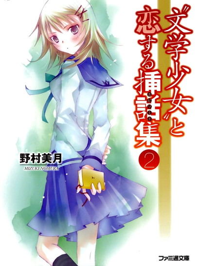
親切だけどお節介で早とちりなななせの親友・森ちゃん。そんな彼女に恋する少年・反町の前に、〝文学少女〟が現れて──!?『〝文学少女〟と愛を叫ぶ詩人』、心葉に恋するななせの切ない胸の裡を描く『ななせの恋日記』ほか、今回はななせ＆森ちゃん達をメインに贈る、物語を食べちゃうくらい深く愛する〝文学少女〟の、恋する挿話集第２弾!!時に本編で語られなかった秘めた想いまでもが描かれる、甘くほろ苦い、珠玉の恋のエピソード集（はあと）
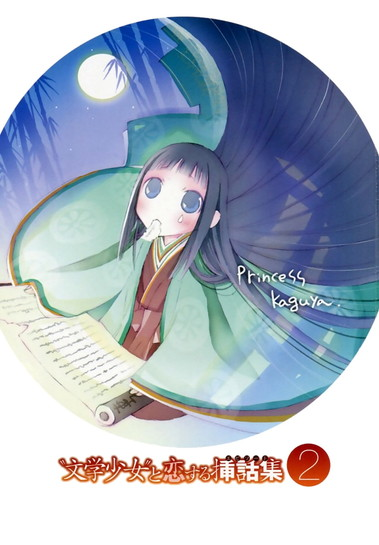
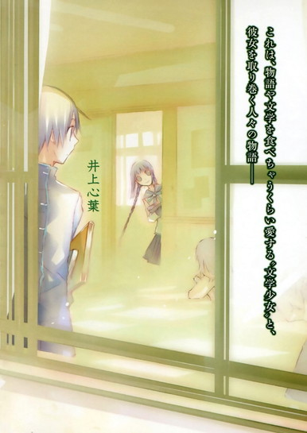
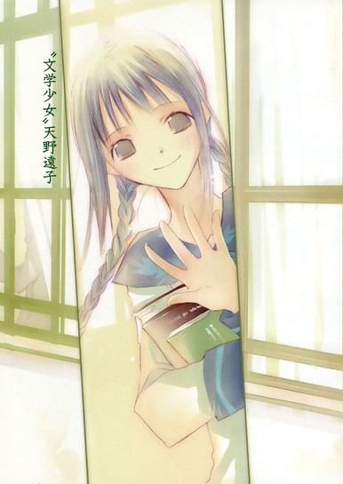
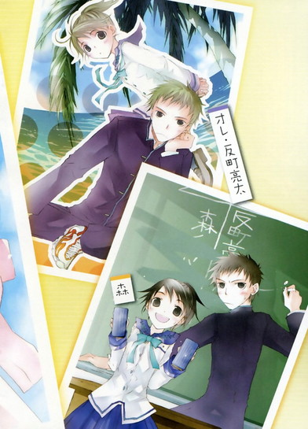
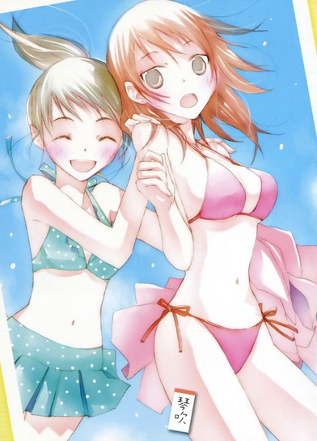
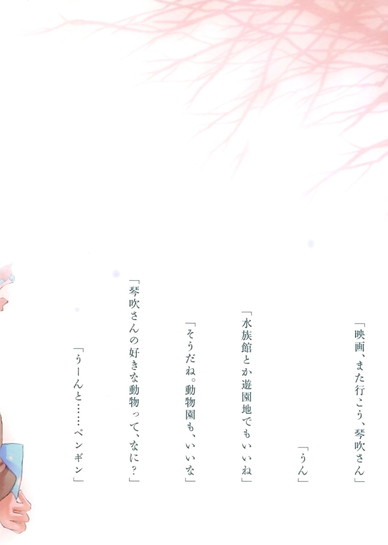
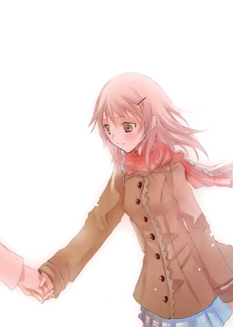
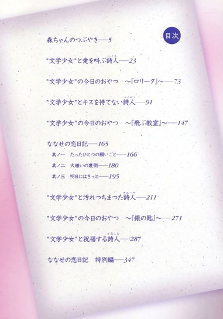
目次
森ちゃんのつぶやき──
〝文学少女〟と愛を叫ぶ詩人──
〝文学少女〟の今日のおやつ ～『ロリータ』～──
〝文学少女〟とキスを待てない詩人──
〝文学少女〟の今日のおやつ ～『飛ぶ教室』～──
ななせの恋日記──
其ノ一 たったひとつの願い事──
其ノ二 大嫌いの裏側──
其ノ三 明日にはきっと──
〝文学少女〟と汚れつちまつた詩人──
〝文学少女〟の今日のおやつ ～『銀の匙』～──
〝文学少女〟と祝福する詩人──
ななせの恋日記 特別編──
〝文学少女〟と恋する挿話集２
野村美月
彼が想っているのは誰なのか、とっくに気づいていた。
二人で話しているとき、急に上の空になったり、唇を閉じて寂しそうな遠い目をする。そんなとき、彼女のことを考えていること。
初めて会ったときも彼は、あたしではない別の女の子を見ていた。
その子に向けられる一途な笑顔にときめいて、あんなに優しい甘い眼差しで見つめられたら、どんなに幸せだろうとうっとりして──すぐに苦しくなった。
あたしは彼に、存在すら知られてなかったから。
それでも毎日彼を見に行った。他の女の子を恋する瞳で見つめる彼を、甘さと痛みの入り交じった気持ちで見つめていた。
高校二年生になって、やっと彼の視界に入れるようになったけど、彼の隣にはまた別の人が──彼女がいて、二人の間には強い絆が育っていた。
彼女と一緒にいるとき、彼が安らかで幸せそうなことも、彼女が誰よりも彼を理解していることも、わかっていた。
あたしじゃダメなんだって......。
とうとう最後まで、彼はあたしに恋をしなかった。
|
それでも、あたしは彼にずっと恋をしていた。 |
森ちゃんのつぶやき
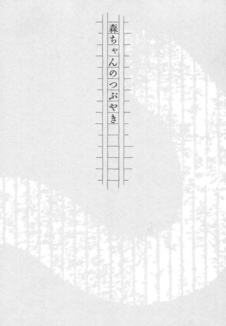
あたしは聖条学園の二年生。友達からは、森ちゃんと苗字で呼ばれている。
下の名前は──知らない。
てゆーか、ＮＧ！
絶対禁止！ 口にしたら、絶交！
みんな、今時珍しくないよとか、可愛い名前じゃない、気にしすぎだよとか言うけれど、だったら今すぐ取り替えてほしい。
お父さんとお母さんは、いたいけな娘に趣味でこんな名前をつけたことを、海より深く反省するように。
以上、この話題は終わりっ。
◇ ◇ ◇
今日は、ななせの話をしようと思う。
あたしが琴吹ななせという女の子を知ったのは、一年生の一学期。中間試験が終わって、高校生活にも慣れた頃。
放課後、図書室へ本を返しに行ったら、カウンターにぶすっとした顔の女の子がいた。
わっ、美人。けど、機嫌悪そう。
それが、第一印象だった。
眉は吊り上がっているし、唇は尖っているし、頬はがちがちにこわばっていて、目も据わっている。制服が新品ぽいから、あたしと同じ一年生だよね？綺麗にカットした髪は明るい茶色で、肩のあたりで軽やかに跳ねている。目はくっきりした二重で、胸も大きくて、スタイルもいい。
美人は、しかめっつらでも美人だなーと感心しながら、一体何を怒っているのだろうと気になった。
ひょっとして、図書委員になりたくなかったとか？なのに、じゃんけんで負けて、押しつけられたとか？それが不満で悶々としているとか？今日デートなのに、当番が回ってきて、行けないとか？
本を渡しながら、あれこれ想像をふくらませ、まじまじ眺めてしまったけど、向こうは一度もあたしと目をあわせなかった。
なんかプライド高そうというか、性格キツそうだなぁと、そのときは思った。
翌日、教室でこの話をすると、
「知ってる。五組の琴吹ななせでしょう？ 男子が騒いでたよ。美人で胸おっきーって」
と、たちまち反応があった。
「うちの更科と張るよね。タイプは違うけど、更科は正当派のしとやか美人で、琴吹はなんつーか、ツンデレ？」
「そうそう、つまんなそーな顔で、そっぽ向いてても、ちやほやされるんだから、美人は得だねー」
「男ってバカだもん。結局見た目なんだよ」
うわ、みんな容赦がないなー。
確かに男の子は美人に弱い。けど、それは女の子も同じじゃないかな。だってほら、あたしたちも、クラスメイトの芥川くんがカッコいいーとか騒いでるし。
そう言ったら、一斉に反論された。
「なに言ってんの！ 森ちゃん！ 芥川くんは顔だけじゃないでしょう！」
「そうだよ！ 中間テストで学年で四番だったんだよっ、頭もいいんだよ」
「それに、スポーツもできるし、性格も真面目で親切だし」
「そうっ、すごく親切なのっ。この前も、荷物抱えて困ってたら運ぶの手伝ってくれたんだよ。それがすごーくさりげなくて、全然押しつけがましくないの」
「うんうんっ、わかるー、優し～よね、芥川くん」
「やっぱり、芥川くんは、顔だけのチャラい男とは違うねっ」
芥川くんの話になると、みんな止まらなくなってしまう。
もちろん、あたしも、入学早々一目惚れしたクチだ。
同学年とは思えないほど大人っぽくて、なんでもできて、なのに物静かで控えめで、頼りがいがあって、見た目まで完璧だなんて、卑怯すぎる。
芥川くんは顔だけじゃないと主張するみんなの気持ちも、よっくわかるけど、あたしは芥川くんの見た目も大好きだ。
和服が似合いそうな涼しげな切れ長の目とか、綺麗な顎とか、まっすぐ伸びた背中とか、視界に入るだけで、胸がドキドキして意味もなく恥ずかしくなってしまう。
たぶん、芥川くんの顔がカバとかラクダみたいだったら、ここまでのトキメキはなかったはずだ。だから、思春期の恋には見た目も大切だよ、うん。もちろん、にじみ出る雰囲気とか、そういうものもトータルでさ。
「ねぇ、芥川くん弓道部でしょう？ 試合とか出るのかな？」
「まだ一年生だから、無理じゃない？」
「でも、二年の先輩より上手らしいよー」
「わー、じゃあ、芥川くんがレギュラーになったら応援に行こう」
「うん、絶対ね」
そんな話を、みんなでわいわいするのは、すごく楽しい。
あたしみたいに、見た目も成績もフツーの子が、芥川くんの彼女になるなんて夢みたいだけど、でも、もしかしたらって想像するだけでも、心が舞い上がる。
やっぱり、好きな人がいるのって、いいなぁ。
芥川くんとクラスメイトでいる間に、ちょっとでも仲良くなれたらいいな。
それからあとも、図書室のカウンターで仕事をしている琴吹さんを見かけた。琴吹さんはいつも唇を尖らせていて、無愛想だった。
◇ ◇ ◇
クラスで一番美人の更科さんが、芥川くんと一緒にいるのを目撃してしまったのは、一学期の期末試験が終わった頃だった。
廊下の隅で、まるで内緒話でもしているみたいな張りつめた雰囲気で向かい合って、
「もし予定がなかったら、土曜の試合を見に来てほしい......」
芥川くんが緊張に顔をこわばらせ、苦しそうな低い声でつぶやくと、更科さんは真っ赤な顔でうなずいた。
胸が押し潰されそうになって、あたしは急いでその場所から離れた。
なに、今の？
芥川くんが、更科さんを試合に誘っていた！
芥川くんは、更科さんのことが好きだったの？
そりゃ、更科さんは髪がさらさらで、色も白くて、綺麗で女の子らしくて、男子にも人気があるし、芥川くんと、美男美女でお似合いだけど。
あたしなんかじゃ、更科さんに敵わないけど。
うわああああああああん、てゆーか、全然勝負にならないよぉぉぉぉ！
◇ ◇ ◇
この日はもう、ぼろぼろだった。授業なんかまったく頭に入らなくて、体中がひりひりして、廊下での二人を思い出すたび、まぶたが熱くなって、目から水が垂れそうになり、必死にまばたきを繰り返した。
まだ、芥川くんが更科さんを好きって決まったわけじゃない。なにかの間違いかもしれない。けど、やっぱりあの会話や、あの雰囲気はそれしか考えられない。更科さんも、うっとりしてたし。
授業中、芥川くんと更科さんをちらりと盗み見ると、芥川くんは切なそうに眉根を寄せていて、更科さんは嬉しそうにぼーっとしている。
それを見て、あぁ、やっぱりあれは、芥川くんの告白だったんだ、更科さんはオッケーして、二人はつきあいはじめたんだと、また胸がぎゅっと締めつけられて、息が苦しくなった。
もうダメっ。まだ一学期も終わってないのに、失恋しちゃったよ～～～～。
はーっ、やっぱり、決め手は顔なのかな。
あたしが更科さんみたいに美人だったら、芥川くんに好きになってもらえたのかな。
そんな後ろ向きの気分のまま、放課後を迎えた。
「森ちゃーん、帰りにクレープ食べてかない？」
「ごめーん、用があるからパス」
いつもみたいに、みんなでおしゃべりしながら帰る気持ちになれなくて、返却期限の迫った本を抱えて、図書室へ行く。
閲覧室で、ちゃちゃっと読んで、返そう。
にしても、なんで『罪と罰』なんて借りちゃったんだろ。名作なんて教科書でしか読まないのに。ああ、そうか、芥川くんが読んでたからだ。
思い出したら、上から石がずどーんと降ってきた。
うなだれたままカウンターの前を通り過ぎる。今日の当番は琴吹さんだ。いつものように不機嫌そうに唇を尖らせて、眉を吊り上げている。
テーブルで読みはじめたものの、ちゃちゃっとどころか一向にページが進まない。
あぁ、はてしなく暗い。
ラスコーリニコフが、なんかうだうだ言ってるし......。失恋したときに読む本じゃないよぉ。もう、読まずに返しちゃおうかなぁ......とカウンターのほうを見たら、同学年ぽい男子が、琴吹さんに話しかけていた。
落ち着かなそうに体を揺らして、うつむいて、ぼそぼそ言っている。
？ 挙動不審だ。
その彼が、ポケットからなにかのチケットを出して、渡そうとしているのを見て、ようやくピンときた。
あ、なるほど。
あの人、琴吹さんのことが好きで、デートに誘っているんだ。
納得して、うわぁと頭の中が熱くなると同時に、息が苦しくなった。
必死に話している彼のほうを、琴吹さんは見ようともしない。こわばった顔で視線をそらしたままだ。
それでも彼がねばると、唇を小さく動かしてひと言かふた言、つぶやいた。
それは断りの言葉だったのだろう。
彼はチケットを握りしめ、哀れなほどしょんぼり肩を落として、図書室から出ていってしまった。
なんだか自分の姿を見ているみたいに思えて、胸の奥が捻れて、そのまま千切れてしまいそうになった。
廊下で芥川くんと更科さんを見たときに感じた、惨めさや敗北感や、皮膚がひりひりするような痛みがよみがえって、喉とまぶたが震える。
あんなに、素っ気なく振ることないのに。
きっと琴吹さんは美人だから、告白されるのに慣れているんだ。だから自分に好意を寄せてくれた相手を、あんな風に冷たく突き放すことができるんだ。
片想いなんか、琴吹さんはしたことないのだろう。
あっさり振られた男子が可哀想で、あたし自身もますます惨めな気持ちになって、鼻がツンとして、慌ててまばたきをしたとき──。
あ......。
ぼやけた視界の向こうに、あたしと同じように泣き出しそうな顔で、唇を噛んでいる女の子が見えた。
まるで鏡を見ているみたいに、伏せた目に涙をにじませ、眉を下げ、苦しそうにうつむいている。
驚いたことに、それは琴吹さんだった。
また、まばたきし、目を凝らす。
やっぱりそうだ。
さっきまで不機嫌そうに唇を尖らせて、そっぽを向いていたのに、今は泣くのを我慢しているみたいに、唇を噛んでいる。
「！」
胸が、ズキッとした。
どうして？ どうして、そんな顔をしているの？
あんなに冷たく振ったのに。
なのに、申し訳なさそうに目を伏せて、震えている。
美人で、告白されるのにも慣れていて、それを断るのも平気なんだと思っていた。
けど、もしかしたら、相手が傷ついている分だけ、琴吹さんも痛いのかもしれない。
カウンターに本を持った生徒が近づいてゆくと、琴吹さんはまた眉をキッと吊り上げ、険しい表情になった。
その顔が、なんだかとてもか弱げで、痛々しく見えた。
◇ ◇ ◇
結局、『罪と罰』を読み切ることができず、下校時間になってしまった。
本を持ったまま図書室を出て、教室に忘れ物を取りに戻ったりして、うだうだやっているうちに、空は明るいオレンジ色に染まっていた。
青空がまだ少し残っていて、その上にオレンジのもやがかかっていて、綺麗だなーと、顔を上に向けて眺めながら歩いていたら、不穏な声が耳に飛び込んできた。
「やっぱり、納得いかないよ。どうしてダメなのか、はっきり言ってくれないかな」
うわっ。
あたしは足を止めた。
さっき図書室で琴吹さんに振られていた男子が、思いつめた様子で、琴吹さんにつめ寄っている。
「琴吹、彼氏とか、いないんだろ。オレのどこがダメ？はじめは友達でもいいから、一度コンサートにつきあって」
「そういうの......無理だから」
琴吹さんはこわばった顔で、視線をそらしている。急いでいるからと言って、横をすり抜けようとしても、向こうが立ちふさがって通さない。
「なぁ、お願い」
身を乗り出されて、琴吹さんが怯えた目で歯を食いしばる。
図書室でほんのちょっとだけ見た、泣きそうな顔が頭に浮かんで、あたしは後ろから大声で叫んだ。
「琴吹さ────ん！」
二人が、驚いてあたしのほうを見る。
あたしは笑顔で駆けてゆき、琴吹さんの腕に自分の腕をからめた。
琴吹さんが目を丸くする。
「よかったー、追いついて！ 買い物行く約束してたんだよねっ。ほらほら、急がなくちゃ。お店が閉まっちゃうよ！」
「あ、あの......あたし......」
「さよぉならー！」
琴吹さんを引っ張りながら、振り返って手を大きく振ると、相手もぽかーんとして、
「さ......さよなら」
と手を振り返した。
あとは、前を見てどんどん進んでゆく。
「えへへ、ゴメンネ、困ってるみたいだったから」
「う......ううん」
琴吹さんが、目を白黒させながら答える。動揺しているみたいで、ちょっと可愛い。
「あたし、琴吹さんと同じ一年生で、森っていうんだ。二組だよ。たまに図書室を利用してる。そんで、琴吹さんのことも知ってたの」
「えっと......今日もいた、よね」
琴吹さんが、ぼそぼそと言う。
あ、覚えていてくれたんだと、嬉しくなってにっこりすると、恥ずかしそうに赤くなった。
「さっきは、助けてくれて、ありがとう。......も、森さん」
声はぶっきらぼうで、視線もそらしているけれど、真っ赤に染まった頬に、おおっ、と感動した。
可愛いっ。
なんだ、めちゃくちゃ可愛いじゃない、この子。
ああ、そうか......。カウンターにいるときも、ずっと緊張して身構えてたんだなぁ。
恥ずかしくって、視線をあわせられないだけだったんだなぁ。
「あの......う、腕」
「あ、ゴメン」
ずっと組んだままだったことに気づいて、えへへと笑いながら、ほどいたとき──。
後ろで、りん......と、涼しげなベルの音がした。
振り返ると、自転車に乗った芥川くんがいた。
わわっ！
「森、今帰りか」
なんと！ 話しかけてきた。
「う、うんっ。図書室にいたから。芥川くんは部活？」
「ああ。......じゃあ、また明日」
「うん、明日ね。ばいばーい！」
たったそれだけの会話だった。
芥川くんは微笑むと、すぐに自転車を漕いで行ってしまった。
あたしは大声で「明日ね！」と叫んで手を振りながら、足が宙に飛び立つ思いだった。
芥川くんと、帰り道に偶然会えたこと。
芥川くんが、「森」とあたしの名前を呼び、あたしの顔を見て、話しかけてくれたこと。
また明日と言ってくれたこと。
その全部が、ただただ嬉しくて、胸が甘くてあたたかな気持ちでぱんぱんにふくれて、あぁ、やっぱり芥川くんのことが好きだなと思った。
芥川くんは更科さんが好きで、二人は、もうつきあっているかもしれない。
けど、それでもいいや。
だって、今、こんなに嬉しいんだもん。
ゆるむ頬に両手をあてて、にまにまと一人笑いするあたしを、琴吹さんが、びっくりして見ている。
どこまでも高揚してゆく気持ちが止められなくて、あたしは明るい声で言った。
「ねぇ、今の人、すごくカッコいいでしょう？芥川くんっていうんだよ。うちのクラスで、一番人気のある男の子なんだよ」
「そ......そうなんだ」
面食らう琴吹さんに、芥川くんのことを、ぺらぺらしゃべり続ける。
「弓道部で、一年生なのにレギュラーに選ばれたんだよ」
「そ、そう。すごい......ね」
「でしょう！ 成績もいいんだよぉ。中間試験は四番で、期末試験は二番だったんだよ」
「へぇ......」
「それでね、それでね」
景色が夕暮れのオレンジ色から、夜の藍色に変わってゆく。
そんな中、あたし達は並んで歩いていった。
さよならを言うとき、
「あたしのことは森さんじゃなくて、森ちゃんて呼んで。友達はみんなそう呼ぶの」
と言うと、はにかむように口元をほころばせて、
「うん」
嬉しそうにうなずいた。
その顔も、ちかちかまたたくお星さまみたいに可愛かった。
◇ ◇ ◇
あれから一年以上経つ。
今は二年の二学期で、あたしとななせはクラスメイトだ。
芥川くんも同じクラスで、まだまだ片想い続行中だけど、毎日顔を見られるだけで、あぁ今日もカッコいいなぁ、幸せだな～と思ってしまう。
ななせも、好きな人がいるみたい。恥ずかしがって必死に隠しているけれど、いっつも井上くんのことを気にしているので、すぐにわかってしまった。
なのに井上くんの前だと、ますますぶっきらぼうだし、顔はこわばっているし、「嫌い」とか言っちゃったりして、焦れったいったらない。
男子には相変わらず人気で、同じクラスの反町くんとか、最近ななせのことをよく見ている。この前、ななせと目があって、真っ赤な顔をしていた。
反町くん、背も高いしノリもいいし、悪くないんだけど、やっぱりななせは、井上くんじゃなきゃダメなんだろうなー。
せめて、井上くんが、あんな鈍感じゃなければ......。しかも押しが弱そうだし、頼りなさそうだし......うぅぅぅぅ、放っておいたら、永遠に進展しなさそう。
やっぱりここは、あたしが友達として、ななせと井上くんをとりもってあげなきゃだね。
よーし、頑張るぞー。
〝文学少女〟と愛を叫ぶ詩人
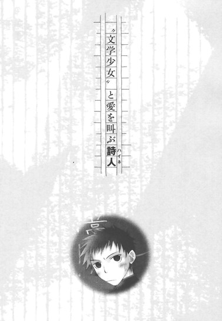
「反町くんって、ななせのことが好きなんでしょう？」
早朝の教室で、いきなりそんな突っ込みを受けて、オレは赤面した。
「ねぇ、そうでしょう？ 当たりでしょう？」
森が、ぐいぐい迫ってくる。
「あたし、そういうの敏感なんだ。反町くん、ななせのことよく見てるし、この前も、ななせが反町くんのほうを見たら、慌てて目をそらしたよね。今日、いつもより早く登校したのも、あたしにななせのことで話があったからじゃない？」
オレの口から、「あー」とか「うー」とか、情けない声が漏れる。十一月も半ば近くになり、外はそろそろ冬景色だ。なのに、頭がやけに熱くなり汗が吹き出してくる。
森のヨミは当たっている。
いつも遅刻ギリギリのオレが、三十分も早く家を出たのは、森が日直と知っていたからだ。森と話したかったからというのも、正解だ。
けど、
「わかるよ、ななせ美人だしスタイルいいし、男の子に人気あるもんね。ななせが彼女だったら、すっごい自慢だよね」
深くうなずく森。
オレは、まだ「あー」と「うー」以外、言えていない。
「だけど、ゴメンッ。無理だと思う」
森が一転してすまなそうな顔になり、ぱちんと手をあわせる。
「反町くんが悪いわけじゃないんだよ。反町くん結構カッコいいし、運動神経いいし、話もおもしろいし、全然イケてると思う。あたしも、相手がななせじゃなきゃ協力してあげたいんだけど。でも、本当にゴメンナサイ、ななせだけはあきらめて。そのほうが、反町くんのためだよ」
「森、オレは──」
からからに渇いた喉で、出かかった言葉がつかえる。
あーくそっ、なんで、言えねーんだ。
オレは──。
オレは──。
真っ赤な顔で唸っているうちに、別のクラスメイトが登校し、森は、
「じゃあね、反町くん。気を落とさないでね。他のことなら相談に乗るから」
とオレを励まし、去ってしまった。
「おはよっ、鈴乃！」
「あ、おはよう、森ちゃん。今朝、日直だったんだね」
友達と楽しげに会話する森を恨めしげに睨みながら、オレは腹の中で叫んだのだった。
（バカヤロォォォォッッッ！
オレが好きなのは琴吹じゃなくて、おまえだーっ！森ッッッ！）
◇ ◇ ◇
名前で呼ぶのはＮＧだよっ。
頬をふくらませて主張する、クラスメイトの森に、オレ──反町亮太は惚れている。
なのに、オレが、琴吹ななせを好きだって？一体何故！どうして！そうなる！
オレが琴吹のことを見てるって？ 目が合って焦ってたって？
バカッ、それは、おまえがいっつも琴吹と一緒にいるからだ。オレは、琴吹じゃなくて、おまえを見てたんだっ。
なのに、森は完璧に誤解している。
◇ ◇ ◇
「やっぱ、うちのクラスで一番の美人は、琴吹ななせだね」
「だよな！ 胸もあるし、いいよなーっ、琴吹ちゃん」
四時間目の体育の時間。
体育館で男子はバスケットボールを、女子はトランポリンをしている。
出番を待つ間、野郎で固まって女子の品定めをしているのは、よくある光景だ。こんなとき真っ先に話題にのぼるのは、琴吹ななせだった。
「あのキツイ目とか、つんけんした口調が最高」
「ガード、めちゃくちゃ固いよなぁ」
「ツンデレだぜ、ツンデレ」
そうかぁ～？
確かに美人かもしれんが、目つき悪ぃし、愛想ねーし、男嫌いっぽいし、琴吹なんかのどこがいいのか、オレにはさっぱりわからん。
ツンデレっつーか、ツンツンツンツン......フンッだろ、あれは。デレが全くねぇ。性格が悪ぃ。ただただムカツク。あんないっつも不満そうな、ぶすくれた女とつきあったら、こっちまで暗くなる。つか、気詰まりなだけで、全然楽しくねーだろう。
その点、森は明るくて、話していて気持ちがいいし。相手を盛り上げようというサービス精神にあふれている。顔だって、オレはじゅうぶん可愛いと思うし、スタイルだって悪くない。
なにより、性格がいい！
森は自分の名前が嫌いで、それで呼ばれると『名前はＮＧだよっ。次に呼んだら絶交だよ』と怒るけれど、それ以外でぶすくれているとこなんて、見たことがない。
誰に対しても親切で、友達も多い。
そんな森を意識するようになったのは、夏休みの前からだ。
休み時間に、いきなり森がオレのところへやってきて、嬉しそうに顔を輝かせたのだった。
「はい、これ、反町くんのでしょう？」
差し出した手のひらには、シャツのボタンが載っていた。
「え？ あれ？」
慌てて着ているものを見おろすと、三個目のボタンがいつの間にかなくなっている。
「あー、マジ、オレのだ」
森が、ぱぁっと笑う。
「えへへ、教室に落ちてたから、うちのクラスの人のだなぁーと思って、捜してたんだ。よかった」
「そ、そっか。サンキュ」
「あ、ボタンつけたげるよ。脱いで、反町くん」
「脱いでって──いいよ、別に」
「大丈夫、お裁縫得意だから、すぐ終わるよ。ほら、早く早く」
からりとした顔でそう言い、オレのシャツを脱がせ、自前のソーイングセットで、手早くボタンをつけてくれた。
「はい、完成っ！ 今度はとれないように、しっかり縫いつけておいたからね」
シャツを差し出しながら笑ったその顔が、すごく自然で明るくて──すごくすごくすごくっ──可愛く見えて──。
そんで気になって──こっそり見ているうちに、ますます気になって、好きになってしまったのだ。
たぶん、ボタンを落としたのがオレじゃなくても、森は一生懸命捜したろうし、喜んでボタンをつけてやったろう。森はそういうやつだ。だけど、そういうことを意識せずに、あたりまえにできるところが、好ましいと思う。
うん、やっぱり、森はいい。
つきあうなら琴吹より、絶対森だな。
クラスの連中の見る目のなさを、せせら笑ってやりたい気もしたが、森がいかに可愛いか、性格がいいかを宣伝して、わざわざライバルを増やすこともない。
森の良さは、オレだけが知っていればいい。
それより最大の問題は、森に妙な誤解をされているということだろう。
「なぁなぁ、反町も、琴吹派だよな？」
「おまえ、琴吹のこと、よく見てるもんなー」
両脇から肘で突かれ、にやにやされ、オレは心底腹が立ち、叫びそうになったのだった。
ちげ────っ！
◇ ◇ ◇
なんてことだ。森ばかりか、他の連中まで、オレが琴吹ラブだと思ってやがる。
殴りつけてやりたいのをこらえて否定したら、「照れるなよ～」とますますにやにやされた。
ああ、くそっ。本当にオレは琴吹のことなんかなんとも思ってねーっ。
つか、うぜぇ、琴吹。
放課後。
いらいらしながら昇降口を出て、校門へ向かって歩いていたら、後ろからポンッと肩を叩かれた。
「今帰り？ 反町くん」
うぉっ、森！
うろたえるオレの隣に森がちょこんと並び、そのまま二人で下校する。
淡いオレンジ色のマフラーを巻いて、冬の寒さに頬を赤くした森は、やっぱり可愛い。真っ赤な夕焼けがオレ達を包み込む。なんつーか、青春だ。
「今朝のこと、ゴメンネ」
「いや、それは......」
「反町くん、今日ずぅっと落ち込んでるみたいだったから、気になってたんだよ」
「だからそれは、おまえの誤解......」
「体育の授業のときも、辛そうに、ななせを見てたでしょう？」
「オレの話を聞けっ、森！」
「あたしも、なんだか切なくなって、キュンとしちゃったよ」
「へ？」
森は目をうるませ、うつむいている。
も、もしかして、同情から恋が生まれるとかゆーパターンか？それはそれで、おいしいかも。てゆーか、最終的に森と彼氏彼女になれれば、問題ないわけで......。
「あ、あのさ、森は好きなやつ、いるの？」
「えっ」
森が真っ赤な顔で、オレを見る。
おおっ、これはひょっとして、脈ありなんじゃ。
琴吹のことはあきらめろとオレに忠告したのは、ヤキモチか？そうなのか？はじけそうな期待に胸をドキドキと高鳴らせ、さらに尋ねる。
「オレのことばっか、不公平だろ？ 森の好きなやつのことも教えてよ」
「えっとぉ......」
森はますます頬を赤くし、恥ずかしそうにもじもじしたあと、内緒だよ、とささやいた。
「うちのクラスの人」
おおっ。
「芥川くん」
可愛らしくはにかんだその顔に、オレは打ちのめされた。
芥川だ────っ!?
「もぉっ、本当に内緒だよ。男子で話したのは反町くんだけなんだからねっ。言っちゃヤダよ」
森はデレデレにデレまくり、オレの腕をぱしぱし叩いている。
よりによって、芥川一詩。
顔良し、スタイル良し、成績良し、弓道部のエース、おまけに誠実で人望も厚い、完璧超人じゃねーか。うちのクラスで男子の一番人気が琴吹なら、女子の一番人気は間違いなく芥川ってぐらいモテモテのやつだ。
その選択はミーハーすぎだろっ、森！
ああけど、相手が芥川じゃ、まず森には望みはねーから、いいのか。
芥川はモテるわりに浮いた話のないやつだ。一年のとき、女がらみで部の先輩と一悶着あったようで、ごく最近もそのことで、先輩に怪我をさせてしまう騒ぎになった。
そんなこともあって、不用意に女を近づけないようにしているのだろう。よくわかんねーけど、モテるやつはモテるなりに大変なのだ、きっと。
まぁ、だから、森の想いが叶うことはないだろう。
一時期芥川と、ちらっと噂になった更科という女子も、美人で有名だったし。
いや、森が芥川に相手にされねーとか釣り合わねーとか、そーゆーんじゃなくて......えっとその......あくまで一般的に見て、芥川は森には合わなそうとゆーか......。も、もちろん！どんな美人より、オレの目に映る森は、可愛くて美人だ！
って、なに言い訳してんだ、オレ。
「そ、そっか、森は芥川派か。はは......ははははははは......ライバル、多そうだな」
「うん。でも、好きな人が同じ教室にいるだけで、毎日楽しいんだ」
「はは......それはよかったな......はは......はははは......」
もはや渇いた笑いしか出てこねー。
「頑張れよ、森」
って、なに応援してんだ。
赤い夕日の中で、森は頬をほころばせ、目を輝かせ、嬉しそうに笑った。
「ありがとう。反町くんも......辛いだろうけど、早くいい人が見つかるといいねっ」
北風が肌に染みる。泣いてもいいか？ オレ。
◇ ◇ ◇
『好きな子に、まったく、これっぽっちも、気持ちが伝わりません。
オレの言語能力に問題があるんでしょうか。
どうしたら、告白できるスか。
ぽとん。
半ばヤケクソで、そんな走り書きを、中庭のヘンなポストに落とした。
その三日後──。
◇ ◇ ◇
「きみが、この手紙の送り主ね、反町亮太くん」
教室に、三つ編みのヘンな先輩が現れた。
「うわっ、そ、それは──！」
一時の衝動に突き動かされて書いた、超──恥ずかしい文面を、鼻先にひらりと突きつけられて、オレは心臓がひっくり返りそうになった。
「やっぱり、きみね」
相手が、得意満面の笑みを浮かべる。
確か三年生で、文芸部の部長をしている天野という人だ。オレ達のいっこ先輩だが、腰まで届く黒く長い三つ編みが印象的で、知的でしとやかな美人と評判なので、名前と顔は知っている。
実際、間近で見ると、腰とか足とかすっげー華奢で、顔もちっせー。肌の色も抜けるように真っ白で、睫毛が長く目が綺麗で、おまけに声も澄んでて、まさに古風な美少女という感じだ。ただし胸は全くねーけど。
「あ、あのっ、あんた一体」
「わたしは、文芸部部長の天野遠子。ご覧のとおりの〝文学少女〟よ」
ない胸を反らして、天野先輩が断言する。
オレは、「はぁ？」と間抜けな声を出してしまった。
文学少女？
なんだそりゃ？
文芸部だから、文学少女なのか？
混乱するオレに、文学少女が偉そうに言う。
「イニシアルから手紙の送り主を割り出すのは大変だったのよ。けど、この学園のどこかに、文学少女たるわたしの助けを必要としている、恋に悩める子羊がいるのだと思って、想像力を駆使して、おやつを食べる時間も惜しんで、必死に探し当てたの」
「名簿見て調べたの、ぼくですから......。遠子先輩は椅子に座って、『おやつ～、おやつ～』って、催促してただけでしょう」
天野先輩の隣で、苦々しげにつぶやいたのは、知ってる顔だった。
同じクラスの井上だ。清潔感のある優しい顔立ちをしていて、成績も良く人当たりもいいが、おとなしいせいか、あまり目立たない。
そういやこいつ、文芸部だっけ。
「そんなことないもんっ。ちゃんと、あちこちのクラスに足を運んで、『きみがこの手紙の送り主ね』って、五人も確認したもんっ」
天野先輩が井上のほうを向いて、不服そうに頬をふくらます。
「げっ、オレのとこ来る前に、その手紙、五人も見せたのかっっっ！」
「そうよ。六人目で、きみのところに辿り着いたの」
またオレのほうを見て、悪気なくにっこり笑う。
オレは恥ずかしさに、頭が沸騰したように熱くなり、走って逃げ出したくなった。
あんなうわごとのような内容を、五人もの無関係な人間に見られたのか！
ひでぇ赤っ恥だ。
「た、頼むっ。それ返してくれ。いや、返してください！そんで、なにもかも全部忘れてください。そんなの放り込んだのは、気の迷いだったんです、どっぷり後悔してます。勘弁してください」
ヘコヘコ頭を下げるオレに、天野先輩が透きとおった綺麗な声で言う。
「とんでもないわ。勇気を振り絞って、文芸部のポストにお手紙してくれたきみに、わたしたちは最大限の協力を惜しまないわ」
「反町くん、ぼくは関係ないからね。遠子先輩が勝手にやっていることだからね」
「大丈夫、口では生意気なことを言っても、心葉くんも、クラスメイトの窮状を見過ごしにしたりはしないわ」
頼む......見過ごしにしてくれ。
井上は、苦い顔で肩をすくめている。
天野先輩は楽しそうに、身を乗り出してきた。
「まずは反町くんの好きな女の子のことを、教えてもらおうかしら」
「えっ！ そ、それはっ」
声を詰まらせ、井上のほうを見る。
ここで森の名前を口にしたら、クラスの連中にオレが森を好きだと、広まってしまうかもしれない。
「わかったわ！ その子は、反町くんのクラスメイトねっ」
「うげっ」
鋭いっ！ おっとりして見えるのに、なんて勘の良さだ。オレの井上への視線だけで察したのか。
「だ、ダメだっ。これ以上はダメだっ！ 絶対、言わねー。言うもんかぁっ！」
首をぶんぶんと横に振って拒否るオレを、井上が気の毒そうに見ている。
「遠子先輩、反町くんの意志を尊重して、もうやめておきましょう」
「そんな弱気じゃダメよ。反町くん、きみに足りないのは、言葉じゃなくて、相手に気持ちを伝えようとする情熱よ。文学少女のわたしから、きみにこの本をお薦めするわ」
そう言って、天野先輩が一冊の本を押しつけてくる。
なんだこりゃ？
『ハイネ詩集』？
ハイネって？ ？ ？
どっかのバンドのメンバーに、そんな名前のやつがいたっけ？それとも、アニキャラか？
困惑するオレに、いきなり天野先輩が流れるような口調で語り出した。
「ハインリヒ・ハイネは一七九七年に、ドイツのデュッセルドルフに生まれた作家よ。本人は一七九九年生まれとも言っていたようだけど。両親はユダヤ系の商人だったわ。
ハイネも少年の頃から、親戚の叔父さんが経営する銀行で働いていたの。けど、商人としては芽が出ず、叔父さんが作ってくれた会社も潰してしまって、そのあと叔父さんの援助で大学へ進むのよ。
恋愛詩人と呼ばれたハイネの生涯は、切ない恋に彩られているわ。
死刑執行人の娘、ヨゼファ。
叔父さんの長女で、驕慢で華やかなアマーリエ。
その妹、テレーゼ。
パリで出会った靴屋の売り子マティルドは、ハイネの妻になったけれど、無学で享楽的で浪費家の彼女との生活は苦難の連続でもあったわ。
そしてハイネの最後の八ヶ月──病床にあった彼の世話をしてくれた、謎めいた女性、カミラ。
どの恋も、決して幸福な恋ではなく、そのほとんどが成就しなかったわ。妻になったマティルドも、ハイネの安らぎにはならなかった。けれどハイネは死ぬまで恋をし、それによって生まれた気持ちを、甘く美しい詩にしたのよ」
なんだ？
なにが起こっているんだ。
天野先輩の黒い目は、ライトを浴びたみたいに、きらきら輝いている。
「ああ、ハイネの詩は、まるでドライフルーツをぎっしり詰めて焼き上げた、大人のケーキのようね！レーズン！オレンジピール！干しイチジク！くるみ！チェリー！プルーン！凝縮された甘みが、素朴な生地にしっとりとけ込んで、舌に突き抜けるような衝撃を与えるのよ。
たったひと切れでも、おなかを満たしてくれる上に、ドライフルーツに染みこんだ洋酒で、体も心も、ほんわりあたたかくなっちゃうの。
『ローレライ』も、『たそがれの薄明』も、ロマンチックで素敵だけど、『歌のつばさ』は真っ先に読んでほしい傑作よ。この詩はメンデルスゾーンが曲をつけているわ！」
あっけにとられているオレの前で、なにやらうっとりと、暗唱しはじめる。
『歌のつばさのうえにのり
いっしょに行こう恋びとよ
ガンジス河の草原に
ふたりの憩う場所がある』
『すみれは たがいにほほえんで
星をあおいで語りあおう
ばらは たがいにむつまじく
あまい話に頬よせる」
おい待て。
ここは、学校の廊下じゃなかったのか？
オレは知らないうちに、吟遊詩人が生息する異世界にトリップしてしまったのか？
朗々と詩を詠じる天野先輩の横で、井上が恥ずかしそうに顔に手をあてている。
「ねぇ、素敵でしょう？
それに、『告白』！ この詩は、きみに特にお薦めよ！
『いまぼくは手に力をこめ
ノルウェーの森のいちばん高い樅を引きぬき
エトナの山の煮えたぎる
火口にそれを浸し
火をふくむ巨大な筆にして
暗い空のおもてに書こう
「アグネスあなたを愛す」』
ああ、こんな熱烈な告白をされたら、女の子なら誰でも、くらっときちゃうわ」
そうかぁ～～～～？
オレが女だったら、いきなりノルウェーだの、巨大な筆だの言われたら、ドン引きするぞ。
天野先輩は閉じていた目を、ぱちっと開くと、やわらかな白い手でオレの手を握りしめ、晴れやかな表情で見上げた。
「ハイネは難しい言葉を使わずに、誰にでもわかる簡単な言葉で、恋する気持ちを綴ったの。だからこそ、多くの失恋を経験して作られたその詩は、恋に悩む青少年に深い共感をもって迎えられたのよ。
いわばハイネは、恋するみんなの、友達のようなものよ！
ほら、荒木とよひささんの『四季の歌』にもあるでしょう？
秋を愛している人は心がとっても深い人で、愛を語っちゃうハイネみたいな僕のお友達だって。ハイネはきみの友達よ！反町くん」
「んな失恋ばっかしてるポエマーな友達は、いらねぇ！」
手を振り払い本を突き返そうとするが、天野先輩はますますにっこりし──そらもう見惚れるほどに、あたたかく可憐に微笑み、
「まずは、この詩集を最初から最後までじっくり読んで、ハイネの言葉に耳を傾けてみて。きっとハイネがきみに力を貸してくれるわ」
と、一方的にまくしたて、
「じゃあね～、反町くん！ 人手が必要なときは、いつでも心葉くんを使ってやって。もちろん、〝文学少女〟たるわたしも、きみの恋の行方を見守っているわ。恋が見事成就した暁には、お礼のレポートを忘れないでね」
白い手を、蝶々のようにひらひら振って、去っていったのだった。
レポートって、なんなんだっ！
それに、あの人、ああいうキャラだったのか？
誰だよ、美人で優しくて、物静かなお姉様とか言ってたの！
どこが物静かなお姉様だ！
「おい、井上っ、おまえんとこの部長ヘンだぞ！」
わめくオレに、井上は目を伏せ肩を落とし、沈鬱な面持ちでつぶやいたのだった。
「うん、それは一年以上前から、よ────くわかってるんだ。だからゴメン。ぼくには遠子先輩は止められないから、きみもあきらめて」
◇ ◇ ◇
そんなわけで、オレは無理矢理押しつけられた〝お友達〟と一緒に、帰宅したのだった。
本なんて、夏休みに感想文を書くのに読むくらいだ。めんどくせー。
そもそも男が、詩なんてめそめそしたもの読めっか。詩っていったら、おまえ、ポエムだぞ。ポエム。うわ～～～～、背中がかゆくなる～～～～。
鞄から出したものの、ベッドに放りっぱなしになっていた。
が、風呂からあがったあと、ふと目について、
「せっかく薦めてくれたのに、まるきり読まねーのも悪いかな」
と、適当にめくってみた。
まぁあれだ、ＣＤの歌詞カードを読むつもりで、眺めりゃいいんだよな。
ふむふむ......。
あれ？ なんだ、意外にさくっと読めるじゃねーか。
そういや、誰にでもわかる言葉でとか、天野先輩が言ってたな。
大人のフルーツケーキとか、素朴でしっとりとか。
ふむ......。
三十分経過。
「......この『はじめて恋をするものは』って、結構好きかも」
四十分経過。
「っくぅぅ、か、可愛いじゃねぇか、『ばら ゆりはと』」
一時間経過。
「『愛のあいさつ』かぁ......わかるぜっ、この気持ちっ。『ぼくがおまえを見たときにぼくの心にじんときたあれがほんとの恋かしら』──いいねぇ！」
二時間経過。
「うわぁぁぁっ、ハイネぇ！ 『おれは不幸なアトラスだ』、そーか、おまえはアトラスか。そーか、そーか、辛かったんだなぁ。ハイネ！その気持ち、すっげーわかるぞ。片想いって辛ぇよなっ。『泣きたいのだ』くぅぅ、オレが代わりに泣いてやる～～～～」
最後のページを読み終えたのは、真夜中だった。
本を閉じたあと、オレは頬を濡らす熱い涙と胸を震わす感動とともに、しみじみとつぶやいたのだった。
「ハイネ、おまえは友達だ」
◇ ◇ ◇
不思議なことに、ハイネと友情を結んだとたん、それまでオレを取り巻いていた景色が違って見えるようになった。
木々が冬の風に揺れるのを見ては、心がひりひりと切なくなり、道ばたの草が健気に伸びているのを見ては、目頭が熱くなった。
心が深みを増した──というのだろうか。
昨日までのオレと今日からのオレは、別人といってもよかった。
休み時間もハイネの詩集を思い返し、心の中で友と会話する。
『夕闇が迫るにつれて
波はいよいよ荒れ狂う
ぼくは渚にすわって
白い波が踊るのを見ていた
ぼくの胸も海のようにわき立ち
せつない郷愁に駆られる』
『おお あなたよ いとしいひとよ
あなたの姿はどこにでも浮かび
どこででも ぼくを呼ぶ
どこにでも どこででも
風のざわめきに 海のひびきに
そして ぼくの胸の吐息に』
ふぅー、『告白』──いい詩だぜ。
「反町、なに溜息ついてんだ？ メシ食わねーのか？」
「胸がいっぱいなんだ」
「おま、今日ヘンだぞ。やけに目がうるうるしてるし。季節はずれの花粉症か？それとも風邪か？」
「そう......医者には治せない心の病なんだ」
クラスメイトは、しきりに首をひねりながら離れていった。
ふっ......。オレの気持ちを理解してくれるのは、ハイネだけだ。
「あのっ、反町くん」
窓を見ながら一人黄昏れていたら、今度は井上が、おずおずと近づいてきた。
「昨日、遠子先輩が言ったこと、気にしないほうがいいよ。あの人はいつもああだから」
「いや、天野先輩には、友達を紹介してくれてありがとうと、オレからの感謝の気持ちを伝えておいてくれ」
「反町くん......」
井上の目が丸くなる。
そういえばこいつ、芥川と仲が良かったな。よく休み時間に、優等生らしく宿題の答え合わせをしている。芥川に浮いた話がないのは、井上とデキているからだなんて馬鹿な噂もあったっけ。
「なぁ、井上。芥川って、彼女いるのか？」
「と、唐突だね」
「オレにとっては、重要なことなんだ」
「うーん......。はっきり聞いたことはないけど。好きな人はいるみたいだよ」
「誰だ！ まさかうちのクラスのやつじゃ」
「違うと思うな。前に、なかなか会えないって言ってたから、よその学校の人じゃないかな」
「そうか」
まぁ、芥川と森がくっつく可能性なんて、〇・一パーセントもないだろうけど、芥川の本命が校外にいるらしいとわかって、胸が明るくなった。
「芥川に一日も早く恋人ができることを、オレは心の底から祈ってる」
「なんで反町くんが、芥川くんの彼女のことを気にするの？」
「それは、恋する者だけの秘密だ」
「反町くん、キャラ違うよ」
井上もまた、困っているような表情で離れていった。
オレは再び、心の中でハイネと語り合う。
ああ、この切ない想いを、森にどう伝えよう。
『あなたの青い目で
愛らしく見つめられると
ぼくはもううっとりとして
物が言えない
あなたの青い目を
どこへ行っても思い出す
青い思いの大海が
ぼくの心にみなぎっている』
「わかるぜ、ハイネ」
胸がいっぱいになり、溜息をつく。
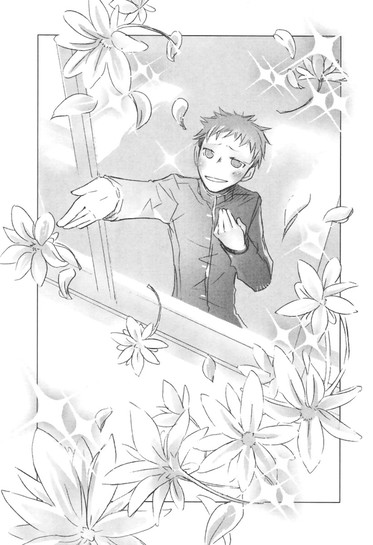
すると、森がえらく哀しそうな顔でやってきた。
「反町くん、来て」
何故だ。
何故森は、こんなに肩を落とし、しょんぼりしているんだ？
なにがあったんだ？ 森？
ひょっとして、芥川に告白してフラれたのか？よしっ！それなら、オレが男らしく慰めて──。
頭の中で、そんなことをぐるぐると考えながら、森のあとについてゆく。
森は人気のない廊下の隅までくると、ぴたりと立ち止まり、うるんだ瞳でオレを見上げた。
その哀しみに満ちた弱々しげな表情に、オレは胸が締めつけられるように苦しくなった。
「反町くん......あたし、やっぱり耐えられないよ」
ど、どういうことだ？
「反町くんを見てると......辛くて......切なくて......」
そ、それは、愛の告白か？
そうなのか!? 森！
オレも好きだと言おうとしたとき、森がオレの肩に、伸ばした両手をそっと置いた。
「そんなに顔も性格も暗くなって、窓の外見てぶつぶつつぶやいて、お弁当も食べられなくなっちゃうほど、ななせのことが好きで、忘れられないんだね」
「はぁっ？」
オレは思いきり口を開け、目をむいた。
森が、泣くのをこらえるように顔を伏せ、ふるふると首を横に振る。
「反町くんの気持ち、よぉぉぉぉくわかるよ」
いーや、おまえはわかってねぇ。
「ななせのこと、本当に、本当に、大好きなんだね」
違うっ。オレが好きなのは、おまえだ。
「この前は協力できないって言ったけど。このままじゃ反町くん、辛いよね。ななせのこと、ずっと忘れられないよね」
だから、琴吹は関係ねぇ！
森は目のふちに涙をにじませてオレを見上げ、勇気づけるようににっこり笑った。
不覚にも、その顔が反則的に可愛くて、オレは言葉を失った。
「あたし、決めた。反町くんの力になるよ」
「ち......力になるって？」
つまりその、森はオレが琴吹に惚れていると誤解していて、それで力になるってことは、要するに......。
「ななせはまだフリーで、......くんの彼女ってわけじゃないもの。この先なにが起こるかわからないもんねっ。ななせが反町くんのこと好きになることだって、あるかもしれないよ、うんっ。ななせとうまくいくように、反町くんのこと応援する！あたしに任せといてっ！」
「おいこら！」
「だから反町くん、元気出さなきゃダメだよ。はいっ、これあげる」
森はポケットから、個別パッケージされたクッキーを出して、オレの手のひらに置いた。
「じゃあ、またあとでね」
「ま、待て、待つんだ、森く──」
背中を向けて駆け出す森を呼び止めるため、名前を口にしかけたとたん、頬をふくらませ、殺気のこもった目で振り返った。
「名前はＮＧ！」
「わ......悪ぃ」
びびって謝ると、またにっこりし、
「じゃあね～」
そのまま笑顔で去っていったのだった。
森の姿が曲がり角の向こうに消えると、オレはがっくりと膝をついた。
何故だっ？ 何故っ、あそこまで徹底的に誤解できるんだ。
オレは、琴吹が好きだなんて一度も言った覚えはねーのに。
森は確かにいいやつだ。
親切で公平で、面倒見がよくて、他人のために一生懸命で。そんな森が、オレは好きだ。あの性格に、ずっぽり惚れている。
けど、ひょっとしたら、森はとんでもなく、早とちりの、おっちょこちょいなのではなかろうか。
とにかく早急に誤解を解かねば。でないと、ますますやっかいなことになる。
教室に戻ったオレは、授業を受けている間ずっと、森にはっきり気持ちを伝えようと考えていた。
もう、弱気になったり、恥ずかしがったりしている場合ではない。
ここでびしっと決めなければ、好きな女に、別の女との仲を取り持たれるハメになる。
よしっ、放課後、森を誘って一緒に帰ろう。
そこで、告白するぞー！
見ててくれ、ハイネ！ オレはやる！
◇ ◇ ◇
そうして掃除も終わり、下校時間になった。
オレは全身に力を入れて、森のほうへ近づいていった。
「森、話があるんだ。一緒に──」
「あっ、反町くん。一緒に帰ろう」
なんと、森のほうから誘ってきた。
「お、おぅ」
上擦りながら答え、並んで歩き出す。
森はにこにこと、今日の数学の授業で教師がかましたギャグのことなど話している。
階段を降りて昇降口へ向かおうとしたとき、
「あ、ちょっと待って。待ち合わせしてるの」
と、図書室のほうへ歩き出した。
へ？ 待ち合わせ？
「お待たせー、ななせ」
「げっ！」
図書室で帰り支度をして待っていたのは、琴吹ななせだった。
オレも目をむいたが、向こうも驚いて息をのみ、それから警戒しているような硬い表情になった。
「ななせは今日、図書室の掃除当番だったんだよっ。一緒に帰る約束してたんだ。ななせ、そこでたまたま反町くんに会ったの。三人で帰ろっ」
「......」
琴吹は、まだ警戒するような目をしている。
「森ちゃん、あたし......」
「ほらほら、行こう」
不満そうな琴吹の腕を引っ張って、森が歩き出す。
「ほら、反町くんも、早くぅ」
明るい声で呼ばれて、オレも仕方なく歩き出した。
しかし、気まずい。
門へ向かう間、琴吹は唇を尖らせたままひと言もしゃべらなかった。
オレも、森の話に「あぁ」とか「うぅ」とか受け答えするだけで、真ん中を歩いている森一人が、能天気なトークを繰り広げている。
門を出て、どれくらいたったろうか。
あまりの空気の重さに、百メートルが千メートルにも一万メートルにも感じられたとき、森がわざとらしく叫んだ。
「いっけない。忘れ物しちゃった！ あたし学校に戻るから、反町くんとななせ、二人で先に帰ってて！」
「おい、森！」
「......！」
叫ぶオレと、目をむく琴吹を置いて、森はあっという間に走っていってしまった。
あぁぁぁぁぁ、やってくれた！
なんて、あからさまな工作だ。
このあと、どうすりゃいいんだ！
「し......仕方ねぇな、森のやつ」
「......」
「帰るか」
「......」
超気まずいまま、歩き出す。
冬の風が、ひりひりと肌に突き刺さる。
さ、寒い。
「なんか、空気乾燥してるよな」
「......」
「日が暮れるのもさ、早くなったよな」
「......」
てか、オレが気を遣って話しかけてんだから、少しはしゃべれよ、琴吹ななせ。
唇を尖らせて、ぶすっとしてて、視線は思いきり横向きで、感じが悪いったらねぇ。
美人なのは認めるが、吊り上がった眉や冷たい目が、めちゃムカツク。
ひょっとしてこいつ、オレが森に頼み込んで、二人きりにしてもらったとか思ってねーだろうな。
オレが、自分に惚れてるんじゃないかとか。
だから、こんなに露骨に機嫌が悪そうなんじゃ──。
顔が、屈辱にカァァァァッと熱くなった。
冗談じゃねぇ！
オレはおまえみたいな性格ブスはお断りだ！
「ったく、本当になにやってんだ、森はっ」
怒りと焦りで、つい乱暴な口調になってしまう。
「あいつ、しっかりしてるようで抜けてるよな。頼んでもねーことで世話焼くし、うるせーし、人の話きかねーし、早とちりの、おっちょこちょいで──」
ああ、くそっ、なのになんで、あんなやつが好きなんだ。
自分にムカムカしてきたとき、それまでずっと黙っていた琴吹が、突然オレの言葉を遮った。
「......森ちゃんのこと、悪く言わないで」
びっくりして横を向くと、琴吹は相変わらず、唇を尖らせたままそっぽを向いていた。
「......森ちゃんは、優しくて......みんなが楽しいように、いつも気を遣ってくれるの......。すごく......いい人だよ」
ぶっきらぼうな口調だった。
恥ずかしいのか、目の下が少し赤い。
視線もやっぱり、あさってのほうを向いている。
けど。
琴吹が、森をかばおうとしている気持ちはじゅうぶんすぎるほど伝わってきて、ハッと胸を突かれた。
もしかしたらオレは、これまで琴吹のことを誤解していたのかもしれない。
愛想がなくて、男を小バカにしている嫌な女だと思っていたけれど、それはオレの勝手な思い込みだったのかも......。
「スマン......」
頭を下げて謝ると、琴吹はぶすっとした顔のまま、恥ずかしそうにうつむいた。
「琴吹は、森と仲がいいんだな」
「......森ちゃんは、誰とでも仲よくなっちゃうから」
「いいやつだもんな、森」
「......うん」
今度はほんの少しだけど、口元をほころばせて微笑む。
するとツンとしていた表情がなごんで、女の子らしい可愛らしい雰囲気になった。
うわっ......この顔は、ちょっと萌えるかも。
「なぁ、森って、兄弟いんの」
「......弟と妹がいるよ」
「長女か。んな感じだな。やっぱ、名前、あっち系なのかな」
「弟のほうは......そうかも......。妹は......普通の名前だよ。森ちゃんが、泣いて両親を説得したんだって」
「はは......名前のこと言うと怖ぇからな、あいつ。なっ、普段森とどこへ遊びに行くの？」
そんな風に、森のことをあれこれ尋ねると、琴吹はぶっきらぼうに、けれど一生懸命、答えを返してくれた。
空が茜色に染まる頃、別れ道にさしかかった。
「森のこと、いろいろ教えてくれて、ありがとな」
「......別に」
視線をそらしてつぶやく様子に、もう嫌悪はなかった。むしろ不器用さに好感を覚える。
琴吹が、森の友達でよかった。
「琴吹」
右手を差し出すと、琴吹は怪訝そうな顔になった。
「一回だけ、握手して」
「？ どうして」
「けじめっつーか」
「？」
困惑の表情のまま、琴吹がおずおずと手を差し出し、オレの手を握る。
冷えきった小さな手を、オレはそっと握り返した。
オレが琴吹を好きっていうのは、完璧っ森の勘違いだったのだけど......。
なんか、琴吹のこと見直したっつーか......今日一緒に帰れてよかったなと思った。
オレはすぐに手をはなし、ぺこりと頭を下げた。
「サンキュ」
そして顔を上げ、すがすがしい気持ちで笑った。
「じゃ」
琴吹は目を丸くし、赤い顔でオレを見送っていた。
いきなり、ひっくとしゃくりあげる声がしたので、オレは驚いて顔を横に向け、そちらを見た。
ブロック塀の角に身を潜めて、肩を震わせてめそめそしていたのは、森だった！
「森、おま──、いつからいたんだ！」
「ぐすっ......ずっと、あとをつけてたの」
「なんだって！ つか、なんで泣いてんだ」
焦るオレに、顔をゆがめ、ぽろぽろ涙をこぼし、声をつまらせて訴える。
「だ、だってっ、だって......っ、反町くんと、ななせが並んで歩いてるの見てたら......胸がきゅーっとなって、ズキズキして......。反町くん、笑ってるんだもん......っ。ななせと話しながら、すごく切なそうな目で......。それで......握手なんかして......やっぱり笑ってて......。本当は泣きたいのに、我慢してたんだよね......。反町くんが、泣かないから......あたしのほうが涙が出てきちゃったんだよぉ」
そう言いながら、夕日の色をした大粒の涙をあふれさせる。
ああっ、本当にっ！ なんて、早とちりなんだっ！森！
オレは呆れるやら、腹が立つやら、胸が切なくなるやらで、気がつくと、言えなかった言葉を口にしていた。
「オレが好きなのは、琴吹じゃねーよ」
「えっ」
「オレが好きなのは、おまえだ、森」
鼻水をすすりながら、手で顔をごしごしこすっていた森が、目をまんまるに見開く。
「なに......言ってんの？ 反町くん？」
「だから、オレが好きなのは、最初からおまえなんだっ」
ああ、言っちまった。やべ、顔が熱くなってきた。
「う、嘘......っ！ だって、ななせのこと、あんな切なそうに見てて」
「それも、誤解だっ！」
森が後ずさりながら、あぅあぅと口を動かす。
「じゃあ、あの握手は？」
「なんつーか......雰囲気で」
「なにそれぇ」
「したくなったんだから、しゃーねーだろ」
「その言い方、やらしい」
「琴吹と二人きりにしたやつに言われたかねぇ。っっ、とにかく！オレは琴吹のことはなんとも思ってねぇ。そもそも愛想のない女は趣味じゃねぇ。オレがおまえが──！」
「わあああああああああああっ、待って！」
森がさらに大きく後ずさり、慌てまくっている声で叫ぶ。
「そんな──じゃあ、あたし、なんのために──あんなに必死になって──やだ、どうして？だって、そんなことって──」
夕日を背中に、ずりずりずりずりずりずり後ずさり、だって、だって、と繰り返す。
あげくに、
「ゴメンッ！ また明日！」
すっとんきょうな声を上げ、スカートの裾をひるがえし、夕日に向かって駆け出した。
ひでぇ！ 森のやつ、逃げやがった！
それはつまり、オレじゃダメだということか？
どうする？
追っかけるか？
引き下がるか？
どうする？
どうするよ、ハイネ！
葛藤すること数秒。
頭の中にハイネの『告白』の詩が、火山の噴火のごとく真っ赤な炎の文字で浮かび上がり、オレは追いかけることに決めた。
ハイネ！ おまえの志はオレが受け継ぐ！
おまえがいくつもの失恋を経て、未来のオレ達に残した言葉を、想いを、無駄にはしない！
火口に浸した巨大な筆で描いた不滅の火文字を、夜空に輝かせてやるぜ！
「待てぇぇぇ！ 森！ 待てっ！ 待つんだっ！待ちやがれ！森っ！森っ！」
森は転びそうなほど前のめりになり、風を切って走ってゆく。
オレは禁断の名前を、絶叫した。
「止まれぇ！ 森くらら──────！」
森が、「いやあああああああああああああっ」と叫んで、耳を押さえてしゃがみ込む。
「動くなっ、クララっ！ 紅楽々！くらら！紅楽々っ！紅楽々っ！クララ！くららぁぁぁぁぁっっっ！」
走りながら連呼する間、森は首を左右に振りながら「やめて、やめて、やめてぇ」と悶えていた。
「ひどいよ、反町くん。名前はＮＧなのに」
道路のど真ん中にしゃがみ込んだまま、涙でうるうるの目で、恨めしそうに見上げてくる。
「おまえが逃げるからだろ、クララ」
「あぅぅぅぅ、また言ったぁ。もうヤダっ、嫌いっ！」
「おまえが嫌いでも、オレは好きだ、紅楽々。好きだっ、好きだ、くらら、クララ、紅楽々っ」
「やめてぇぇぇぇぇ。それ以上、名前で呼ばれたら、恥ずかしくって死んじゃうよぉっ。お父さん達、なんでこんな名前つけたの～。あたしは、フランクフルトのゼーゼマンさんちの車椅子のお嬢さんでもないし、アルプスに友達もいないよぉっ。お、おまけにこの漢字っ、紅に楽しむ楽しむだなんて──どこのヤンキー珍走団よっ。あたし──絶対に、テレビに名前が出るような死に方はしないんだからっ。犯罪にも関わらず、清く正しく生きていくんだから～～～～」
理性のタガがはずれたようにわめく森の前に、オレも膝を折ってしゃがみ込んだ。
顔を近づけると、ぴたりと黙り、びっくりしたように目をむく。
「ゴメン......オレのこと、ハイジって呼んでもいいから、つきあって」
「は......ハイジは、女の子だよ」
「じゃ、ペーターでも、セバスチャンでも、好きに呼んでいいよ」
「それは、反町くんの名前じゃないでしょう」
「なら、普通の名前だけど、亮太って呼んで」
「名前で呼んでも、反町くんはこれっぽっちも恥ずかしくないじゃない、不公平だよぉ」
「いや、好きな子に呼ばれたら、照れるし嬉しい」
「ぅぅっ、で、でもっ......でも......っ、そうだ！あたし、好きな人いるし」
「......おまえ、それ今の今まで忘れてただろ」
「うっ」
どうやら図星らしい。声をつまらせ、迷っているような、怯えているような上目遣いをする。そんな気弱な表情に、くらくらする。
本当に嫌でどうしようもないなら、とっとと走り去っているはずだ。こんな色っぽい目で、ちらちら見ているということは、少しは望みがあるんだろうか......。
オレの言葉は、森の心を、この瞬間揺らしているのだろうか。
不安と期待が交互に込み上げ、呼吸が苦しくなる。
「芥川よりオレのほうが、きっとおまえに似合いだよ。おまえ、いっつも他人の世話ばっかり焼いてるだろ。だから彼氏になったら、オレがおまえの世話をきっちり焼いてやる。そういうやつが、近くに一人くらいいたほうがいいだろ？だから、芥川じゃなくてオレにしとけ」
森はまだ迷っている目で、オレを見ている。
「は、早く、なんか言ってくれ......っ。これ以上、引っ張られたら、胃に穴、空きそうだ」
肩と首をがくっと下げ、情けなく訴えると、森はようやく、おずおずと口を開いた。
「あのね......あたしね......片想いだけど、芥川くんのこと好きでいるの、楽しかったんだ。みんなで、芥川くんの情報を交換して騒いだり、体育の授業とか体育祭で芥川くんを応援して盛り上がったり、そういうの......すごく、楽しかった」
ああ、やっぱ、芥川がいいのか。
オレじゃダメなのか。
「け、けどね......。反町くんがななせのこと好きだって思っていたとき、反町くんの顔を見るだけで、苦しくって、勝手に涙が出てきちゃって......。
反町くんのことが頭から離れなくて、反町くんのことばっかり、考えてたんだよ。
反町くんとななせが二人で歩いていたときもね......。やっぱり、切なくって......。もし、反町くんとななせがうまくいったら、ちょっとだけ寂しいな......って、思ったんだよ」
顔を上げると、森は夕日の中に溶けてしまいそうなほど、真っ赤になっていた。
胸の鼓動が、鐘の音のように大きく鳴り響く。
驚くオレの目を、恥ずかしくてたまらなそうにじっと見つめたあと、小さく笑って言ったのだった。
「......反町くんの下の名前、呼んでもいい？」
◇ ◇ ◇
それからどうなったのかというと、教室では相変わらず、「森」「反町くん」と呼び合っている。
けど......。
「なぁ、クララ」
「あーっ、バカバカ亮太！ 名前で呼んじゃダメ」
「二人きりのときは、いいって言ったろ」
「道路ではヤダ」
「クララ、くらら、紅楽々」
「あああっ、やめて、やめて」
学校の帰り道、名前を呼んでは、恥ずかしがらせたり、怒らせたり、胸をぽかぽか叩かれたり、耳を引っ張られたりしている。
もうひとつ、後日談をつけ加えると、こないだ初めて家へ遊びに行ったとき、本棚にハイネの詩集があるのを見つけた。
「これ、オレも持ってる」
「ええっ、本当？ その詩集、文芸部の天野先輩からもらったんだよ。ほら、井上くんの先輩の、三つ編みの。『お薦めだから読んでみて』って、いきなり渡されて、びっくりしちゃったけど、読みはじめたらじぃーんとして、ハマっちゃったの。
それに、この詩集を読んでいたから、亮太の哀しそうな顔を見て、切なくなっちゃったのかなぁ......なんて」
詩集を胸に抱いてしんみりつぶやいたあと、オレのほうを見て、照れくさそうに、えへへと笑う。
やってくれるぜ、〝文学少女〟──
オレは、天野遠子先輩の晴れやかな笑顔や、澄んだ黒い瞳を頭に浮かべ、驚嘆した。
そういや、あのとき、お礼のレポートがどうとか言ってたっけ。
でもきっと、レポート用紙をびっしりと埋めつくす言葉は、ひとつだけだ。
ばらよりも、ゆりよりも、はとよりも、太陽よりも、綺麗で可愛くて、幸せで、わくわくして楽しい、その言葉。その名前。
「クララ」
「だめ────っ」
〝文学少女〟の今日のおやつ ～『ロリータ』～
「井上くんって、ロリコンなの？」
秋のある日、机に次の授業で使う教科書を並べていたら、クラスメイトの森さんが、ためらいがちに訊いてきた。
「なに言ってるの、森さん！」
ぼくは席に座ったまま、目を丸くした。
「だって、すごい噂になってるから」
「ええっ」
一体、誰が!? どこで!? ぼくがロリコンだと噂をしてるんだ！
「違うの？」
心配そうに、おずおずと尋ねる。
「あたりまえだよ」
「けど、井上くんは、小さい女の子が好きなんでしょう？」
「だからどうしてそうなるのさ？」
「それはその......噂で......」
「どんな噂？」
「井上くんが真面目な顔して実はロリコンで、胸のぺたんこな小学生の女の子にしか興味がなくて、部屋中に幼女のプリクラ貼りつけて、話しかけているって......」
あんまりな内容に、汗がどっと吹き出した。
写真とか小学生とか、ぺったんことか、何故そんな根も葉もない噂が広まってるんだ！
小学生っていったら妹と同じ年頃じゃないか。あんなちまちまぷにぷにした子が恋愛対象だなんて、有り得ない！
「それ、嘘だからっ、絶対ないから」
「そ、そうだよね」
森さんが、ぼくの手元のペンケースの辺りをちらちら見ながら、愛想笑いする。
「けどほら、井上くん、女の子に全然興味なさそうだから、つい──そっちの趣味の人なのかなぁって、あたし達も心配になっちゃって──。前に、よく教室に会いに来てた下級生の子もロリっぽかったし。井上くんがロリコンなら、いっくら頑張っても望みないじゃない。だからあたしが、ななせの代わりに......」
「琴吹さんの代わり......？」
「ううんっ、なんでもないっ」
森さんは慌てたように顔を上げ、手を振った。そうして、またちらっとペンケースを見る。
「井上くん、ほんと────に、ロリじゃないんだね？同級生の女の子もＯＫなんだね？カミングアウトするなら、こっそり早めに教えてくれる？そしたら、あたしがショックを最大限に回避するよう、それとなく、やんわり伝えるから」
「って誰に？」
「井上くんがロリコンだと、困る子」
「なんで困るの？ てゆーか、本当にそんなんじゃないから」
「うん。一応信じておく。あ、やばっ、ななせ戻ってきちゃった。じゃあね、井上くん」
「あ、森さん──」
森さんは慌ただしく、琴吹さんのほうへ走っていってしまった。
「おかえり～、ななせ。古文の宿題やった？ 見せて～」
笑顔で話しかけている。
それを見ていたら、ぼくの視線に気づいたのか、琴吹さんが唇を尖らせて睨んできた。
ぼくは慌てて、愛想笑いをした。
すると琴吹さんはさっと赤くなり、顔をこわばらせ横を向いてしまった。
あ～、相変わらず嫌われているみたいだ。
ぼくがロリコンだという噂を、琴吹さんも聞いてしまったのだろうか？
最近、ぼくを見る目がますます冷たく、態度もぎこちないのは、そのせいだろうか？
そういえば、昨日の掃除の時間に、なにか言いたそうに近づいてきたので、
「なに？」
と尋ねたら、
「べ、別にっ」
と、背中を向けて、どかどか歩いていってしまった。
やっぱり、琴吹さんも、ロリコンだと思ってるんだ。
愕然としていたら、別のクラスメイトがやってきた。
「おい、井上、これやるよ」
いきなりアニメの女の子がプリントしてあるカラフルな下敷きを差し出す。
ぼくを取り巻いているのは、普段あまり話をしないアニメ同好会の人達だ。
「〝王立ぱすてる小学校〟いいよな～。やっぱ一押しは、如月檸檬タンだな」
「だよな～。金髪ツインテール萌え！」
「ツンデレ幼女萌え！」
「......はぁ」
檸檬タンって、このミニスカートをはいて髪をふたつ結びにした、吊り目の女の子のことだろうか......。
どう見ても、小学校一、二年生くらいの......。
それに、ぱすてる小学校って一体？
「ありがとう、山本くん。けど、どうしてこの下敷きをぼくに？」
「無論、同志の証だ」
「ど、同志？」
「檸檬タンより苺タンのほうがよければ持ってくるぞ。葡萄タンも、林檎タンも、マンゴータンもあるぞ、遠慮するな、同志井上」
「えっとその......」
そのあとも、ぼくにわからない話が延々続いた。
そんなぼくらを、女子が引き気味に見ている。
「井上くんってやっぱり......」
「噂は、本当だったのね」
どうにも居心地の悪い思いでいたら、芥川くんが声をかけてくれた。
「井上、ちょっといいか」
「うん。あ、ゴメン。芥川くんが呼んでるから」
救われた気持ちで、芥川くんのほうへ行ってみると、
「気にするな、井上。趣味は人それぞれだ」
真面目な顔で励まされた。
一体いつから、ぼくはロリコンということになってしまったんだ。
高校では目立たないよう、地味に過ごしてきたつもりなのに。
ここ最近、変わったことはなかっただろうか。
なにか誤解を招く行為を、知らずにしでかしてしまったとか。
先週、写真部のクラスメイトから、遠子先輩の水着写真を購入したことくらいしか覚えがない。
一学期の水泳の授業を隠し撮りしたもので、小学生並みに扁平な胸を、これ以上さらしものにするのも気の毒と思い、いずれなにかに使えるかもしれないと、五枚セットで引き取ったのだ。
写真部の板垣くんは、顧客の情報は絶対漏らさないと、断言してたのに......。
けど、いくら遠子先輩の胸がぺったんこでも、それだけでぼくがロリコン扱いされるのは、あんまりじゃないか？
憂鬱な気持ちのまま放課後になった。
文芸部へ行くと、遠子先輩がパイプ椅子に体育座りして、本を読んでいた。
「こんにちは、心葉くん」
いつものように、ほんわりと笑いかけてくる。
その笑顔に、ちょっとなごんだ。
「今日は五時間目が体育だったから、おなかがすいちゃった。早くなんか書いて、書いて～」
「はいはい、お題はどうします」
表面がでこぼこした古い木の机の上に、五十枚綴りの原稿用紙とペンケースを並べる。
遠子先輩は小鳥のように首を傾げ、考え込んでいる。
「う～んと、そうね。秋らしく〝体重計〟と〝千枚通し〟と〝マロニエ〟で行きましょう。制限時間はきっかり五十分、はい、すたーと！」
千枚通しの、どこが秋らしいんだろう......。
まぁいいや。今日は久々に、甘い話を書いてあげよう。
銀色のペンケースの蓋を開け、ＨＢのシャーペンを出して、原稿用紙を文字で埋めてゆく。
その間、遠子先輩はパイプ椅子に座り、膝に載せた本のページをめくる。
やわらかな眼差しで文字を辿り、ページを小さくぴりっと破っては、口に入れ、かさこそと咀嚼し、至福の表情で飲み込む。
やがて、澄んだ声で語り出した。
「ウラジミール・ナボコフの『ロリータ』は、まるでゴルゴンゾーラのリゾットを味わうようね」
一瞬、手がすべって、シャーペンを落としそうになった。
ロリータだって！
なんてタイムリーな。
ひょっとして、わざとなんじゃ──。
横目で、こっそり様子をうかがうと、遠子先輩は、千切ったページをにこにこしながら口へ運んでいる。悩みなんてまったくなさそうな、幸せそうな顔だ。
「作者のナボコフは一八九九年ロシアのサンクト・ペテルブルグで生まれたの。お父さんは政治家で、お家は貴族だったのだけど、ロシア革命が起こって欧州に亡命したのよ。
はじめの頃、ナボコフはロシア語で小説を書いていたの。そのあと一九四〇年にアメリカへ渡り、英語作家へ転身を遂げたわ。
代表作の『ロリータ』は、『海辺の王国』というタイトルで書き進めていたそうよ。だけど、どうしても満足のゆく出来にならなくて、執筆を断念して原稿を燃やしてしまおうとしていたのを奥さんに止められて、その後も少しずつ書き続けていったの。
そしてついに、一九五三年十二月に『ロリータ』は完成したわ。
けれど、そこからがまた大変で、なかなか出版社が見つからなくて、一年以上も経ってしまったの。ようやく『ロリータ』が出版されたのは、一九五五年の九月。ポルノ小説で有名な、パリのオリンピア・プレス社からだったわ。
なので、はじめのうちは、この作品もポルノだと思う人もいたけれど、英国の小説家グレアム・グリーンの絶賛により注目を浴びて、一九五八年アメリカでも出版されて、大ベストセラーになったのよ」
細い指でページを小さく破いて口へ入れ、目を細めて味わい、可愛らしく喉を鳴らし飲み込む。そうして、また生き生きとしゃべり続ける。
「うぅ～ん、濃厚っ！ なんて刺激的な青カビと白ワインの香り！なのに、口溶けはなめらかで、ミルクの風味を感じさせる、重層的な味わい！
この物語は、中年男性ハンバート・ハンバートの告白の形式をとっているの。作中で彼が物語につけたタイトルは『ロリー夕、あるいは妻に先立たれた白人男性の告白録』といって、その生い立ちから女性遍歴、運命の少女ロリータに出会ってからの歓びや、苦悩や、狂気が、詳細に語られているわ。
ハンバートは、ヨーロッパの裕福な家庭に生まれ、高い教養を身につけた男性で、亡くなってしまった初恋の少女の面影を、胸にずっと抱き続けているわ。
そのせいで、その年頃の女の子にしか興味が持てなくなってしまったの。九歳から十四歳の、ニンフ的なきらめきと魔性を持つ選ばれた少女達のことを、ニンフェットと呼び、胸をときめかせるのよ。
そんな彼の前に、未亡人とその娘──十二歳のドロレス・ヘイズが現れるの。
ドロレスこそ理想のニンフェットと思いつめた彼は、彼女をロリータ、ローと、愛称で呼び、その危なげな魅力にのめり込んでゆくわ。そうして彼女と一緒にいるためだけに、未亡人と再婚し、義理の父になるの」
きっと遠子先輩が、『ロリータ』を食べているのは、偶然なんだ。
ぼくに聞かせようとしているわけじゃなくて、いつものように、蘊蓄を垂れ流しているだけなんだ。
そう思いつつ、過激になってゆく内容に、冷や汗が出てくる。
「ハンバートの本心を知ってしまった未亡人は激しく取り乱し、彼を罵り、別れようとするのだけど、その直後に車にはねられ、亡くなってしまうのよ。
ハンバートはそのことをロリータに隠し、母親は軽い病気で入院していると嘘をつき、彼女を旅へ連れ出すのよ。そしてついに！一線を越えてしまうの。
ハンバートは自分のことを、女性なら誰でも痺れてしまう、とびぬけてハンサムな男性だと、繰り返し主張しているわ。
〝ケルトまがいで、魅力的に猿人風であり、少年らしさもある男性美〟とか、〝憂いをたたえた麗しい美貌〟とか、他にもたくさん──彼の自分語りだけでおなかが一杯になってしまうほど。
だから、最初のうちは、その魅力がロリータにも通じると思っていたのね。
けど、若くて気まぐれで現代っ子のロリータは、どんどんハンバートの手に負えなくなってゆくわ。ハンバートを振りまわし、嫉妬や不安で胸が裂けるような想いを味わわせ、彼のもとから逃げ出してしまうのよ。
三年もの間、必死に国中を捜しまわり、ようやく見つけ出したロリータは、若い男と結婚して、大きなおなかを抱えていたわ。狂気に陥ったハンバートは、ロリータの失踪の原因になった男のもとへゆき、殺害してしまうの！」
パリパリむしゃむしゃやりながら、遠子先輩はなおも熱く語り続けている。
「作者のナボコフは、言葉の魔術師と呼ばれていたのよ。
この物語にも、斬新な比喩や、独特の言葉遊びがちりばめられているわ。
一文一文に癖があって、美味しいの！読めば読むほど、ゴルゴンゾーラの独特の臭みのある香りが口の中に広がり、アルデンテに煮たお米を噛みしめる感触に、夢中になってしまうのよ。
そんな風にして最後のページに辿り着いたら、今度は最初のページに戻って再読してみて。この作品の、一番美味しい部分は、そこでもあるの！けれどそれは、最初に読んだときには気づかないのよ」
いきなり遠子先輩が、ぱたんと本を閉じ、ぼくのほうへ身を乗り出してくる。
な、なんだ？
びっくりして顔を上げると、怒っているように眉根をぎゅっと寄せ、大真面目な表情で言った。
「このお話は、中年男のハンバートが、ロリータによって破滅してゆく話のように見えるけど、わたしは、ごく普通の今どきの女の子だったロリータが、特殊な嗜好を持つハンバートと不幸な出会いをし、目をつけられ、罠にはめられ捕らわれて、息苦しいほどに拘束されて、破滅してゆく話なんじゃないかしらとも、思うのよ」
「......は、はぁ」
最後の一文を残したままシャーペンを止め、わけのわからないままうなずくと、遠子先輩はさらに身を乗り出し、頬をふくらませた。
「ハンバートは、邪魔な母親がいなくなったとたんに、ロリータを自分のものにしてしまうわ。
けど、それって、あまりに身勝手な行為じゃない？
文学的には美味しいけれど、個人的には感心できないわ。本当に愛しているのなら、相手の気持ちを考えて行動すべきよ。
十二歳の少女に手を出して、そのことが彼女の精神や、後々の生活にどんな影響を与えるのかを、頭を冷やしてよ──────く考えるべきだわ。
なのに、会った瞬間から桃色の妄想三昧で、手に入れたあとも、ロリータが成長してニンフェットじゃなくなったら、娘を作ってその子を可愛がろうなんて、あんまりだわ！十二歳前後の女の子なら誰でもいいの？そんなの愛してるって言わない。不純よ！間違ってる！こんな下半身暴走男に、人生を狂わされたロリータが気の毒よ」
「か......下半身って、あの......」
どうしたんだ。本の登場人物を、ここまであからさまに批難するなんて珍しい。てゆーかぼくが知るかぎり、はじめてじゃ。
困惑するぼくに、遠子先輩がきっぱり言う。
「小さな女の子が好きなのは、個人の嗜好だから仕方がないわ。だけどハンバートみたいに、欲望のままに行動してはダメよ、心葉くん。どーしても衝動を抑えられなくなったら、まず文学少女であるわたしに相談してっ。邪な心を清める、プラトニックな純愛小説を紹介するわっっ」
「さっきからなにを言ってるんですか。まさか遠子先輩まで、ぼくをロリコンだと思ってるんですか！」
とたんに遠子先輩が目を、きょときょと泳がせる。
「そ、そんなことないわ。わたしは心葉くんを信じてるわ。ただ......ちょっと、そんなようなことを小耳に挟んだだけで......もちろん否定しておいたわよ。心葉くんなら有り得るかもとか言ってないわ。ほ、本当よ」
だったらどうして、目を合わせないんだ。
言ったんだ。
ぜーったい、言ったんだ。
前に、ぼくの悪口で琴吹さんと盛り上がってたし。
むらむらと怒りが込み上げ、ぼくは原稿用紙に最後の一行を殴り書きし、遠子先輩に渡した。
「できました。どうぞ」
それでぼくの機嫌が直ったと思ったのか、遠子先輩がとろけそうな笑顔になる。
「ありがとう。いただきま～す」
十分後──。
裏切り者の遠子先輩は、椅子の背に顔を埋めて、めそめそしていた。
「ひ、ひどい──。ダイエットをしている女の子が、毎日体重計に載って、一喜一憂してるとことか、ほくほくの甘栗を食べているみたいで、とっても可愛かったのに。どうして、マロニエの並木道で彼氏を待ち伏せて、千枚通しで刺しちゃうの～～～～～。甘栗が、口の中で爆発しちゃった～～～～。こんな刺激、いや～～～～」
まったく！ 遠子先輩も、クラスのみんなも、ぼくをなんだと思ってるんだ！
腹立たしい気持ちで帰宅すると、舞花が目を輝かせて、ぱたぱた走ってきた。
「おかえりなさ～い、お兄ちゃん。あのねあのね、新しいプリクラとったの。お兄ちゃんにもあげるね、はいっ」
小学一年生の妹は、最近プリクラにはまっている。小さな手で差し出されたシールを見ると、ピンクや水色のお花のフレームの中で、舞花がにっこり笑っている。
あれ？ プリクラって......。
「また、お兄ちゃんのノートに貼ってあげるね」
「ノート!? ぼくのノートに貼ったの？」
「うんっ」
舞花が可愛らしくうなずく。
「それとね、ペンケースにも」
「ええっ」
ぼくは慌てて鞄を開け、数学のノートを引っ張り出した。ぱらぱらページをめくると、舞花がポーズをとっているプリクラが、至る所にぺたぺた貼りつけてある。
中にはピンクのペンで、〝舞花タン（はあと）〟なんて、書いてあるものもある！
そういえば、この前、宿題を見せてくれって言われて、何人かにノートを貸したような......。
さらに、ペンケースを裏返すと、そこにも舞花の顔のプリクラが、横一列にぞろりと貼ってあり、ぼくはへたり込みそうになった。
謎が解けた。
そーか、そーゆーことだったのか。
それで〝タン〟か。
「えへへ、今度は、お兄ちゃんと一緒に、撮りたいなぁ」
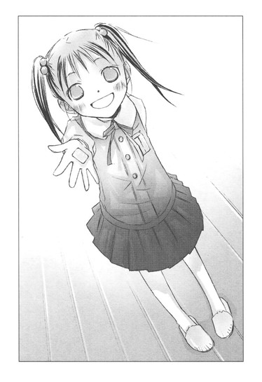
舞花は無邪気に笑っている。
あ～、女の子って小さくても、なにをしでかすかわからない。やっぱり、ハンバートに同情してしまう。
クラスのみんなの誤解を、どうやって解こう......。
いたずらなロリータにわからないように、ぼくはこっそり溜息をついたのだった。
〝文学少女〟とキスを待てない詩人
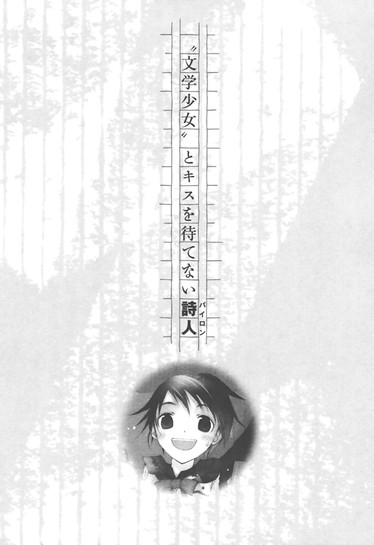
最近、オレには彼女ができた。
十二月になり、二学期も残り少なくなった真冬の放課後。廊下の隅でそわそわしていると、後ろからやわらかなものが体当たりしてくる。
「か～えろっ、亮太」
これが彼女。
パステルオレンジのマフラーを首に巻き、口を大きく開けて、気取りなく笑う。
庶民的で健康的なところが可愛い。くりっとした目は滅多に曇ることはなく、たいてい楽しそうに輝いている。
「おうっ、行くか、森」
「うん」
本人が、下の名前はＮＧだよっ、と頬をふくらませて主張するので、普段は苗字で森と呼んでいる。森も、教室ではオレを「反町くん」と呼ぶ。
オレたちは、クラスメイトだ。
たまにこうして二人で待ち合わせて帰っていることを、誰も知らない。
別につきあいがバレて困ることはないのだが、みんながいる教室で、お互いにだけわかるよう、こっそり目配せしてみたり、指でちょこっとサインを送ってみるのが、なんつーかこう、ドキドキして、たまらんかったりする。
二人きりになるなり、甘えるように「亮太」と呼んでくるのも、いい。
森は教室で見るより、数倍色っぽく女らしく見える。やっぱ恋愛にメリハリは大事だな。
今日も幸せを噛みしめ、冬晴れの空の下を、森と並んで歩いてゆく。森が明るい顔でオレを見上げる。
「亮太、体育のバスケ、大活躍だったね」
「おっ、オレがシュートを決めるの、見てたか」
「うんうん、カッコよかったよ～。後半の最初のドリブルも、何人も抜いてすごかった」
「まぁ、中学の時、バスケやってたからな」
「でもすごいよー。亮太が一番目立ってたよっ。最後の三ポイントシュートとか、興奮しちゃった」
「はっはっ、バスケなだけに、バスッとケリをつけたってとこだな」
口がすべって、つい寒いギャグをかましてしまう。
普通の女なら引くところだが、森は楽しそうに笑っている。
「亮太ったら、おかし～」
本気でウケているようで、腹を抱えて大笑いする。
言ったオレが羞恥心で耳まで染まり舌を噛み切りたくなるような、こんな低レベルのギャグで愉快になれる女、きっと森を入れて、この世で三人くらいだ。
森のこの陽気さが、オレは好きだ。
森と話していると楽しいし、話題がつきない。
もちろん、森の魅力はそれだけじゃない。
「くらら」
さりげなく下の名前を呼ぶと、とたんに、
「いやぁっ」
と叫んで、真っ赤になる。
オレの胸をぽかぽかと叩き、
「もうもう、名前はＮＧなんだよ。こんな明るいうちから道の真ん中で、そういうこと言っちゃやだよぉ、亮太のバカバカ」
とムキになって涙目で訴える。
それがえらく可愛くて、つい何度も、
「くらら、紅楽々、クララ」
と、節をつけて呼んでしまう。
「やめて、やめて、やめて」
森紅楽々という名前は、本人には相当トラウマらしく、
「娘に、こんな名前つけるなんて信じられないよ！小学生の頃、さんざんからかわれたんだからっ。弟の名前もヘンなんだよ！」
と、ことあるごとに両親への不満を口にするが、オレにしてみたら、名前を呼ぶだけで、こんなに可愛い反応を見られるなんて、森の父さん母さんに、よくぞ紅楽々と名付けてくれたと感謝したいほどだ。
「亮太のバカぁ、今度、名前呼んだら、絶交なんだからね」
「へいへい」
「あー、目が笑ってる」
森がひとさし指で、オレの目の下をぐにぐにと押す。
ふくれっつらに、またにやけてしまう。
「ピザマンおごるから、許せ」
「わぁ、本当？ ありがとう」
すぐに機嫌を直して、にこにこするところが森らしい。
「あたし、冬に亮太とつきあいはじめて、よかった」
「へ？ ピザマン、おごってもらえるから？」
「違うよっ。だって、ほら、あったかいもん」
腕をくみ、無邪気に体をぴたっと寄せてくる。
くそぉ～、めちゃくちゃ可愛いじゃねーか。
森とつきあう前のオレなら、んなべたべたしてるカップルを見たら、昼間っからいちゃついてんじゃねー、寒ぃなら使い捨てカイロでも腹に貼っとけ、と心の中で毒を吐いたろうが、今はこの世のすべてを許せる気分だ。
彼女がいるって素晴らしい！
ただ、ひとつ不満があるとすれば、つきあってからそろそろ一ヶ月になるのに、まだ〝手を繋ぐ〟より、先へ進めてないってことなんだが......。
「えへっ、男の子の腕って、やっぱり硬いね」
森はオレの腕に頬を寄せて、嬉しそうに笑っている。
今日はイケそうな気がする。
「なぁ、森」
「え？」
森がオレを見上げる。
よしっ、このタイミングだ！
オレは森に顔を近づけた。
が──。
「あっ、そうだ！ 今、新製品で、すき焼きマンがあるんだ」
森がぱっと前に向き直る。
オレの首が、かくんと崩れる。
「あたし、やっぱりすき焼きマンがいいな！ あれ、どうしたの亮太？首、痛いの？」
「いや......ちょっとひねって。体育で頑張りすぎたかな、ははは......」
「もぉ、おじさんみたいだよ。ほら、行こう。どんな味なのかな～、すき焼きマン。楽しみ～」
うきうきする森に、そのままコンビニのほうへ引っ張られていったのだった。
◇ ◇ ◇
はーっ、いつ、キスできんのかなー。
翌日。
教室で溜息をついていたら、写真部の板垣が忍び寄ってきた。
「反町、いいブツがあるんだが、どうだ？」
声をひそめ、机の下で数枚の写真を広げる。
うおっ、水着っ。
何故、冬に水着？ つか、これ夏にプールの授業で隠し撮りしたのか？こんな際どいショット、よく撮れたな。これなんか胸の谷間がばっちりだぜ。こっちの水着の肩の部分が落ちてきたのを体をちょっとひねって恥ずかしそうに直しているのも、なかなか......。
「って、五枚とも琴吹ななせじゃねーか！」
森の写真は一枚もねぇ。オレに売りつけるなら森を持ってこい、森を。
「だっておまえ、琴吹好きだろ」
「違ぇ！」
まだ、そんな風に思われてたのか。
「おっと、隠しても無駄無駄、おまえ、ここんとこ琴吹のほう見ながら目をぱちぱちさせたり、指立てたり、必死に合図送ってんじゃん。全く無視されてんのが笑える──いや、涙を誘うけど」
ぐわぁぁぁぁっ、さすが盗撮マニア、よく見てる、あなどれねぇ。
だが相手が違う！ オレは森とコンタクトしてたんであって、琴吹は森の友達だから、いつも森の近くにいるだけなんだぁっ！
おまえも、そんだけ他人のこと観察してるのに、何故オレに超可愛くサインを返す森の存在に気づかねー。
そら確かに琴吹は美人でツンデレで、クラスの男どもに人気がある。が、森にも、ちょっとくらい気ぃ配れよ！注目してやれよ！森は琴吹の背景じゃねーんだぞ！
納得いかねーオレの肩になれなれしく腕を載せ、板垣がいやらしいしたり顔で言う。
「この写真、夏に限定販売してプレミアがついた幻のシリーズを、おまえのためにわざわざ焼き増したんだぜ。特別に一枚五百円で譲ってやるよ」
「五枚で二千五百円かよっ！ おま、ボリすぎ。それ以前に、オレは琴吹のことはマジなんとも思ってねーから、いらん」
「素直になれよ～、反町」
「おまえこそ、にやけヅラ近づけんな。野郎に頬ずりされても嬉しかねぇ！」
顔をそむけると、板垣は、
「あっそ」
と、わざとらしくつぶやいた。
「オレの熱～い友情を無駄にするわけ？ おまえが買わねーんなら、越野か一ノ瀬んとこに持ってくけど、いいんだな」
越野!?
一ノ瀬!?
いや、それはマズイだろ！ あいつら、どうしようもねぇすけべだぞ。んな写真与えたら、絶対に、使う！使い倒す！
琴吹は森の友達だ。愛想はねーし、話し方もぶっきらぼうだが、中身は案外いいやつだ。いくら写真でも、カノジョの友人が、発情期の猿のオカズにされるのを黙って見過ごすわけには──。
「おおい、越野、一ノ瀬！」
「ま、待てっ」
オレは板垣の肩をつかんだ。
振り返ったヤツは、満面の笑みを浮かべていた。
「毎度あり～」
......買ってしまった。
琴吹ななせの限定スク水写真、五枚セット。
どうするよ、これ。
ああ、けど、やっぱスタイルいいな、琴吹。
胸がでかくて、ウエスト細くて、足が長い。太もものラインもなかなか......って、なにじっくり見てんだっ！
オレの彼女は、森だろ！ そうだ、森のスク水も捨てたもんじゃないぞ！二の腕や太ももの辺りに適度に脂肪がのっているのが、やわらかそうで健康的だ。肌がすべすべつやつやしていて、よく水をはじいていた。胸だって結構ある。プールの授業で、ちらちら見てたから知ってんだ。
ったく、板垣もクラスの男どもも、森の魅力がわかってねーぜ。
夏には森と海へ行けるんだー。楽しみだなー。
森の水着、どんなかなー。きっとそのころにはキスもいっぱいしてんな。
物理の教師の声をＢＧＭにしながら、オレは真っ白な砂浜で、水着の森と追い駆けっこをする妄想にふけるのだった。
◇ ◇ ◇
「でね、日曜に絵里たちと服買いに行くんだー。亮太は、どんなのが好き？」
「ビキニ、下がミニスカになってるやつ」
「へ？」
森がシャーペンを握ったまま、きょとんとする。
やべっ、放課後、オレん家で宿題してたんだっけ。つい妄想の続きが、脳内を駆けめぐって。
「えーとその、今の──水着な」
焦って言うと、くすくす笑った。
「やだ、水着だなんて、まだ十二月なのに気が早いよ」
「そ、そうだな、あはは」
「夏になったら、ちゃーんと見せてあげるよ」
「ワンピースはオレ的にＮＧだからな」
「えー、ワンピ、可愛いのに」
「いーや、やっぱ水着はビキニだ」
「じゃあ、えっと......ダイエット頑張るね」
「必要ねーよ、紅楽々は今くらいがちょうどいい」
「ほ、本当？ ってゆーか、今、名前呼んだーっ！」
たちまち頬を染め、じたじたする。
「バカバカ、名前、呼んじゃダメぇ」
「彼氏の特権だ」
「でも、恥ずかしい」
「くららも二人きりのときは、オレのこと亮太って呼ぶじゃん」
「だって、亮太の名前、普通にカッコいいもん。あたし、亮太の名前、好きだもん」
「オレも、くららの名前、可愛くて好きだ」
「や、やだ、亮太ったら」
くららが、ますます赤くなる。
おおっ、なんかいい雰囲気だ。
これまで何度もハズしてきたが、今日こそイケる！
オレはさりげなく身を乗り出し、森のほうへ顔を近づけた。
森は気づかず、もじもじしている。
唇も、頬と同じように健康的で、ふっくらだ。
なんか、シャンプーのいい香りがする。
よしよし、いいぞぉ。
あと、少し。
あと、三センチ。
あと──。
「もぉもぉっ！ 名前はＮＧなんだからぁ」
突然森が、いやいやと首を振り、目測がズレてテーブルの上でつんのめってしまった。
ガタン！ ゴトン！ と盛大な音がし、肘をテーブルに打ち付ける。
「大丈夫？ 亮太？」
「っ──手がすべった」
「名前を呼んだから、バチが当たったんだよ」
ぷん、とふくれる。
ええい、負けるか！ 突き出した唇に、めげずに唇を重ねようとしたとき、
「うわっ、亮太つむじがある」
森がオレの頭を両手で、がしっと押さえた。
「誰だって、つむじぐらいあるわい！」
「えー、でも、ラブリー」
ワンコの喉でもなでるように、森がつむじを指でいじりまわす。
くそぉ。こうなったら、正攻法だ！ 今日はする！絶対、する！
オレは森の手をつかんだ。
「！」
もうムードとか、かまってられねぇ。
「りょ、亮太」
「森」
びっくりしている森を、そのまま引き寄せて──。
「やだぁー、また名前で呼んだぁ！」
横から頭を、平手打ちされた。首が思いきりぶれる。
「だ～～～～っ、くららって呼んでねーだろ！森って言っただろ！」
「言ったぁっ！ 今言ったー！」
「つか、おまえ、ひょっとしてわざとか」
「え、な、なんのこと」
森が目線をそらす。
「オレが、キスしようとすると、わざと避けてただろ！」
「え、き、キスしようとしてたの？」
ぱちぱちと目をしばたたかせるのが、嘘くさい。
「と、ぼ、け、ん、なっ。なんか変だなーと思ってたんだ。今までもそうだったんだな」
「う。亮太、あのね」
「紅楽々、オレとキスしたくねーんだ」
「はぅぅぅ、名前、呼ばないでー」
「くららは、オレのこと本当は好きじゃねーんだ、紅楽々はオレの彼女で、オレはクララの彼氏だと思ってたのに、くららは、違うんだ。なぁ、くらら、森紅楽々？」
「いやいやいやー、そんなに連呼しちゃダメぇ」
くららは耳たぶから指の先まで真っ赤になり、ふるふる震えながらうずくまってしまった。
両手で耳を塞いで、だって、だって......と小さな声でつぶやく。
「......いじめないでよぉ。あたしだって、亮太のこと、ちゃんと彼氏だと思ってるよ。でも、でも......」
くららが、言いよどむ。
オレは身構えた。
まさか、やっぱり芥川くんのほうが好きっとか言い出すんじゃないだろうな。
やべっ、どうしよ。
くららが涙目で、見上げる。
「ファーストキスは、夕暮れの海岸でするんだもん」
「はぁっ？」
惚けるオレに、また首をぶんぶん振りながら訴える。
「小学生の頃から夢だったんだもんっ。最初のキスは、波が揺れる夏の海岸で、地平線におっきな夕日が半分沈んでて、サザンの『真夏の果実』が、静かに流れてて、イルカが泳いでるって──」
海!?
夕日!?
は、まだいい。
サザンの『真夏の果実』も、まだ許す。
けど、
「イルカってなんだ！ イルカって！ 東京近隣のどこの海に、のんきにイルカが泳いでんだっ」
「夢なんだもん～～～～、いいじゃない」
「じゃあ、オレたちは、イルカが出没する海へ行くまで、ずぅぅぅぅっと、キスできねーのか！イルカが泳いでくるまで、浜辺でスタンバってんのか？イルカ待ちか？ええ？」
「そ、それは──あたしもちゃんとわかってるよ。いままで海でクラゲしか見たことないし......。そこは、百歩......ううん、千歩くらい譲るよ......。サザンの代わりにチューブでもケツメイシでも我慢する。けどっ、夏の夕暮れの海は、一歩も譲れないのーっ」
しまった、つきあう時期を誤った。
夏休み前にとっとと告って海へ行っとくんだった。海開きまであと半年も生殺しが続くのは嫌だーっ！
「落ち着け、森」
オレは森の両肩をつかみ、男らしく見つめた。
「オレだって、ファーストキスは真冬の雪に閉ざされたエベレストのてっぺんで、昇る朝日を背景にしてと、園児の頃から心に固く決めていた」
「うそ、それ、絶対うそっ」
「いいや、大マジだ。『セブン・イヤーズ・イン・チベット』と『植村直己物語』を子供映画教室で見て、ド感動して誓ったんだ。だがオレは森のためなら、今ここで夢を捨てる覚悟がある」
「だって、それ、亮太の夢じゃないもんっ」
「ああ、確かにここはヒマラヤでもエベレストでもない。しかし！オレの前に森がいれば、どこでもエベレスト山頂だ！森も目を閉じて、ここは夏の海辺で、夕日が沈む水平線に、イルカがオレたちを祝福するようにぴょんぴょん跳ねていると思うんだ。ほら、耳をすましてみろ、サザンの『真夏の果実』が、聞こえてこないか」
「う......」
森が渋々目を閉じる。
窓の外を、「石焼き芋～！」という声が通り過ぎてゆく。
「やっぱり、海じゃなーい！ サザンと違ーう！」
森が両手で、オレを突き放す。
「あたし、帰るっ」
「待て、森」
森がテーブルの上の教科書だのノートだのをかき集める。
と、そのとき、オレの教科書が、ばさりと床に落ちた。
「！」
森が目を見開く。
オレも、
「げっ」
と叫んだ。
床にばらまかれていたのは、板垣から購入した琴吹の写真だった。
英語の教科書に挟んでおいたの、忘れてた！
森は写真を拾い上げ、真顔で一枚一枚めくっている。
部屋の中が、シーンと静まり返る。
「も、森......それは......」
「......全部、ななせだね」
ぼそっとつぶやく。
「そそそそそそ、それは、板垣に押しつけられて、仕方なく購入しただけで、い、いや、違う！他のやつに頼まれて、代わりに買ったんだ！オレが使うわけじゃ──」
「わかったよ」
「そうか、わかってくれたか」
「亮太は、やっぱりななせのことが好きだったんだね」
「はいー？」
森の目が、みるみるうるんでゆく。
「あたし、ななせの代わりだったんだー」
「こら！ なんでそうなる！」
「亮太のバカーっ！」
写真をオレの顔に投げつけ、森は鞄とコートをつかんで、走って出ていってしまった。
ばかやろー、どうしてオレが〝やっぱり〟琴吹を好きだと思うんだー！
◇ ◇ ◇
翌日。
教室へ行くと、森は女子と、楽しそうにおしゃべりしていた。
いつもと変わらない笑顔と声に、ほっとする。
昨日のことは、気にしてねーみたいだな。
ところが、オレと目があうなり顔をふにゃっとゆがめ、眉を下げて、今にも泣きそうな表情になった。
「な、どうしたの、森ちゃん」
「う......『フランダースの犬』のラストを思い出しちゃって」
「なんで、いきなりフランダース？」
女子が、びっくりしている。
そんなやりとりを聞きながら、胸をぐさぐさ突き刺される。
べ......別に、オレが罪悪感を覚える筋合いはねーはずだ。琴吹のことは森が勝手に誤解しているだけで、オレはなにも──。
「おおい、反町！ 昨日のアレ、使ったかー！」
板垣が大声で言う。
「おま、バカ──」
口を閉じようとしたとたん、森がだーっと涙をこぼした。
「も、森ちゃん！」
「パトラッシュ、可哀想～～～～」
「......よっぽど感動したんだね、森ちゃん」
「わかるよ、動物モノは、卑怯だよ」
オレはこそこそと自分の席へ移動した。
そのあとも、目があったり近づこうとしたりするたびに森が涙ぐむので、こっちも固まってしまって、話ができなかった。
森のやつ、まさか本気で、オレが琴吹の代わりに自分とつきあったと思ってるんじゃ......。
森は早とちりの、おっちょこちょいだ。じゅうぶんありえそうなとこが、怖い。このままだと、
「今までありがとう。でも、反町くんはやっぱり本当に好きな人とつきあったほうがいいと思う」
なーんて、笑顔で言われてしまうかも。
やばいっ、どんどん不安になってきた。森なら、言いかねない。
教室にいると板垣にひやかされたり、森のべそ顔を見てしまったりするので、昼休みに、中庭の芝生にしゃがみ込んで、頭を抱えていたときだ。
「くしゅん」
小さいくしゃみが、聞こえた。
冬の真っただ中に、わざわざ中庭に出てメシを食う酔狂なやつはいないと思ったのに、細長い三つ編みの女生徒が、太い木の根本でなにやらごそごそやっている。
そこには、『あなたの恋を叶えます』と書いてある文芸部の怪しいポストがあって、オレも以前ヤケで、森に想いが伝わらないもどかしさをノートに走り書きして放り込んだことがある。
ポストをのぞいているのは、文芸部の部長の、自称〝文学少女〟だった。
「あら、反町くん」
原稿用紙を折り畳んだものを、ぺたんこの胸に大事そうに押しあて、天野遠子先輩は、のんきそうに微笑んだ。
◇ ◇ ◇
「まぁ、それで森さんに誤解されてしまったのね」
古い木の机に肘をついて、細い体を乗り出しながら、うんうんと相槌を打つ。
ったく、なにやってんだ、オレは。
大して親しくもねー女の先輩に、うじうじ色恋の相談をしてるなんて、みっともねーったらありゃしねー。
しっかしこの部屋、見事に本だらけだな。
古い本が、本棚だけじゃ収納しきれず、床にまでどかどか積み重ねてあって、下手に動くと振動で崩れてきそうだ。
「なるほど、よーくわかったわ、反町くん！」
いきなり、天野先輩が真剣な顔で立ち上がった。
「今のきみに必要なのは、バイロンよ！」
「ば、ばいろん......？」
目をむいて、椅子の上にのけぞったまま、問い返す。
それは、アイロンの親戚か？
「ジョージ・ゴードン・バイロンは、一七八八年一月二十二日生まれの、イギリスの詩人よ。歴史と伝説に彩られた古い貴族の家に生まれた彼は、子供の頃から誇り高く、自意識の強い性格だったと言われているわ。
ケンブリッジ大学に入学してからも、自らの欲するところに忠実で、放蕩三昧で、借金まで作って、授業には滅多に出席しなかったそうよ。
やがて彼は詩人を志し、在学中に処女詩集を出版するの。大学を卒業したあとも、スペイン、地中海、アルバニア、ギリシア、トルコと、心の赴くまま旅を続けるわ。そうして、二年の長い旅を終えてイギリスに帰ってきたバイロンは、長編物語詩『チャイルド・ハロルドの巡礼』の成功により、一躍時代の寵児になるのよ！このときの様子を彼は、『ある朝、目を覚ますと有名になっていた』と、語っているわ」
そいつとオレが、どう関係があるんだと激しく疑問に思いながら、口を出すタイミングをつかめないまま拝聴する。
前にハイネについて蘊蓄を垂れたときと同じように、〝文学少女〟は、流れるような口調で語り続けている。
「ところが、栄光の絶頂にあったバイロンは、恋愛問題のもつれや、結婚生活の破綻から、いっきに評判を落とし、社会から厳しい排斥を受けることになるの。
イギリスを離れ、あらたな巡礼の旅へ出発するのよ。
スイス、イタリアと旅を続けながら、その中で素晴らしい作品を次々に書き上げ、最後はギリシャの独立運動を支援するため援軍を組織し、自ら司令官として現地へ赴くの！そうして、その地で熱病にかかって息絶えるのよ。
まるでバイロンの人生自体が、長い詩のようだわ」
いつの間にか手に一冊の詩集を持っていて、それをめくりながら、うっとりと語り上げる。
「そう！ バイロンの詩は、真っ赤なロブスターなの！背中の殻を豪快に縦に裂いて、ひきしまった純白の身を、口いっぱいに頬張るのよ。
力強いぷりぷりした食感に、ワインやハーブの香りがふんわり漂い、噛みしめると男らしい潮の香りが、ぎゅっと染み出てきて、なんともいえない優雅な心地になるのっ。
ほら、この詩なんか、とっても素敵よ」
ロブスターなんて上品なもん、食ったことねぇ！海老フライの海老と、どう違うんだ？内心突っ込みをいれるオレの前で、天野先輩が詩集をぱらぱらめくって、バイロンの詩を朗読しはじめる。
『君のわれを愛すと、夢みしを、咎むるなかれ
眠りのなかに、君の怒りを伸ぶるなかれ
ただ、まぼろしのなかにのみ、君の愛は生き──
めざむれば、われはただ涙してありぬ』
『ああ、睡魔よ、わが感覚を蔽いつつめよ
わがうえに、柔かき懶さを滴らせよ
ただ、今宵の夢の、去日の夜の夢に似たらば
いかばかり、歓びは天上のごとくあらん』
？ ？ ？
トガムルって、なんだ？
モオフュースって？
モノウサって、うさぎの新種か？
鼻の頭に皺を寄せて首をひねるオレに、天野先輩が目をきらきら輝かせて、顔を寄せてくる。
「ねっ、うっとりしちゃうでしょう」
「......はぁ」
つか、呪文みたいで、よくわかんねー。
「ロブスターの頭のお味噌を、真っ白な身にからめていただくのも、苦みがあって大人の味よねっ！バイロンの詩には、そんな皮肉と悲哀も漂っていて、女の子にはたまらないの」
「いや、蟹味噌とか、あんま好みじゃねーし」
「とにかく！ 女の子はバイロンが大好きなのよ」
「それ、どっかで統計とったのか！」
「〝文学少女〟のわたしが言うのだから、間違いありません」
えへんと胸をそらす天野先輩に、突っ込みを入れる気も失せて茫然としていたら、とろけそうな笑顔で、本を押しつけられた。
「はい、反町くん。しっかり読んで参考にしてちょうだい。バイロンは、ちょっぴり不良で近づきがたそうだけど、頼りになるきみの先輩よ。先輩の忠告によ────く耳を傾けて、頑張ってね」
不良って死語だろ。つか、そんな女を口説きまくって、あちこちで問題起こしてそうな先輩は、いらんっ。
『バイロン詩集』と表紙に書いてある薄い本を押し返そうとしたが、五時間目の予鈴が鳴り、天野先輩はさっさと手を振り、軽やかな足取りで出ていってしまったのだった。
あいかわらず人の話、聞かねぇな......文学少女。
◇ ◇ ◇
「うわ～、やっぱ、わけわかんねー」
その晩、バイロンの詩集をめくりながら、オレは頭を抱えていた。
天野先輩は、バイロンの詩は力強くてぷりぷりとか、男らしい潮の香りとか、味噌が苦くて、皮肉と悲哀がどうとか言ってたけど、オレは自己中で高ビーな男が、ひたりきってうだうだ言ってるようにしか思えん。
つか、嫌味っぽくねーか、こいつ。
『惑いはやぶれ、恋は去りぬ
人の世の、うつろいやすき病ゆえ。
呻くべきときに、われら狂ほしく微笑む』
あー、うぜぇ、バイロン。
本当に、女はバイロンなんかが、好きなのか？
こんな面倒くさそうなやつの、どこがいいんだ。そういや女で問題起こして、イギリスにいられなくなったんだっけ。ダメすぎだろ、バイロン。
途中から適当にページをめくっていたが、巻末の解説のページで、ぴたりと指を止めた。
そこに、バイロンの肖像画がある。
「うっ、こ、こいつは......」
思わず、まじまじと見つめ、声に出して叫ぶ。
「イイ男じゃねぇか！」
短く切った髪、
整った眉、
高い鼻に、涼しげな目、
優雅な唇、
まるでモデルみたいな色男が、顔を斜め横に傾けている。確かにこいつは、エビ天よりロブスターが似合いそうだ。イイ男フェロモンが、ワインのように香り立っている。
そうか、わかったぞ！ 女はバイロンが好きってのは、こーゆーことだったんだな！
そりゃこの顔を見たら、頭がスイーツな女はぼーっとして、「バイロン様～」とか言うだろうよ。
同じ言葉でも、ブ男が口にするのと美男が口にするのとじゃ、重みが違う。
この上品な顔だったら、麻婆豆腐のレシピを淡々と読み上げたって、女どもは、とろとろになるはずだ。
おまけに家は貴族で、ケンブリッジ大学卒業だって？家柄も学歴もあるイケメンかよ、ちっ。
肖像画を見ているうちに、腹が立ってきた。
なにが、バイロンはきみの先輩よ、だっ。
こんなイケメンお貴族様に、庶民のオレの気持ちがわかってたまるか！
気に食わん。非常────に、気に食わん。
バイロン！ 貴様の教えだけは受けん！
庶民は、ロブスターよりエビ天だ！
◇ ◇ ◇
翌日。
オレは、バイロンへの敵対心をみなぎらせたまま登校した。
よっぽどバイロンの肖像画に、マジックで鼻毛だの渦巻きだの、情けない落書きをしてやろうかと思ったが、大人げないと思いとどまった。
だが、バイロンの助けは借りない。
小学生のガキではないのだから、仲直りくらい一人でもできる。昨日は森の涙にびびって逃げ出してしまったが、今日は普通に話しかけるんだ。それで、帰りにどっかに寄ろうと誘うんだ。
森の好きな栗ぜんざいをおごって、あの写真は本当になんでもないと説明すれば、機嫌を直してくれるだろう。
そうさ、簡単なことだ。バイロンなんて、出る幕ねぇ。
教室に辿り着き、森の席の方を見る。
森は、そこにはいなかった。
ん？ いつもこの時間には登校しているはずなのに......。
教室の中を、ぐるりと見渡したオレは、驚きのあまり息を止めた。
森は、意外なやつと一緒にいた。
文芸部の井上だ。
あのおとなしくて、目立たない。
森は井上の席に両手をついて、真剣な眼差しで井上を見つめ、小声でなにか話している。
井上は席に座っており、真っ赤な顔で森を見つめ返している。
な、なんだ！ 森のあの思いつめたような表情は。
井上も、なんで頬なんか染めてるんだ。
ふいに、森が顔をほころばせて、にっこりした。
「！」
あんまり嬉しそうで、しかもちょっぴり恥じらうように頬を染めていたので、オレは完全に硬直してしまった。
森は『ナイショだよ』と言うように、唇にひとさし指をあて、恥ずかしそうににこにこしながら、自分の席へ戻っていった。席に着いてからも、嬉しそうに微笑んでいる。
井上は頬を赤らめたままうつむいている。と思ったら、森のほうをちらっと見て、またカァッと赤くなり、下を向く。
うわああああああああ、一体、なにがあったんだ、おまえら！
今まで、なんの話をしてたんだ！
何故井上は、あんなに恥じらってるんだぁっ！
ハッ！ まさか森のやつ、もうオレと別れたつもりになって、井上に告って、つきあいはじめたなんてことはないよな。
けど、何故、井上？
森は芥川にホレていたはずだ。井上と芥川じゃ、全然タイプが違うぞ。
物静かで優等生なところは、近いといえば近いが。森の好みは、もっと頼りがいありそうな、大人っぽい男だと思っていた。井上は、頼りなくて面倒を見てやりたくなるタイプじゃないか？
あー、でも森はお節介なとこがあるから、井上みたいなへなへなしたやつは、放っておけないのかも。それによっく見ると、井上は女受けしそうな、綺麗な顔をしてるし。
いや、落ち着け。森と井上がつきあっていると決まったわけではない。つか、いくらなんでも展開が早すぎる。
森がオレの部屋から飛び出していったのは、つい二日前だぞ。その間に、井上とどうにかなるなんて、ありえねぇ。
くぅぅぅぅ、けど、だったら、さっきオレが見たものは、なんだったんだ。
一度疑惑を抱くと、底なし沼に落ちるように、ずるずるその考えにハマってゆく。
授業がはじまってからも、頭の中は、嬉しそうな森の笑顔と、頬を染めた井上の顔でいっぱいだった。
おまけに、昨日読んだバイロンの詩が、呪いのメッセージのように、浮かびあがってくる。
『あわれ、恋なればいつの世も
傷み、悶え、疑いにとざされ
いまもこの胸は、絶間なき嘆きに裂けて
真昼も夜半も、ただ黒々とながれゆく』
うわ～～～～～～、なんだ、これは。
適当に流し読みしたはずなのに、なんでこんな細部まで、ばっちり思い出してんだ、オレは！
『ああ、わたしの、さびしい、さびしい、さびしい、枕よ
わたしの恋人はいずこに、恋人はいずこに
このわびしい夢にあらわれるのは、彼の人の船か
遠く、はるか遠く、ただひとつ、浪間にただよう』
やめろ～～～～～～、バイロン。
頭が爆発する～、胃が捻じ切れる～～。
『すべては終った──そのことを夢に見た
いまは、未来は希望に輝くことをやめ
幸福の日々は、消え去ろうとする』
まだ終わってねぇ～～～～、
『女は、美しくて、甘ったるい嘘つき
男などは、すぐに君を信じこんでしまうのだ』
ぐわ～～～～、余計なこと言うなぁ！
『言葉もなく、涙を流して
ふたりが別れたとき』
だからまだ、別れてねぇっつーの！
言い返しても言い返しても、バイロンのやつはオレの頭に入り込んできて、詩を垂れ流す。
何故、そこまでする、バイロン。
おまえはオレに、なにが言いたいんだ。
──バイロンは、ちょっぴり不良で近づきがたそうだけど、頼りになるきみの先輩よ。
──先輩の忠告によ────く耳を傾けて。
あの、のほほんな〝文学少女〟の声が、えらく優しく聞こえたりした。
頼りになる先輩......。
けど、今のこの状況は、忠告というより、いじめや嫌がらせに近いような......。
『君の唇がのこした接吻を、愛する乙女よ
まちがいなく私は、とどめておくだろう
また佳き日がきて、この贈物を
雑りないままで君に返すときまでは』
つか！ オレ、まだくららとキスしてねぇぞ！
唇に、接吻もなんにも残ってねぇ！
それに気づいた瞬間、腹の底から熱いものが、ぐわ────っと込み上げてきて、頭の中で、なにかが弾け飛んだような気がした。
そうだ！ オレまだキスしてねえっっっ！
あーくそっ、わかった、わかったよ、先輩！
あんたのそのウザさを見習って、オレもウザいやつになってやろうじゃねーか。
だから、そこで口にファスナーして、後輩を見守ってろ！
◇ ◇ ◇
「おい、森」
「な、なに、反町くん」
「話がある。放課後、プールで待ってる」
「え、プールって、ちょっと......！」
掃除の時間、そんなやりとりをした、三十分後──。
オレたちは、真冬のプールサイドで向かい合っていた。
「ねぇ、なんでプール？」
制服の上にコートを着て、マフラーを巻いた森が、寒そうに身を縮めている。
「それに、なんで反町くん、コート着てないの」
「それは、覚悟の表明だ」
びゅーっと木枯らしが音をたてて吹き抜ける中、真顔で告げる。
けど正直言うと寒い。風が肌に突き刺さり、油断すると歯がガチガチと鳴りそうになる。やべ、鼻水を垂らす前に、話をすませよう。
つか......今、森のやつ、なにげに〝反町くん〟と呼んだな。く......っ、胸が疼くぜ。
「は......話って、なに？ やっぱり、あたしと別れたい......とか？」
森が心配そうな、上目遣いになる。
くぅ、また胸が。
森は無理しているように、にっこり笑った。
「他に好きな人がいるなら、しょうがないよね、ごめんねー、気づかなくって。もっと早く言ってくれたらよかったのに」
ああ、やっぱりそう来たか。森......おまえってやつは。
オレを見つめる目がだんだんうるんで泣き出しそうになるのに、さらに胸がズキズキする。
オレも泣きたい気分だぜ。
「違う、オレは別れ話じゃなくて、水着の話をしに来たんだ」
「へっ！」
森の目が丸くなる。
「水着......？」
よほど意外だったのだろう。ぽかーんとしている。
「そうだ、最近気づいたが、オレは水着が大っ好きなんだ。グラビア写真集も水着のやつばっかりだ。夏が好きなのも、水着が見られるからだ。体操服よりも、メイドよりも、バニーよりも、水着が一番好きなんだ」
森は激しくうろたえている。
「そ、それで、ななせの水着写真を、コレクションしてたの!?」
「そうじゃない！」
オレは叫んだ。
「確かに水着は大好きだが、誰の水着でもいいわけじゃない。くららの水着でなきゃダメだ」
「やっ、名前──で、でも、グラビア写真集、何十冊も持ってるって」
「三冊しか持ってねぇし、紅楽々とつきあってからは全然開いてねぇ。くららの水着しか、見たくねぇ！」
「ず、ずるいっ、名前、呼ばないでっ」
顔を赤くし膝を震わすくららに、さらに言う。
「プールの授業のときも、琴吹のことなんか、ちらっとも見てなかったし、くららの水着ばっか見てた」
「あたしじゃなく、水着を見てたの？」
「いいや、水着を着たくららを見てた。そんで確信したんだ。オレは、森紅楽々に惚れてるって」
「フルネームは、やめてぇぇぇ。そんなことで、確信しないでぇ」
「水着を見て、自分の気持ちに気づいて、なにが悪い。ここは、オレがくららへの想いを自覚した記念すべき場所なんだっ！そんとき、水着のクララとデートできたらいいなって、思ったんだ！」
紅楽々が絶句する。
ああ──っ、もうこうなったらヤケクソだ。バイロンの詩に比べれば、このくらいへでもねぇ。ウザい男になってやるよ、恥かいてやるよ、先輩。
「こないだも言ったけど、オレはワンピースよかビキニ派だ。下はやっぱりミニスカだ。クララの夢が夕暮れの海で、サザンにイルカでファーストキスなら、オレの夢は水着のくららと、いちゃつくことなんだ！
夏まで待てない！ 春も秋も冬も、紅楽々の水着が見たい！
だから──」
オレは、息をのむくららの目を睨みつけ、右手を差し伸べきっぱり言った。
「オレと、スパリゾートハワイア×ズへ行こうっ！」
東京から電車で約二時間の場所にあるそこには、ドームと椰子の木に囲まれた巨大なプールがあり、年間を通じて水温二十八度に保たれているという。
まさに、常夏！
日本のハワイ！
フラダンスで、アロハ！
そこでなら、一年中、水着の紅楽々を堪能できる。
心の赴くまま海へ旅立ったバイロンのように、オレたちも新しい世界へ船出するのだ。
きっと、首にハイビスカスのレイを下げたフラガールが、あたたかく迎えてくれる。
オレのテンションは最高潮に達しており、頭の中にハワイアンなメロディが流れ出すほどだった。
気がつくと、森が未知の物体を見る目で、オレを見ていた。
あ、あれ......？
ひょっとして、引いてる？
バスッとケリをつけたのさ、というあの史上最低の寒いギャグにも、ころころと笑ってくれた森が、頬を引きつらせ、ドン引きしている──。
とたんに我に返り、耳のあたりがカァァァァッと熱くなった。
うげぇ、恥ずかしぃ！
森の哀れむような、気の毒そうな、気まずそうな視線にいたたまれず、オレは差し伸べた手を引っ込め、背中を向けて駆け出した。
ところが勢いが強すぎて、足がぐぎっと音を立ててよじれ、体が傾き、爪先がプールサイドから宙に浮いた。
「あっ、亮太！」
どぼんとか、ばしゃんとか、そんな音がして、盛大に水しぶきが上がる。
次の瞬間、オレは真冬のプールで絶叫していたのだった。
あぎゃ～～～～～～～～～～！
冷てぇ～～～～～～っっっっ！！！
◇ ◇ ◇
もう、学校行きたくねー。
このまま、アンコウのように布団に潜り込んで一生を終えてぇ。
土曜の午後。
オレは鼻水をずるずるすすり、くしゃみを連発しながら、ベッドで唸っていた。
昨日、あれからどうやってプールから這い上がり、どうやって家に帰り着いたのか、思い出したくもねぇ。
水をぽたぽた滴らせ震えながら逃げようとするオレの腕に、森がしがみついて、
「ダメだよ、そのまま帰ったら、学校でいじめられたと思われて通報されちゃうし、風邪ひくよ。体育のジャージに着替えよう、ねっ」
と、必死に懇願した。
その間、オレはずっと、「すべては終わった」とか「ああ、睡魔よ」とか、バイロンの詩の断片を口走りながら、ガクガクブルブルしていたのだった。
森は、完全に呆れただろう。
こんなアホな男と、つきあってられないと思ったに違いない。
真冬のプールにわざわざ呼び出して、水着、水着と連呼し、あげくにプールにダイビングして風邪を引くなんて、間抜けにもほどがある。弁解しようのない大バカだ。
シーツをかき乱し悶えていたら、チャイムが鳴った。
両親も妹も、出かけている。
放っておいたら、またチャイムが鳴った。
ええい、無視だ。
すると玄関のドアの向こうから、
「すみませーん」
と声がした。
森！
オレは慌てて毛布と布団を跳ね上げ、玄関に突進した。
ドアを開けたとたん、激しく咳き込み、へたり込む。
「わっ、亮太！」
私服のスカートの上に短いコートを羽織って、マフラーを巻いた森が、驚いてオレの肩に手をかける。
「だ、大丈夫？ しっかりして」
「げほっ、ごほっ──は、走ったから、げほっ、息切れしただけだ」
「亮太、ヤカンみたいに体が熱いよ。湯気噴きそうだよー。安静にしてなきゃダメだよ。おうちの人は？」
「っ、みんな出かけた」
「そう、じゃああたしが看病したげるから、お布団へ戻ろう」
森が両手でオレを支えて、にこっと笑った。
「はい、りんごのすりおろしだよ～」
銀のスプーンが、オレの口に優しく差し込まれる。
「これなら、食べられるでしょう？」
「お、おう」
「蜂蜜とレモンを絞ってあるから、栄養もばっちりだよ。ゆっくり食べてね」
「あのさ......」
ベッドに仰向けになって、かいがいしく世話をやかれ、戸惑いながら疑問を口にする。
「おまえ、昨日、思いきり引いてたろ」
「うーん、そうだね」
森が苦笑する。
「オレのこと、バカだって思ったろ」
「うん」
即座に肯定されて、ぐさっとくる。
「水着がどうのってしゃべっているときの亮太は、すごーくバカっぽかった」
ぐさぐさっ。
「ハワイア×ズへ行こうって、マジ顔で言ったときも、悪いものでも食べたのかなって思ったし」
ぐさぐさぐさーっ。
「そのあと、すべって転んでプールに落っこちて、この人ダメダメだぁって」
うわあああああああああああああああ。
全身の熱がいっきに十度くらい上昇し、心臓が破裂しそうになる。いっそ殺して、楽にしてくれ。
「けどね、家に帰ってから、プールでのことを、何度も思い出して」
お、思い出さなくていい。忘れろ......。
「亮太、すごくバカだし、みっともなかったけど、あたしのために、一生懸命恥ずかしいことしてくれたんだなーって思ったら、ジィンとしちゃった」
へ？
森はオレを見おろして、恥ずかしそうに微笑んでいた。
オレの胸も、高鳴る。
「ななせのこと、疑ってゴメンね。あたしも亮太のこと大好きだよっ」
森が明るく言い放つ。
太陽のように、まぶしく笑う。
──女の子はバイロンが大好きなのよ。
バイロンは......。
自意識ばっかり強くて、我が儘で......。
勝手なことして失敗して、みんなから嫌われて、居場所を失って。
本当に、ダメなやつで......。
ダメな先輩で。
けど、そんなダメダメなバイロンを、きっと女たちは放っておけない。
周りに非難されても引かれても、心の赴くままに行動し続けるバイロンを、気がついたら好きになっている。
「で、でも、おまえ......っ、井上と仲良さそうに、こそこそ話してて」
そうだ！ あれはなんだったんだ。
「え？ 井上くん？」
森はきょとんとしたあと、すぐに口元をほころばせた。
「ああ、それなら、井上くんにちょっと確認してただけだよ」
「確認？」
「井上くんって、本当────に、ロリコンでも、マザコンでも、男の人が好きでもないんだよねって」
そら、そんな質問されたら、赤くもなるだろう。
「なんで、おま、そんなこと訊くんだよ」
「ななせが、井上くんのこと好きだからだよ。井上くんが、ロリコンだったりマザコンだったりしたら、困るでしょう」
「げ！ マジ！」
あの琴吹が、井上を好き!?
けど、井上と話してるとき、すっげーツンケンしてなかったか？井上も、琴吹にびびってたし。
「他の人には、言っちゃダメだよ～」
森がオレの口に、ひとさし指をちょこんとのせる。
確かにバレたら、琴吹ファンの男どもは、阿鼻叫喚だろう。
「じゃあおまえ、井上のことはなんとも......」
「あたしが好きなのは、亮太だけだよ」
甘い笑顔に、くらりとする。
「だ......だからね」
森の声が、急にかすれた。
うるんだ瞳をそっとそらし、頬を赤らめる。
「亮太が、あたしのために、恥ずかしいことしてくれたから......あたしも、お返しするね......」
かちゃん......と、スプーンを置き、上着のボタンに指をかける。
そのまま、ぷつんぷつんとボタンをはずしてゆく。
って、なっ、ななななな、なにしてるんだ、森！
「あぁ、やっぱり恥ずかしいよぉっ、亮太、目ぇつぶってて」
オレは即座に目を閉じた。
布と布がこすれる音や、ファスナーを下げる音、布がぱさりと落ちる音がして、唾を何度も飲み込む。
うぉぉぉぉぉ、これからなにが起こるんだぁ。
「......亮太、目......開けていいよ」
「ででででっ、でもっ、おま、服......っ」
「着てるから、大丈夫」
なんだ、そうかと、ちょっぴりがっかりしながら目を開けたオレは、仰天した。
「──！」
確かに、着ている。
ただし、〝水着〟を！
爽やかなハワイアンブルーのビキニで、下はひらひらのミニスカだ！
そんな、オレの理想まんまの格好で、恥ずかしそうに肩をすくめて、両手を膝に置いて、ちょこんと座っている。
「......亮太、水着、見たがってたでしょ」
「......くらら」
「やっ、名前呼んじゃ」
首筋まで真っ赤になって、身をよじらせる。
オレは体を起こし、冷静に指摘した。
「なんで、水着の上にエプロンしてんだ」
しかもフリルの胸当てつき。おかげで、ふっくらした胸もととか、むっちりした太ももとか、よく見えねぇ。
紅楽々がうつむいて、もじもじする。
「だ、だって......だって......男の子の部屋で、水着になるなんて、やっぱり恥ずかしくて......それに、亮太の看病するなら、やっぱりエプロンを持ってったほうがいいかなぁって」
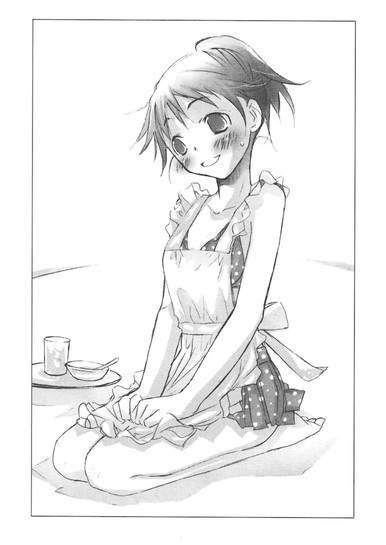
いや、水着にエプロンのほうが、ある意味恥ずかしいと思うが。
「こ、これ以上は、また今度ね」
まぁ、いいや。
半分だけど、くららのビキニが見れたし。こんな恥ずかしそうな顔で、頑張ってくれたんだし。
「オレのために、クララが水着見せてくれて、むちゃくちゃ嬉しい」
「もぉ、また名前、呼んでるよぉ、亮太ぁ」
「今は、二人きり、だろ」
「......うん、そうだね」
「くらら」
「亮太」
いい雰囲気のまま、顔が自然と近づいてゆく。
「......ここ、海じゃなくて、オレの部屋だぞ」
「......うん」
「......サザンの曲、かかってねぇぞ」
「......うん」
「イルカも夕焼けも用意できねぇぞ」
「いいよ......亮太がいれば」
くららが、そっと目を閉じる。
ああー、ついに、この瞬間が。
ありがとう！ バイロン！
ありがとう！ 文学少女！
くららの吐息を、唇のすぐ上に感じたときだ。
「ただいまー、亮太」
「アニキ、ゼリー買ってきたけど、食べる？」
ガチャ。
ドアが開き、買い物に出かけたはずの母親と妹が現れる。
「！」
「！」
凍りつくオレ、凍りつく水着エプロンのくらら。
固まったままの母と妹。
神様、バイロン、文学少女、誰でもいいから、このあとどうしたらいいのか教えてくれ！
心の中で叫びながら、オレはくららの肩に手を置いて目をむいていたのだった。
〝文学少女〟の今日のおやつ ～『飛ぶ教室』～
「井上くん、芥川くんとつきあってるって本当？」
冬のある日。廊下でモップがけをしていたら、クラスメイトの森さんに、真剣な顔で訊かれた。
「ねぇ、どうなの？」
いつの間にか、他の女の子達まで、ぼくをぞろりと囲み、問いをぶつけてくる。
「二人は、両想いなの？」
「井上から、告白したって本当？」
掃除の時間なので、みんな手にモップや雑巾を握りしめ、眉を吊り上げ、頬を引きつらせている。今にも飛びかかってきそうで、怖い。
ぼくは猫に追いつめられたハムスターのように、廊下の壁に背中を押しつけ肩を小さく縮め、びくびくしてしまった。
「なにそれ？ 芥川くんは友達だよ。つきあうとか告白とか、男同士でそんなことあるわけないじゃないか」
「けど文化祭で、芥川くんと劇に出てたでしょう」
「あれは、うちの部長が助っ人を頼んだんだよ」
「閉会式、二人ともサボって来なかったよね。一緒にいたんでしょう？」
「それは、たまたま......」
言葉を濁しながら、あのときのことを思い出し、つい赤面する。
ああ、確かに二人きりの教室で、ぼくから〝告白〟らしきことをしたんだ。
友達になろうって。
あれも、告白と言えば告白だ。
それもとびきり青くさくて恥ずかしい。
ぼくの表情を見て怪しいと感じたのか、森さん達がますます怖い顔で、身を乗り出してくる。
「じゃあ、日曜日に映画に行ったのは？」
「よ、よく知ってるね。うん......映画、行ったけど」
「そのあと、弓道の道場へも行った？」
どうしてそこまで知っているんだと、驚きつつ、
「うん」
とうなずくと、
「やっぱり......！」
「つきあってるって、本当だったんだ」
「いやぁ～～～～」
と、どよめいた。
「ちょ、ちょっと待って！ なんか誤解してるみたいだけど、なにが〝本当〟なのさ？ぼくと芥川くんは、なんでもないからねっ！映画見に行って、道場で、弓道の一日体験しただけだからねっ！てゆーか、ぼくの声、聞こえてる？」
必死に訴えるぼくを無視して、他の子達と悲痛な表情で、ぼそぼそしゃべっていた森さんが、いきなりぼくのほうへ顔を向けた。
「井上くん、お願い」
驚くぼくの肩に手を置き、心配そうに言う。
「ななせには、今の話、絶対にしないでね」
「へ？ 琴吹さん？」
どうしてここで、琴吹さんの名前があがるんだ。
「女の子には、知らずにいたいことってあるんだよ」
？ ？ ？
わからない。どういう意味だ？
森さんは涙ぐんでいる。
「ぐす......あたしも、知りたくなかったよ。だから、ね？井上くん、ななせには、芥川くんとのこと内緒ね。約束だよ」
「えーと、森さん」
みんな、「あたしも知りたくなかった」「あたしも」「芥川くん、女の子の申し込み、片っ端から断っているから怪しいと思ってたけど、事実だなんて......ショック」と口々に言い合い、肩を落として去っていった。
今のは、なんだったんだ？
どうして、ぼくと芥川くんが、つきあっていることになっているんだ？
廊下の隅に突っ立ったまま、ぼーぜんとしていると、琴吹さんが険しい目つきでやってきた。
「！」
とっさに直立不動になると、向こうも緊張したように立ち止まり、頬をじわじわと染めて、ぼくをじっと睨んだ。
な、なに言われるんだろう。
再びハムスターの気持ちになり黙って身構えていると、琴吹さんはためらうように視線をそらした。
それから、またぼくを見て唇を尖らせ、さらにじりじりと歩み寄ってきた。
「べ、別にっ、どうでもいいんだけど......」
いきなりそんな風に切り出す。
「井上と......芥川がその、つ、つきあってるって......」
真っ赤な顔で、つっかえながら言うのを聞いて、足から力が抜けそうになった。ああ、やっぱりその話か。
森さんは、ななせには内緒にしてと言っていたけど、琴吹さんも知ってるんじゃないかーっ。
一応、とぼけてみる。
「なんのこと？」
琴吹さんが、声をつまらせ黙り込む。
どう問いつめたらいいのか迷っている様子で、視線を泳がせる。
ぼくは、琴吹さんがなにを言っているのかわからないふりをして、にっこりしてみた。
琴吹さんが、びっくりして目を見開き、ますます困りきっている表情になる。
どうやらうまく誤魔化せたみたいだと安心しかけたとき、甲高い声がした。
「心葉せんぱ～い！」
ふわふわの髪の女の子が、子犬のように駆けてくる。
後輩の竹田さんだ。
「心葉先輩っ、聞きましたよ～！ 芥川先輩と、はじめてのデートで初体験までいっちゃったんですって？うちのクラスの漫研の子が、文化祭の劇を見たときから二人は怪しいと思ってたって言ってました。今度部誌で、芥川先輩×心葉先輩のやおい本作るって、はりきってましたよ～！あたしも三部予約しました！」
「た、たたたたたた、竹田さんっ！」
ぼくは心臓がひっくり返りそうになった。
お願いだっ、そんなこと、目をきらきらさせながら言わないでくれ。
しかも、廊下で、そんな大声で！
琴吹さんは涙目になり、眉をキッと吊り上げ、
「あたし！ 関係ないからっっっ！ 井上が、誰とつきあってても、全っっっ然っっっ、関係ないから！」
ぶるぶる震えながらわめき、背中を向けて、早足で教室の中へ入っていってしまった。
ぼくは激しい疲労を感じながら、肩を落とした。
「竹田さん、今のは誤解を招く発言だと思うよ」
竹田さんは、可愛らしくにっこりした。
「えへっ、わざとです」
◇ ◇ ◇
あー。前回、ロリコンだと噂されて、さんざんだったのに、今度はホ×で、男とつきあっているだなんて。
芥川くんは、このことを知っているのだろうか。
真面目な人なので、こんなとんでもない話を聞いたら、ぼく以上にショックを受けるに違いない。
教室に戻って芥川くんを捜したけれど、部活へ行ってしまったようで見つからなかった。
ぼくも仕方なく、文芸部へ向かった。
「こんにちは、心葉くん。待っていたのよ」
部室のドアを開けると、遠子先輩がわざわざ椅子から立ち上がり、しとやかに微笑んだ。
あ、あれ？
面食らうぼくのほうへ楚々と歩み寄ってくると、ぼくの手をそっととり、テーブルの前まで連れてゆき、椅子を引く。
「さぁ、座ってちょうだい。あ、クラスのお友達に、キャンディーをもらったの。心葉くんにあげるわ。はい、ミルク抹茶味よ」
「......ありがとうございます」
どうしたのだろう。にこにこしすぎて気味が悪い。
甘苦いキャンディーを口に入れ、尋ねる。
「えーと、今日のお題は、なににしましょう」
「そうねぇ。〝手袋〟〝ステンドグラス〟〝脱毛クリーム〟で、いってみましょう。制限時間はきっかり五十分。はい、すたーと」
細長い三つ編みを可憐に揺らし、愛用の銀色のストップウォッチを、かちりと鳴らす。
脱毛クリームって一体......。
お題の選び方が相変わらずおかしなことに逆に安心し、五十枚綴りの原稿用紙を開いて、ＨＢのシャーペンで書き出す。
遠子先輩は靴を脱いで、窓際のパイプ椅子にお行儀悪く体育座りすると、膝の上に本を載せて読みはじめた。
今日はハードカバーで、児童書のようだ。
白い指先で、ページの端を小さくぴりっと破いて口へ運び、ゆっくりと咀嚼し、喉を震わせて飲み込み、嬉しそうに声を上げる。
「うーん、美味しい！ ケストナーの『飛ぶ教室』は、クリスマスにお父さんが切り分けてくれるローストターキーのようねっ！
表面はこんがりと香ばしく、金色に輝いていて、やわらかなお肉の中に、ハーブで味つけしたセロリやタマネギがたっぷり詰まっているのを、甘酸っぱいクランベリーソースをかけていただくのよっ！骨まで味が染みていて美味しいの！」
文字の欠片を、頬を染め至福の表情で味わいながら、いつものように蘊蓄を垂れる。
「エーリヒ・ケストナーは、一八九九年二月二十三日、ドイツのドレスデンに生まれた作家よ。
大人向けの小説や詩も書いているけれど、ケストナーを世界的に有名にしたのは、やっぱり児童文学ね。ベルリンの街を舞台に、エーミール少年と、彼が知り合った個性豊かな少年達が悪党を追跡する、『エーミールと探偵たち』は、映画にもなってヒットしたわ。
お金持ちの一人娘の点子ちゃんと、病気のお母さんを助けて働くアントンの友情を描いた『点子ちゃんとアントン」も、お互いを知らずに育った双子の姉妹が、離婚した両親を仲直りさせようとする『二人のロッテ』も、登場人物の生き生きとした描写や、ストーリーの中に込められた豊かなメッセージが胸をあたたかくする名作よ。
この『飛ぶ教室』にも、ケストナーの熱いメッセージが詰まっているわ。
そう、肉汁のたっぷり染みこんだ、しゃきしゃきのセロリとタマネギのように！
このお話には、作者のまえがきがふたつもついているの。
第一のまえがき、第二のまえがきで、ケストナーは読者である子供達に向かってこう語っているわ。
このお話は、クリスマスの物語だって。
子供は時には、ずいぶん悲しく不幸になるものだけど、気を落としてはいけません、元気を出して不死身になりなさいって。
そうしたら、勇気とかしこさを、あらわすことができるでしょうって。
この物語は、そんな風に、ささやかな日常の中で、勇気とかしこさを示した男の子達の物語なのよ」
遠子先輩が頬を薔薇色に輝かせ、熱っぽくあらすじを語り出す。
「舞台はドイツのギムナジウムよ。
ギムナジウムというのは九年制の高等学校で、日本の小学校の高学年から高校までの一貫教育制の男子校を想像してもらえれば、わかりやすいかしら。
その寄宿舎に住む高等科の一年生の男の子達が、この物語の主人公よ。
正義感にあふれた、首席でリーダーのマルチン、作家志望で物静かなヨナタン、皮肉屋で難しい本を読んでいるゼバスチアン、食いしん坊で腕っ節の強いマチアス、貴族の出で女の子のように小さくて可愛くて、ちょっぴり引っ込み思案なウリー。
彼らはクリスマスに、『飛ぶ教室』というタイトルの劇を上演しようとするの。
そんな中で、他校の生徒と喧嘩をしたり、悩んだり、励ましたり、助けたり、助けられたり、力を合わせたり、決意したり、夢を語ったりするのよ。
弱虫な男の子が、みんながびっくりするようなことをしでかして、勇気を証明してみせたり、いつもはみんなのまとめ役をしている、誇り高くてしっかりものの男の子が、お母さんとの約束を守って必死に泣くのを我慢したり──とうとう我慢できずに、泣いてしまったり、四歳で親に捨てられて一人ぼっちになった男の子が、夜に一人で窓辺に座って、町の景色を見つめながら、未来の自分達のことを考えて、幸せな風景を思い描きながら、『世界が美しくないなんて、そんなばかなことはない......』とつぶやいたり。
クリスマスにいただく金色の七面鳥が、思い出に残る特別なものであるように、彼らが過ごすこの時間も、かけがえのない特別な時間なの。
きらきらしていて、まっすぐで、──仲間がいて、規律があって、善意があって、美しい未来があって──目標とすべき人や尊敬すべき人がいて──辛いことや苦しいこともあるけれど、勇気を持ってそれを喜びに変えてゆける。
そんな小さな奇跡が、このクリスマスの物語には、あふれているわ！」
千切ったページの欠片を飲み込み、遠子先輩がうっとりする。
「ああ、それに、それにっ。この本に出てくる男の子は、みんなとっても素敵なの。
強くて大きなマチアスと、小さくて気弱なウリーは仲良しで、ウリーが怪我をしたとき、マチアスはお見舞いに行くのよ。ウリーが、マチアスにチョコレートを食べさせようとするシーンが、可愛いのっ。
努力家で誇り高いマルチンと、おだやかなヨナタンもいいコンビよ。二人の友情には、じぃんとしてしまうわ。
ゼバスチアンも、理屈っぽいけどイイコなのっ。
このお話を読むと、男の子がうらやましくなっちゃうわ。わたしも、一年間くらい男の子になって、ギムナジウムで生活してみたいなぁって」
ぼくは、最後のシーンを書きながら言った。
「男装でもして、入学したらどうですか。髪を切ればバレませんよ、遠子先輩なら」
いつもなら、「それって、わたしの胸がないってこと！」と頬をふくらませて怒り出すところなのに、今日は一瞬こめかみを、ぴくりと震わせたあと、菩薩のようににこやかな表情になり、
「男の子同士の友情って、本当に素晴らしいわ。ねぇ、心葉くん」
と、優しい声で言う。
「この時期の友達って、一生の宝物で、人によっては家族よりも恋人よりも大切ですものね。あまりに深く純粋な結びつきだからこそ、友情の垣根を越えてしまうことも、あると思うのよ」
背中が、ぞくぞくとそそけだってきた。
なにを言っているんだ、遠子先輩は。
まさか......。
「周囲の心ない視線や、言葉に負けないで。わたしは、いつでも心葉くんの味方よ」
心ない視線って......。
「芥川くんも、あまりそちらの方面の知識はなさそうだし、よかったら、二人のおつきあいに参考になりそうな本を、〝文学少女〟のわたしがセレクトして紹介するわっ。恥ずかしがらずに、先輩を頼ってちょうだい」
二人のおつきあいって、なんなんだ～～～～～～～！！！！
遠子先輩も、ぼくと芥川くんがつきあっていると思っているのか？
それで、さとりきった表情で、にこにこアドバイスをしているのか？
あんまり頭にきて、胸がむかついて、ぼくは最後の一文を投げやりに書いて、原稿用紙をぴりっと破り、遠子先輩へ差し出した。
「どうぞ」
「ありがとう、いただきまーす」
遠子先輩は、お行儀良く微笑み（といっても、体育座りだけど）受けとった。
二十分後──。
遠子先輩は、しくしく泣いていた。
「うぅ、ひどい......ひどいわっ。冬のある日、空にステンドグラスがぽっかり浮かんで、そこへお母さんが編んだ手袋が吸い込まれていって、男の子が返してくださいって空へ呼びかけるところは、ファンタジックで綺麗だったのに。
冬におこたでいただくライムのシャーベットみたいだったのに。どうしてっ、どうして、引き替えに、脱毛クリームを要求されるのぉぉぉぉっ！
しかも、お金持ってなくて、お店で万引きしてつかまっちゃうなんて、あんまりよぉぉぉぉぉっ。いきなりリアルな展開にしないで～～～～。ライムのシャーベットが、冷凍したウニになっちゃった～～～～～。硬ーい、生臭ーい。とげとげまで、入ってるぅぅぅぅ」
遠子先輩は椅子の背に隠れるようにして、おずおずとぼくを見る。
「はぅ......心葉くん、なんか怒ってる......」
「別に......怒ってません。怒る理由、ないですから」
「やっぱり怒ってる～～～～。芥川くんと、うまくいってないの？」
もうひとつ冷凍ウニを、ご馳走してあげたい気分になった。
◇ ◇ ◇
とにかく芥川くんに相談して、みんなの誤解を解かなきゃ！
翌朝、ぼくはまっすぐ芥川くんの席へ向かった。
「おはよう、井上」
「おはよう、芥川くん。ちょっといいかな」
怪訝そうな顔をする芥川くんに、極力ショックを与えないように、噂のことを話す。
「──ぼく達、つきあっていることになっているんだけど」
「それならオレも、この前、森達に訊かれた」
「ええっ」
目をむくぼくに、芥川くんがいつもと変わらない落ち着いた様子で言う。
「つきあっていると、答えておいた」
「どうして！」
「友達として、つきあっているだろう？ 違うのか？」
「そ、そうだけど──でも──」
「どういうつきあいなのかとも訊かれたから、真面目なつきあいだと返事をした」
「えっとその......ほ、他には!?」
芥川くんが、しばし考える。
「どこまでいったのかとも、訊いていたかな？」
「なんて答えたの？」
冷や汗を浮かべるぼくに、迷いも邪念もない涼しげな瞳を向け、芥川くんは言ったのだった。
「日曜日に映画へ行って、そのあと井上が『してみたい』と言うので、体験コーナーのある弓道の道場へ行って、気持ちよく汗を流したとか。
井上は初めてで、的も狭くてなかなか当たらなかったが、最後のほうは力が抜けて、うまいぐあいに当てて喜んでいたとか......そんなことを」
頭の中で、〝してみたい〟とか〝気持ちよく汗を流す〟とか〝狭くてなかなか当たらない〟とか......そんな言葉がぐるぐる回り、伝言ゲームのように、それが変化してゆき──森さん達の悲痛な表情が頭に浮かび、竹田さんのアニメっぽい明るい声が耳の奥で響き渡った。
──初めてのデートで初体験までいっちゃったんですって？
うわあああああああああ、そういうことだったのか！
芥川くんに悪気はないのは、よ────くわかる。
けど、やっぱりその発言は、誤解を招きかねない！
「オレは最低限の事実しか口にしてないはずなんだが。何故、そんな風に噂されているのだろう」
最低限のことしか言わなさすぎだよ......芥川くん。
「まぁ、気にするな。オレは嘘はひとつもついていない。やましいことはしていないのだから堂々としていれば、そのうち自然と噂もおさまるだろう」
ケストナーの小説に出てくるドイツの少年のように、清く正しい眼差しで、背筋をまっすぐに伸ばし、曇りのない口調で断言する。
そんな彼に、友人として忠告すべきかどうか──ぼくは肩を深く落とし、しばし逡巡したのだった。
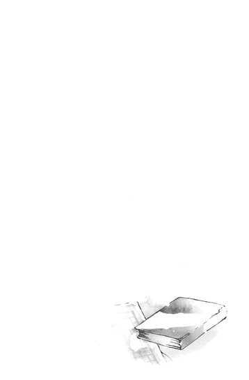
ななせの恋日記
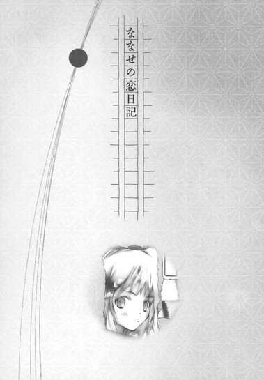
其ノ一 たったひとつの願いごと
今日から二年生。
クラス分けを見たら、井上の名前が同じクラスにあったので、頭に血がのぼって膝ががくがくして倒れそうになってしまった。
本当に!? 本当に、井上と同じクラス？
夢じゃないよね？ 同姓同名の別人とか、そんなんじゃないよね？今さら間違いなんて、言わないよね？
神様ありがとう！
廊下に張り出された白い紙に印刷された井上心葉という名前を、十分以上もまじまじ眺めていて、今年もまたクラスメイトになった絵里に、
「どうしたの、ななせ？ 顔がこわばってるよ。そんなに怖い目で睨みつけるほど嫌いなヤツが、同じクラスにいた？」
と訊かれてしまったほどだ。
あーもうっ、どうしてあたしって、緊張したり考えごとをしたりすると、目つきが悪くなるんだろう。唇も嫌味っぽく尖っていて、確かにガンを飛ばしているようにしか見えないよ。
あんまり恥ずかしかったので、
「べ、別にっ。なんでもないよ」
と硬い声で言い、トイレにこそこそ逃げ込んだ。
けれど興奮がおさまらず、そこで、別の高校にいる親友の夕歌に、即行でメールをしてしまった。
『夕歌！ 大ニュース (@^-^@)
井上と同じクラスになったの！
嬉しいよ！ 嬉しいよ！ 嬉しいよ～～～～!!／(^o^)＼』
夕歌からも、すぐに返事が来た。
『やったね！ ななせ (^-^)v
教室で井上くんに会ったら笑顔だよ！
あっ、始業式はじまる。終わったらまたメールするね！』
とたんに、頭がズシンと重くなった。
笑顔。
それが大切なことは、よぉぉぉくわかっている。
けど、あたしは井上の前で、うまく笑えたためしがない。
向こうは、あたしがどんな顔をしてたかなんて気にもとめてないだろうし、そもそもあたしの存在自体、気づいてないだろうけど......。
これまでのことを思い返すと、どんどん暗い気持ちになってゆく。
井上にはじめて会ったのは、中学二年生の冬。
井上は、あたしが困っていたとき助けてくれたのに、あたしは井上の笑顔があんまりまぶしくて、まっすぐで、見惚れてしまって、ありがとうのひと言も言うことができなかった。
そのあとも、井上に会いに毎日図書館へ通ったけれど、一度も声をかけられなかった。
井上の隣には、いつも同じ女の子がいて、井上のあの笑顔も、とろけるような眼差しも、はずむような言葉も、その子にだけ向けられていたから......。
あたしはそれを、ただ見ているだけだった。
そのうち井上は、図書館に来なくなってしまって、もう一生会えないんじゃないかって絶望でいっぱいだった。
だから高校生になって、同じ校舎で井上を見かけたときは、夢を見ているのかと思った。
嬉しくて、胸がいっぱいになって、まぶたがどんどん熱くなって、泣いてしまいそうで、
ああ、また会えた。
何度も何度も、心の中でその言葉を繰り返していた。
けれど、井上は中学生のときと変わってしまったみたいだった。
図書館であの子といたときは、本当に幸せそうににこにこしていたのに、高校生になった井上は、どこか憂鬱そうで、寂しそうに見える。
クラスの人達と話しているときも、なごやかにとけ込んでいるように見えるけど、ずっと見ていると、あまり楽しそうじゃなくて、適当に相槌を打って、愛想笑いをしているように感じて......その合間に、ときどきふっと疲れたような表情を浮かべる。
そんな顔を見てしまうたびに、心臓をぎゅっとつかまれ、握り潰されているみたいな気がした。
井上は、どうして変わってしまったんだろう......。
あの子のせいなのかな......。井上が哀しそうに見えるのも、苦しそうに見えるのも、あの子に関係があるのかな......。
あの子が、あんな風に有名になってしまったから......。
そんなもやもやした思いが、胸の中で渦巻いていたせいか、せっかく再会した井上に、あたしはまともに話しかけることができなかった。
中学のときと、全然変わらない！
情けない！
毎晩、『今日もダメだったよ～、廊下の角からガン飛ばしちゃったよ～』『擦れ違いざまに、睨んじゃったよ～』と、夕歌にメールを送っては、自分のふがいなさにベッドで枕を抱えて、じたじたしていた。
図書委員になったのも、井上が図書室に来てくれるかもしれないと期待したからだ。
それは叶えられて、あたしがカウンターにいるとき、井上は何度かやってきたけれど、あたしときたら井上の姿を見ただけで頭が沸騰し、なるべく井上と目をあわせないようにし、別の仕事をするふりをして、カウンターからそそくさと離れてしまう有様だった。
途中から、これじゃいけないと気持ちをあらため、ムキになって井上の顔を凝視するようにしたけれど、これは睨んでいるようにしか見えなかったのだろう。
井上は困惑の表情で、
「あ、あの、返却期間過ぎてたかな？」
と、尋ねてきた。
「......別に」
と答えて、慌てて背を向けたけど、後悔でいっぱいになって、自害したくなった。
それに、井上があたしのことを全然覚えていないみたいなのも、あたしのなけなしの勇気を挫くのに、じゅうぶんだった。
仕方ないよね。
あたしには特別なことだったけど、きっと井上にとっては、どうってことのない出来事だったんだから。
そう、仕方ない。
だいたい、あんな恥ずかしいこと、覚えているかなんて、今さら訊けないよー。
あたしが弱音を吐くたびに夕歌は、
「もぉー、好きな人と同じ学校で再会だなんて、運命みたいなものなんだから、あきらめちゃダメだよ。きっと、ななせが中学のときより、すごく美人になってたから、井上くんは気づかなかったんだよ。
井上くんのために、頑張って眉の描き方も覚えたんでしょう？ななせは可愛いしスタイルもいいんだから、自信を持って！」
と、励ましてくれた。
自信なんて持てないけど......でも、そう、せめて、井上にあたしの名前くらいは知ってほしい......。
そんな希望は捨てられずにいたけれど、井上はやっぱりあたしのことなんて、視界に入ってないみたいだった。
相変わらず嘘っぽい笑顔を顔にはりつけて、誰とでもそこそこうまくやっている代わりに、特別に親しい友達はいないみたいだったけれど、たった一人だけ、例外がいた。
その人と一緒にいるときは、井上は普段より子供っぽく見えた。
中学のとき、あの女の子といたときみたいに笑顔を全開にしていたわけでは決してない。
それどころか、その人の前ではしょっちゅう怒ったり、文句を言ったり、呆れたりしていたけど......それは、井上の本心から出た言葉や表情で、そこに嘘はひとつもないように見えた。
井上は、その人とだけは、本音で接しているんじゃないかって。
その人は、井上の部活の先輩で、文芸部の部長で、図書室の一番の常連さんで、細くて長い三つ編みを腰までたらした、綺麗な女の先輩だった。
天野遠子。
それが先輩の名前だった。
ダイエットの必要がまったくないほどほっそりした綺麗な体つきをしていて、あたしみたいにヤンキーな感じじゃなくて、清楚でふんわりしたイメージで、見た目だけじゃなく、性格も気さくで優しくて、小川がさらさら流れるみたいな心地よく澄んだ声で、楽しそうに語る。
あたしが図書委員の仕事で、おたおたしていたときも、
「その本は、こっちの棚よ」
と教えてくれて、本の整理を手伝ってくれた。
驚くほどたくさん本を読んでいて、知識が豊富で、なのにそれを鼻にかけて人を見下したりなんか全然しない。
女のあたしから見ても憧れてしまうような素敵な人だ。
天野先輩といるときだけ、井上は肩の力を抜いてリラックスしているように見えた。
それは井上のためには、良いことなのだと思う......。
笑うことを忘れてしまった井上が、安らげる場所を見つけたってことなのだから......。
けど、その相手が、あたしじゃないってことが、胸がひりひりするほど悔しくて、哀しかった。
井上は、あたしの名前すら知らない。
好きになればなるほど、臆病になってゆくみたいで、あたしはますます井上に声をかけられなくなってしまった。
ただ遠くから井上の姿を眺めて、じりじりしながら、なんの進展もないまま春が過ぎ、夏が過ぎ、秋が終わり、冬も去っていった。
二月十四日に一念発起して用意したチョコレートも、結局自分の部屋で食べた。
夕歌は彼氏とデート中だったのに、心配して電話をかけてきてくれた。
あたしは「やだ、全然平気だよ」と言いながら、やっぱり喉が震えて、ぽろぽろ泣いてしまった。
「ななせ。そのチョコ、一人で全部食べちゃダメだよ。ちゃんとあたしの分も、残しておいてね」
夕歌は携帯越しに、優しくそう言ってくれた。
「井上くんと、同じクラスになれたらいいね。そしたら今度こそ、覚悟を決めて告白しなきゃだよ」
春休みに、そう励ましてくれたのも夕歌だった。
「告白なんて、む、無理だよ～。それに、うちの学校は人数が多いから、同じクラスになれる確率も、低いし......」
「でも、ゼロじゃないでしょ？ よし、今日から、寝る前にななせと井上くんがクラスメイトになれるようにお祈りしよっと。ななせも同じ時間に、お祈りするんだよ。そしたら効果倍増でしょう？」
そして、それは実現した。
一年間、井上と一緒のクラスで過ごせる！
井上に、あたしの名前を知ってもらえる！
それにそれに、クラスメイトだから、おはようとか、さよならとか言っても、不自然じゃない。
も、もしかしたら、この先席替えで隣の席にだってなれるかも......。それで、ノートの貸し借りをしたり、体育祭で応援したり、文化祭の準備で遅くなって、一緒に帰ったり......。
これまで不可能とあきらめていた妄想が堰を切ったようにあふれ出し、頭の中がぐるぐる回ってしまった。
新しい教室に入り、席に着いてからも、あたしは先生の話なんか、ろくすっぽ耳に入らなかった。
席はとりあえず出席番号順で、井上は廊下側の前から二番目に座っている。
あたしはその隣の列の、一番後ろの席だ。
緊張して、井上のほうをまともに見れない。
今からこんなんで、一年間同じ教室で過ごせるんだろうか。
ううん、弱気になっちゃダメだ。
これは神様があたしにくれたチャンスなんだから。
今度こそ、井上と話ができるくらい親しくなるんだ。
井上に、あたしの名前を呼んでもらうんだ。
はじめは苗字で......。ああ、そして──そして、いつかは──......。
「......さん、琴吹さん」
「あ、はい！」
あたしは、慌てて立ち上がった。
ぼーっとしているうちに、自己紹介の順番が回ってきたらしい。
やだ、失敗しちゃった。恥ずかしい。
あたしは唇をぎゅっと噛み、目の端に力を入れ、動じてないフリをしようとした。そうすると、ぶすっとしているように見えるだろうけど、仕方がない。
井上がこっちを見ていると思うだけで、心臓がひっくり返りそうで、頬がほてってくるのに、にこにこ愛嬌を振りまくなんてできっこない。
けど、これは大切な、待ちに待った瞬間だ。
同じ部屋に、井上がいる。
あたしの言葉を、待っている。
あたしは背筋に力を入れ、三十四人のクラスメイトの中の、たった一人に向けて、言った。
あたしの名前を、その人に伝えるために。
そして、いつかその人があたしの名前を呼んでくれることを、ひたすら願いながら。
震える声を隠すため、ぶっきらぼうに。
「琴吹ななせです。これからよろしくお願いします」
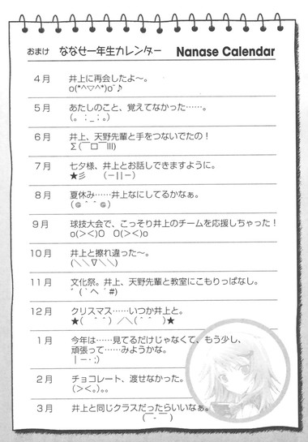
其ノ二 大嫌いの裏側
『こんばんは～、ななせ。夕歌だよ(*^ ^*)
さっきまで彼と映画を見てたんだ。今は、レストランに入ったとこ。
彼がラストシーンに感激して泣き出しちゃってさぁ、また真っ赤な目でトイレに行っちゃった。泣いてるの見られるの、恥ずかしいみたい。
なんか、可愛くてキュンとしちゃったよ(@^ ^@)
えへへ。のろけてまーす。
ななせのほうは、どう？
井上くんと、うまく話せた？
今日は、星占いで、乙女座はラッキーデイだものね。
昨日、電話でシミュレーションしたとおりにいってるといいんだけど。
早くななせと井上くんと、あたしと彼で、Ｗデートしたいよ～o(^o^)o
良い報告、待ってます (^_-)☆』
『ななせだよへ(T_T)
あぅぅぅぅぅぅぅぅぅ、また井上のこと睨んじゃったよ～～～～～！
ゴメンネ、ゴメンネ、遅くまで夕歌に練習つきあってもらったのに。
宿題やってきた？ って、ちゃんと自然に話しかけようとしたんだよ。
けど井上がこっち見た瞬間、顔がカァッと熱くなっちゃって。
つい、ガンつけちゃったんだよ～～～～。
きっとヤンキーだと思われてる～～～～～o(;_;)o
せっかく同じクラスになれたのに。
もう五月なのに、〝おはよう〟もまともに言えないなんて（> <｡)｡｡
このまま一年過ぎちゃったらどうしよう』
◇ ◇ ◇
「ねぇ、クラスに、いいと思う男子っている？」
森ちゃんが突然そんなことを言い出したので、あたしは心臓がひっくり返りそうになった。
放課後。
外は急に雨が降ってきて、薄暗い。雨が止むまで少し待とうなんて言いながら、教室に女の子だけで集まって、どうでもいいおしゃべりを続けていたときだ。
「あたしは、断然芥川くんかな。大人っぽくて頼りになりそうだし、顔も頭もよくて、完璧だよね～。一年のとき同じクラスだったときからファンだったんだ。今年も同じクラスで超ラッキー」
言い出しっぺの森ちゃんが、とろけそうな顔で語る。
そんな森ちゃんの横で、絵里が叫んだ。
「げげっ、ダメダメ、芥川くんはあたしが目をつけてたんだから」
「えっ、絵里も芥川狙いなんだ。マジ？」
「うぅぅ、森ちゃんも芥川くんかぁ。ライバルだ」
「ちょっと待ってよ、あたしも芥川くんのこと、いいなって思ってたのに」
「うぇ～～～～～～、ミキぽんも？ ってことは、三人～～～～～～？」
「やったあ、あたしは広崎くんラブだもんね～。ライバルなしだ～」
「あやや？ 鈴乃は広崎なんだ」
「へっへ～、あたしはやんちゃ系に弱いのさ。実は来週の土曜日に、二人でイルカを見に行くことになってま～す」
「え～～～～～～っ！」
「いつの間にぃ！」
みんなが、わいわい騒いでいるのを聞きながら、あたしは呼吸が苦しくなり、手のひらに冷たい汗がにじんできた。
制服のリボンの下で、心臓がドキドキ音を立てている。
どうしよう、
どうしよう、
みんなに、なんて答えたらいい？
あたしが井上を好きなことは、別の学校にいる親友の夕歌しか知らない。
井上に全然相手にされてないのに、あたしがこっそり片想いしてるなんてバレたら、迷惑がかかるんじゃないかな......。
そう、今日だって......。
あたしは、スカートのポケットの中の五百円硬貨を、布地の上からぎゅっと握りしめた。
それは、今朝、井上から取り上げた五百円だった。
──四百六十円。
──へ？
──昨日、落として破っちゃった本の代金。
顔の前に手を差し出して、睨みつけるようにそう言うと、井上は目をきょとんと見開き、それからとても戸惑っていた。
本を破いたのは、ぼくじゃなくて遠子先輩なのに......と小さな声でぶつぶつ文句を言っていた。
──天野先輩に、本代請求できるわけないでしょ。井上、代わりに払って。
なんてめちゃくちゃなこと言ってるんだろうって、あたしは頬が赤らむ思いだった。
不条理にもほどがある。けど、今さら引っ込みがつかない。
それに、その前に、一年生の女の子が井上を訪ねてきたりしたから......。
その子──竹田千愛は、このところ毎日井上に会いに教室へやってきて、きゃらきゃらした高い声で、井上のこと「心葉先輩」なんて呼んで。甘えているみたいに見えたから......。
それで、いつも二人で廊下の隅で、ひそひそ話をしていて......井上が竹田に照れくさそうに手紙を渡したりして、竹田はそれを受け取って、嬉しそうに笑ってたから。
今日も、クラスの男子に、「新入生を早々にゲットするなんて、やるじゃないか」と冷やかされて、井上は「そんなんじゃないよ」と答えながら静かに笑ってた......。
その作り物っぽい、薄っぺらい笑顔を目にした瞬間、無性に腹が立って、説明のできない怒りが込み上げてきて、つい井上にからんでしまったんだ。
普段は、簡単な挨拶もできないのに......。
──あのぉ......琴吹さん。それっておかしいと思わない？
──全然。
口を尖らして、きっぱり答えた。
ううん、おかしい。あたしは絶対、おかしい。
心の中で自分に突っ込みを入れたけれど、実際には、あたしの顔はふてぶてしくこわばったまんまで、声もすごく感じが悪くてぶっきらぼうだったに違いない。
井上はあたしの態度に呆れたのか、財布から五百円硬貨を出して、あたしの手のひらに載せた。
井上の指がふれた五百円......。
深々と頭を下げ、うちの部長がご迷惑をおかけしましたと、かしこまって言う姿や声に、鼻の奥がツンとし、泣きたくなってしまった。
油断したらものすごく弱気な情けない顔をしてしまいそうで、あたしは五百円硬貨を固く握って、唇を噛んだ。
顔をあげた井上は、あたしが微動だにせずつっ立っているので、不思議そうな目になった。
どうして、まだいるんだろう？ もう用はすんだはずなのに......って、そんな顔。
ああ、なにか、なにか言わなきゃ。
──......ねぇ、最近、井上のとこに、よく一年生が訪ねてくるけど、つきあってんの？
違うっ。本当に言いたかったのは、そんなことじゃないのに。
あたしのこと覚えてる？ って訊きたかっただけなのに。井上と普通に話がしたいだけなのに。これじゃ喧嘩を売ってるみたい。
──竹田さんのことかな。別につきあってないよ。
──ふぅん、あの子図書委員でさ、あたしちょっと知ってんだ。なんてゆーか、ドジで天然で、いかにもロリコン受けしそうなキャラよね。本当につきあってないの？
あたし、今きっとすごく怖い顔をしてる。
井上は、にっこり微笑んだ。
──ぼくは遠子先輩に頼まれて、竹田さんの相談に乗ってるだけだよ。
その、いかにも話を早く切り上げたそうな、どうでもよさそうな、嘘くさい笑顔を見たら、また胸が突き刺されて、悔しさで一杯になった。
井上は、あたしと本気で話すつもりはないんだ。
──別に......井上が誰とつきあっても関係ないよ。けどつきあってないなら、廊下ででれでれ逢い引きすんのやめたほうがいいよ。はしゃぎすぎててみっともないから。
これ以上ないくらい冷たい声で言って、五百円を握りしめたまま、自分の席に戻ったのだった。
◇ ◇ ◇
「さて、次はななせの番よ」
にやにやしながら話を振られて、胃がぎゅっと縮まった。
みんな興味津々という顔で、あたしを見ている。
井上にあんなキツいこと言っちゃったのに──今さら井上のこと、好きだなんて言えない。
「......あたしは」
喉がからからに渇いて、声がかすれた。
「好きなやつはいないよ。嫌いなやつならいるけど......」
そう。みんなに気づかれたらダメ。
「へぇ、誰？」
あたしは顔をがちがちにこわばらせ、その名前を口にした。
「井上心葉」
言ったとたん、心臓が押し潰されたみたいに痛くなって、耳たぶが熱くなった。
みんなが目を丸くする。
「えー、なんで？ 井上くんって人当たりいいし、嫌われるタイプじゃないと思うけど」
「そうだよねぇ、人畜無害で空気みたいな感じ？」
「性格が地味だから目立たないけど、よ～～～～～～く見ると、可愛い顔してるしさ」
「そうそう、話し方も優しいし、にこにこしてて感じいいじゃん」
にこにこ？ 感じがいい？
そうかもしれない。おとなしくて優しげな井上を嫌っているやつは、たぶん、うちのクラスにいない。
けど、初めて会ったときに見た井上の笑顔は、もっと明るくて、幸せそうで、あたたかくて、とろけそうで、あんな無理してるみたいな辛そうな笑顔とは違うのに。
そう思ったら、また胸の奥がざわざわと揺れた。
井上は、
本当の井上は、
あたしが、冬の間ずっと見ていた井上は、
あの子と一緒にいた井上は──。
「そこがムカつくの。いっつもわざとらしい薄笑い浮かべててさ。おなかの中でなに考えてんのかわかんなくて、気持ち悪い」
もうヤダ。なんで、こんなにひどいことばかり言っちゃうんだろう。
けど、止まらない。
きっと、これもあたしの本音なんだ。
井上が変わってしまったのが、悔しくて哀しくて、許せなくて──だけどそんなの、あたしの勝手な思い込みにすぎないのに。
あたしが勝手に井上を好きなだけなのに。
そのとき、ガラッと音がして、教室の引き戸が開いた。
喉元で、息が止まる。
最悪。
そこに立っていたのは、井上だった。
黙り込むあたし達を見て、井上は焦っているような顔になった。
「え。あれ？ みんな残ってたんだ？ ごめん、邪魔しちゃったかな」
みんな、こそこそと目をそらす。
あたしは火照って赤くなった顔で、井上を睨んでいた。
心臓が弾け飛びそうなほどドキドキしているのに、一瞬も井上から目を離せない。
まばたきも、息もできない。
井上は「教科書忘れちゃったんだ」と照れくさそうに言いながら、自分の机のほうへ歩いてゆき、古典の教科書を鞄にしまうと、あたし達のほうを見てにっこり笑った。
とっても感じのいい、けれど芝居がかった笑み。
「じゃあね、さよなら」
引き戸が閉じる。
井上の姿が視界から消える。
「うわぁ、びっくりしたー！」
「井上くん、あたし達の話、聞こえてたかな？」
「ええっ、そしたらあんなに堂々と入ってこれないよ～」
「......」
あたしは唇を噛んだまま黙っていた。
そんなあたしを見て森ちゃんが、
「大丈夫だよ、ななせ。井上くん、聞いてないよ」
と、明るく肩を叩いてくれる。
あたしは、ぼそっと言った。
「いいよ、別に。嫌いなやつに聞かれても、平気だもん」
平気になれたらいい。
「井上のこと、嫌いだもん」
本当に、嫌いになれたらいい。
「大っ嫌いだもん」
そうしたら、こんなに胸が裂けそうに、苦しくも哀しくもないのに。
自分を、嫌いにならずにすむのに。
大嫌い。
勇気がなくて、うじうじしてて、情けなくて、思っているのと反対のことしか言えない自分が、一番大っ嫌い。
きっと、ポケットのこの五百円は、ずっと一生使えない。
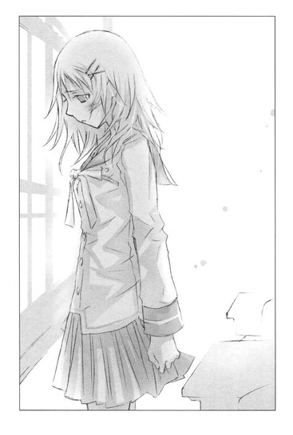
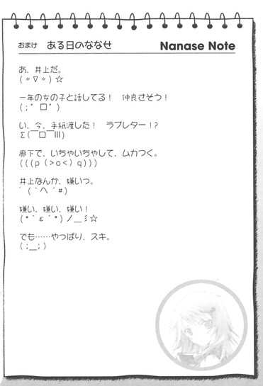
其ノ三 明日にはきっと
『ななせだよ(;_;)
今日のホームルームで、文化祭の出し物が決まったの。
漫画喫茶だって(-_-)
家から漫画持ってきて、棚に並べとくだけなんだよ～。
ドリンクもセルフサービスで、紙コップと紅茶のティーバッグと、
インスタントコーヒーを用意するの。手抜きだよ～｡((> <｡))((｡> <))｡
これじゃ、すぐに準備が終わっちゃいそう。
追伸
バイトと歌のレッスン、忙しそうだね。
携帯の留守電に、応援メッセージをいれといたよ(*^ ^*)
無理しすぎないようにね』
『メッセージ、ありがとう (^_-)☆
ななせや彼と会えないのは寂しいけど、歌のほうは天使がレッスンしてくれて、
ばっちりだよ。
文化祭の出し物は、残念だったね。
せっかく井上くんと親密になるチャンスだったのに。
もう観念して告白しちゃいなよ(^-^)
キャンプファイヤーのあととか、ロマンチックだぞ～。
明日、バイトの前に電話するね"(^_^)ﾉ~~』
◇ ◇ ◇
「ななせちゃん、お願いがあるの。文芸部の劇に出演してくれないかしら」
遠子先輩が、紅茶の湯気みたいにふんわりした笑顔でそう言ったのは、秋のはじめだった。
「えっ、あ、あたしですか!?」
図書室のカウンターで仕事をしていたあたしは、突然の申し出に面食らってしまった。
遠子先輩が、ますますにっこりする。
「そう、文化祭で劇をやろうと思うんだけど、文芸部は少数精鋭でしょう？ちょっぴり出演者が足りないから、ななせちゃんに手伝ってほしいのよ」
「そんなっ、あたし、人前でしゃべったりするの得意じゃないし、絶対、セリフ噛み噛みだし、いくら遠子先輩の頼みでも......」
「心葉くんも、ななせちゃんが出てくれたら喜ぶわ」
断ろうとしていたのに、遠子先輩の口から井上の名前が出たとたん頬がカァッと熱くなって、言葉が止まってしまう。
あたしが文芸部の劇に出演したら井上が喜ぶ？
ううん、そんなことあるわけない。
だって、井上はあたしのこと苦手だもの。そういう状況に、あたしがしてしまったのだから仕方がない。
夏休みに入る少し前、あたしが足を骨折して入院したとき、井上はかすみ草とピンクの薔薇の花束を持って、わざわざお見舞いに来てくれた。
なのにあたしは、つっけんどんな態度をとってしまい、そのあと森ちゃん達が来て、いろいろトラブルがあって、井上は怒って帰ってしまったのだった。
突然あの子の──井上ミウの本を見せられたのだから、井上が混乱するのは当然だと思う。
けど井上はそのあとまた、あたしのお見舞いに来てくれたのだ。
前に来たときは遠子先輩と一緒だったのに、今度は一人でやってきて、恥ずかしそうに、
「この前は、いきなり帰っちゃってゴメン」
と謝ってくれたのに。
あたしは心構えができていなかったものだから、すっかり動転して、
「ヤダ、なんで井上が来るの？ ヤダっ、ヤダヤダっ、もうすぐお母さん達が来るんだから、帰ってよ」
と、病室から追い出してしまった。
あのときは、自分のバカさ加減に、底の底まで落ち込んだ。
井上が怒ってないか心配で、遠子先輩に電話で相談したら、「なら、心葉くんに、暑中見舞いを出してみたら？そこでさらっと謝っちゃえばいいのよ」と勧めてくれたけど、投函する勇気がなかった。
ゴメンナサイと書いた朝顔の絵葉書は、今も自宅の引き出しにしまったままだ。
そんなんで、二学期がはじまってからも井上とは気まずいままで、朝の挨拶もまともにできないほどだった。
それもこれも、全部あたしが悪いんだけど......。
とにかく、あたしの出演を井上が喜ぶなんて、有り得ない。
けど──。
心臓が、とくん......と大きく音を立てる。
文芸部の劇に出れば、今より井上と一緒にいる時間が増える。もしかしたら、井上と普通に話せるようになるかも。
そう、これまでみたいに恥ずかしがってそっぽを向いたり、ぶっきらぼうな受け答えをしたりせずに、自然に笑ったり、声をかけたり。
せ......せめて、友達......くらいには、なれる......かなぁ。
「じゃあななせちゃん、お願いね」
気がつくとあたしは、
「は、はいっ、こちらこそよろしくお願いしますっ」
と頭を下げていた。
文化祭で、井上と思い出を共有できる！
遠子先輩が帰ったあと、お風呂のお湯が肌に染みこむように、じわじわと嬉しさが込み上げてきた。
なんてゲンキンなんだろう。けどやっぱり嬉しい。頬がだらしなくゆるんでしまう。
どんな劇をやるんだろう？
定番でシェイクスピアの『ロミオとジュリエット』なんていいなぁ。
カウンターの奥にある閉架書庫へ本を運びながら、甘ったるい想像に胸をときめかせる。
内容は、親友の夕歌にも、恥ずかしすぎて話せない。
ロミオの格好をした井上と、ジュリエットの衣装を着たあたしが、ラブシーンを演じていたなんて。
「やだっ、バカ、なに考えてんの」
唇が触れる寸前で我に返り、あたしは本を抱きしめ、真っ赤な顔で一人じたばたした。
部長の遠子先輩を差し置いて、部外者のあたしがヒロインなんて、図々しいにもほどがある。劇だって『裸の王様』で町娘Ｂしかやったことないのに。
「バカバカ」
そのとき後ろで人の気配がして、心臓が止まりそうになった。
「琴吹先輩、この本ここでよかったですか」
一緒に当番をしている一年生の男の子だ。
あたしは無愛想に言った。
「そうだよ。閉架のシールが貼ってあるでしょ」
今の見られてないよね。本を抱きしめて、くねくねしながら、独り言言ってたこととか。
ちらりと様子をうかがうと、臣は黙って本を棚に戻している。
もともと存在感が希薄というか、無口な子だけど、ここまで淡々と作業しているということは、きっとなにも見てないし、聞いていないのだろう。
そうだ。そういうことにしておこう。
胸をなでおろすと同時に、冷や汗が吹き出てきて、こそこそとカウンターに戻った。
◇ ◇ ◇
数日後。
思ったとおり、井上はあたしの顔を見て、通り魔にでも出くわしたみたいに目を丸くした。
「なによ？ あたしは、遠子先輩に頼まれたから、出るだけだからねっ。井上は関係ないんだからっ」
ああ......またやっちゃった。
しかも、以前井上にまとわりついていた一年生の竹田千愛まで劇のメンバーに入っていて、井上とべたべた手なんか組んで、アニメっぽい声で、心葉先輩と仲良しですから～なんて言っている。
井上は困っているみたいだけど、竹田の手を振り払おうとしない。
それ以前に、心葉先輩なんて名前で呼ばれてるのが、めいっぱい気にくわない。
あたしはものすごく苛々して、
「いつまで腕組んでんの！」
と、怒鳴ってしまった。
遠子先輩がうまくおさめてくれなかったら、恥ずかしさにいたたまれなくて帰ってしまったかもしれない。
遠子先輩のやわらかなリードで話が進んでいって、劇の内容の説明があって、配役が決まった。
上演タイトルは武者小路実篤の『友情』で、あたしの役は主人公の野島の片想いの相手で、野島の親友の大宮をひそかに愛する杉子。
てゆーか、杉子ってヒロイン!?
無理！
ヒロインは遠子先輩が──。
けど、遠子先輩に、「ななせちゃんならぴったりよ。やってくれるわね」と朗らかな声で言われて、断るに断れなくて、
「は、はい」
とうなずいてしまった。
その遠子先輩は、主役の野島を男装で演じる。
はじめは井上が野島で、あたしと同じく外部出演の芥川が大宮を──という流れだったのだけど、井上が主役なんか嫌だとゴネたのだ。
正直、がっかりだった。
杉子役に決まったとき、井上が野島になったらいいなって、ひそかに期待してたから......。
杉子が恋をするのは大宮のほうだけど、もし井上が大宮をやったら、好きって気持ちが表に出すぎてしまって、とても演技なんかできない。
きっと大宮じゃなくて、井上自身のことを、好きで好きでたまらないっていう目で見てしまう。
その点野島なら、いつもみたいに嫌いなフリをすればいい。
それだけじゃなくて、井上が野島をやれば、演技でも杉子に恋してもらえる。
そんなことを一瞬のうちに頭の中で妄想して、心臓が弾け飛びそうになっていたのだ。
でもまぁ、仕方がない。
井上がやる早川はほんの少ししか出番がないけど、一応野島の恋敵だから、早川だって、杉子のことが好きなんだよね？野島みたいに、好きだ好きだ好きだって、妄想しまくるシーンはないけれど。
それにしても、遠子先輩がストーリーを説明してくれたときは、野島のこと勘違いのストーカーぽくて、勝手に怒ったりうじうじしたりしてダメなやつって思ったけど、今のあたしが、まさにそうじゃないか。
ああ、みっともない。
そんなことを、夜中に電話で夕歌に話したら、「恋って、そういうもんだよ」って笑ってた。
「みっともなく思えたっていいじゃない。できることを片端から全部やって、頑張った人が勝ちだよ。それに、あたしは井上くんに恋してるななせをみっともないなんて思ったこと、一度もないよ。ななせは世界で一番可愛い！」
そんな風に、励ましてくれた。
夕歌は大人だなぁ。夕歌のような考え方ができる人は憧れてしまう。あたしも夕歌みたいになれたらいいなぁ......。
翌日、クラスの友達にいきなり囲まれ、責められた。
「ななせ、文芸部の劇で、芥川くんとラブシーンするんだって！」
「ずるーい！」
「いいないいな、ななせ。芥川くんの恋人役なんて」
一体どこで聞いたのだろう。竹田だろうか？口軽そうだし。
あたしは真っ赤になって反論した。
「恋人役ってわけじゃないし、ラブシーンもないよっ。そ、それに劇だって、遠子先輩の顔を立てて出るだけだよっ。本当にそれだけで、相手役が誰とか関係ないし、他に理由ないから、ヘンな気回さないでっ」
すると森ちゃん達はぽかんとし、それから急に気持ち悪いほど優しい顔になった。
「はーっ、そうだよね。ななせにかぎって、芥川くんとどうとかないよね」
「うん、だってななせはさ......」
「そうそう、ななせなら安全だね」
「頑張って、ななせ。応援する。うまくいくといいね」
と、肩をぽんぽん叩かれた。
どうしてあたしだと安全なのだろうとか、うまくいくといいねって劇のことだよね？とかいろいろ気になったけど、みんなにまにましていて、聞きそびれてしまった。
あ～、でも、本当にせめて、顔をこわばらせずに井上と話ができるようになりたいよ～～～～。
授業中、そんなことを考えて悶々とした。
万一にでも竹田とくっつかれたりしたら、絶対ヤダ。そう、遠子先輩ならともかく──。
と、いきなり胸がズキッとした。
痛みを自覚したら、ますます胸の奥の方がズキズキズキズキしてきて、息まで苦しくなってしまった。
やっぱり、相手が遠子先輩でも、井上が他の女の子とつきあうのは見たくない......。
けど、井上は遠子先輩にだけは、親しげというか遠慮がないというか、ずけずけものを言うし、遠子先輩もにこにこしながら、それを受け入れているように見える。
遠子先輩は綺麗で優しくて、あたしよりウエストが細くて足のサイズも小さい。
てゆーか、ただの先輩後輩にしては絡みすぎだし、前に手とか繋いでたし、あたしが知らないだけで、とっくにつきあってるんじゃ──！
体からさーっと血の気が引いていった。
そんなのダメ！ どうしよう！
◇ ◇ ◇
「あら？ ななせちゃん寝不足？」
翌日の休み時間。廊下で顔をあわせるなり、遠子先輩に訊かれた。
「......ちょっと考え事をしてて......眠れなくて」
「悩みがあるなら、わたしが相談に乗るけど」
「えっと......」
もじもじするあたしの手を、遠子先輩が優しく引いて、人気のないほうへ連れてゆく。
「さぁ、なんでも言って」
「あのっ、遠子先輩、彼氏とかいらっしゃるんですか？」
「え!?」
遠子先輩の目が丸くなる。あたしは焦って、なおも口走った。
「遠子先輩ほどのかたに、彼氏がいないはずないですよね。男が放っておきませんよね」
「そ......そうね、わたしほどの文学少女なら、彼氏くらいいて当然ね。えへん」
「やっぱり......！」心臓がぎゅっと縮まる。「ど、どんな人ですか？」
胸をそらしたまま、遠子先輩が微妙に視線を泳がせる。
「白いマフラーがとっても似合ってて......」
白いマフラー？ 井上に似合いそう。
「爽やかで、明るくて」
井上は、他の男子と違って断然清潔感がある。昔は明るかったし。ますますぴったりだ。
やっぱり、二人は恋人同士なの!?
「そそそそれ、うちの学校の人ですかっ！」
「えっと、か、彼は、北海道にいるの」
「北海道!?」
遠子先輩がますます視線をそらす。頬が少し赤い。
「そうなの。北海道で、熊狩りをしているの。だからなかなか会えなくて......でも、先週、新巻鮭を送ってくれて、すごく美味しかったわ」
最後のほうは、照れくさそうににっこり笑っていた。
熊狩りをしている彼氏って一体......。
けど、熊が国道まで出てきて騒ぎになったとか、山狩りしたとかニュースでたまに聞くし、有り得ない話というわけじゃない。
北海道で猟師をしている彼氏なら、井上と全然別の人だし。遠子先輩と井上はつきあってないってことになる。それなら、遠子先輩が新巻鮭の彼氏と遠距離恋愛しているほうがずっといい。うんっ。そうだ。
よかった～！
遠子先輩には、相思相愛の彼氏がいるんだ！
よかった～！ よかった～～～～！
「ありがとうございました。あたし、文化祭頑張ります」
「あ、ななせちゃん」
遠子先輩に頭を下げ、少し駆け足で教室に戻るあたしの心は、完全に空を飛んでいた。
夕歌、あたし、頑張るよ！
家で焼いたクッキーを、劇の稽古のあとにおずおずと差し出したのは、この翌週だった。
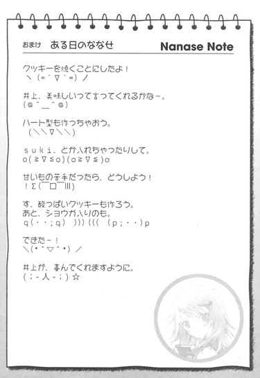
〝文学少女〟と汚れつまつた詩人
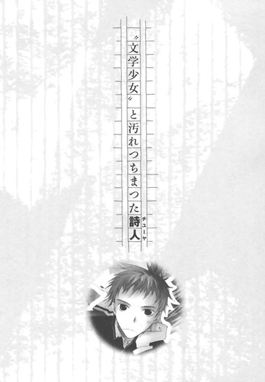
最近、彼女から放置プレイをくらってる。
「それでね、ななせは元気がないの。お昼もメロンパンを半分しか食べなかったんだよ。みんなでドラマの話で盛り上がってるときもぼーっとしてるし、泣いちゃいそうな顔でうつむいてたりするし」
「......」
「二学期の終わり頃も様子がおかしかったんだよね。夜中にいきなり一人で外出して、ななせの家の人から、あたしんちに電話がかかってきたり」
「......」
「お正月明けに病院の階段から転げ落ちて、そのまま入院しちゃうし」
「......」
「やっと怪我が治って登校したら、今度は井上くんが学校に来なくなっちゃって。噂だと、親戚の小学生の女の子の付き添いしてたとか。あのときもななせ、すっっっごい暗い顔してたよねっ」
「......」
「井上くんが復帰してから明るくなったかなってホッとしてたのに、最近また悩んでるみたいで。あーっ、気になるっ！ななせ、なにも言ってくれないんだもん」
「......おい」
「無理やり聞き出すのはよくないと思うのっ。でもななせって、こっちから強引にいかないと、一人で抱え込んじゃうタイプだから心配で」
オレは、ぼそりとつぶやいた。
「くりこ」
それまで脇を通りすぎてゆく車の音も、後ろでチャリチャリ鳴ってる自転車のベルも、彼氏であるオレの声も、完全スルーしていた森が、両手を耳にあて、いやああああっと悲鳴を上げ、歩道の真ん中にしゃがみ込む。
「やだやだ、ひどいよ、亮太」
涙目の森に、オレは思いきり嫌味たらしく続けてやった。
「なにがひどいんだクリコ。おまえの名前だろ、くりこ。この前お袋に、栗子さんは秋生まれかしらと訊かれたぞ、クリコ。なぁ、オレが隣にいること忘れてねーか？栗の木くり子」
森がうずくまったまま首をぷるぴる横に振る。
「くりこはあたしの名前じゃないよー」
「じゃあ、クリリンか」
「違ぁーう！」
目の端に涙をにじませ、森が立ち上がる。オレンジ色のマフラーが風にあおられる。
「た、確かにあのとき、亮太んちの人に、く、くりこですって......挨拶しちゃったけど」
強気な顔でオレを睨んだものの、すぐ目の下を染め、恥ずかしそうにもじもじしはじめる。
昨年の十二月──。
真冬のプールにダイブして風邪を引いた間抜けなオレの見舞いにやってきた森は、ビキニの水着にふりふりの白いエプロンというマニアな姿で、オレの家族（母と妹）に対面したのだ。
お袋も妹も、顔をこわばらせて言葉を失っていた。
そらそうだろう。帰宅したら、病気の息子（兄）の部屋に、水着エプロンの女がいたのだから。
オレと森も青ざめたまま固まった。あんな胃が縮むような経験は、後にも先にもしたことがない。
部屋の中に長々と沈黙が流れたあと、お袋が上擦った声で尋ねたのだった。
「りょ、亮太、このかたは？」
「あ......その、か..................彼女。オレが風邪引いたから、心配して看病に来てくれて、それで」
「お、おおおおお邪魔しています。森く──」
慌てて膝をそろえて（けど水着エプロン）、背筋をのばして（けど水着エプロン）、お袋たちに向かって、へこへこ頭を下げた森が（けど水着エプロン）、挨拶の途中で声をつまらせる。
「く──」
一秒、二秒、三秒、四秒と経過し、首筋から耳たぶまで真っ赤に染め、胸元が盛り上がるほど肩をすぼめて恥じらいながら、小さな声で言ったのだった。
「く......くりこです」
本人も口にした直後に、しまったと思ったのだろう。それ以降一度も顔をあげることがなかった。
「そう、森くりこさんというの。くりこさんはどうして水着なの？」
とお袋に尋ねられても、
「正直に言ってちょうだい。うちの亮太が、なにかした？」
と問われても、
「はぁ......その......はい」
と、うわごとのように意味不明の言葉をつぶやくのみだった。
それを真横で聞いているオレの熱も、あきらかに十度は跳ね上がっていただろう。
森が逃げるように帰宅したあと、布団で朦朧とするオレに、お袋がこわごわと、妹が冷え冷えと言った。
「亮太、高校生らしい普通のおつきあいをなさいね」
「......アニキ、変態」
以降、オレは家の中で腫れ物にさわるような扱いを受けている。お袋から話を聞いたらしいおやじも、微妙な目でオレを見るし、中学生の妹は、オレの服と自分の服を一緒に洗濯するのをあからさまに嫌がるようになった。
「だってだって......あんな格好で、亮太の家族に挨拶することになるなんて思わなくて心の準備が......。あんな極限状態で自分の名前なんか言えないよー。ふざけて偽名使ってるみたいに思われるじゃない。それにもう一ヶ月以上も前の話でしょ！今さら持ち出さないでよぉっ！」
森が真っ赤な顔で訴える。
「ほぉ、オレは現在進行形で、妹にコスプレおたくのド変態呼ばわりされてるわけだが」
「うっ」
責任の一端は感じているのか、森がまた声をつまらせる。
「りょ......亮太も、喜んでたくせに」
「ぐっ」
今度はオレが、言葉につまる。
「そうだよ、もともと亮太が水着水着って騒ぐから」
「だって水着好きなんだよ！ ブルマ集めてるとか、ナースじゃなきゃ萌えねーとか言うより一般的だろ！それに、くららが水着じゃねーとキスさせねーって我が儘言うから」
「あああああああああっ、バカバカバカ、今、くららって言った────っ！それに水着じゃなきゃダメなんじゃなくて、夕暮れの海でキスしたいって言ったんだもん。乙女な願望だもん」
「紅楽々をくららと呼んでなにが悪い。乙女なクララ。つか、くりことか挨拶してんじゃねーよ」
「紅楽々もくりこも、ＮＧだよ～～～～～～っ。亮太、最近意地悪だよ～」
「そ、それはっ、紅楽々のほうだろ」
「やぁっ、また言った。なにそれ、あたし亮太に意地悪なんてしてないよ。亮太が、『くりこ、くりこ』っていじめるんじゃない」
「くりこが、『ななせ、ななせ』って、琴吹の話ばっかするからだ。今日だけで百回は聞いたぞ、『ななせ』って」
やべっ、言い合っているうちに、どんどんヒートアップしてゆく。
森は決して他人の言葉に聞く耳持たない横暴な女ではない。悪い部分は素直に認めるし、ごめんなさいと謝る。
けど今日は頬をふくらませた。そらもう、ぷりぷりとふくらませた。
「亮太わけわかんない。友達の話しちゃいけないの？」
「わ、わかってねーのは、くららのほうだ。自分のこれまでの言動を逐一思い返せ」
「あたし、なにもしてない」
「無視しただろ、オレを」
「なにそれ、子供みたい」
そろそろやめたほうが、と思うが止まらねー。
「ええい、とにかくオレの前で琴吹の話すんな！今度『ななせ』って言ったら、紅楽々って早口で十回言ってやる！クリリンこと森くらら！」
「あうぅぅぅぅ、ひどい、ひどぉぉぉい！ 亮太のバカぁぁぁ！」
完全に怒らせてしまい、森はぽかぽかとオレの胸を叩いたあと、背中を向けて走っていってしまった。
短いポニーテールが、ぴょんぴょん跳ねながら遠ざかるのを苦い気持ちで見送る。
「くそっ、来週バレンタインなの、忘れてんじゃねーだろうな」
そう、もうじき二人がつきあってから初めてのバレンタインデーなのだ。
水着エプロンの森と、いい雰囲気になり、あと少しでキスができそうなところを、お袋たちに踏み込まれてから、はや一ヶ月以上。
健康な男子高校生のオレは、夏が来るのを、おとなしく指をくわえて待っていたわけではない。
夏の日射しは恋人達を開放的にするだろうが、冬だって捨てたもんじゃない。
まずはクリスマスだ！ 粉雪の舞うイブ！ イルミネーションに照らされ、そぉっと唇を重ねるなんて、最高じゃないか！
オレははりきって計画を立てた。受験の時以上の熱心さで、雑誌やネットをチェックし、これぞ恋人達のイブ！みたいなデートコースを選びに選んで。
が、そういう場所には、オレたちより年季の入った恋人達がわんさかといて、あっちを見てもいちゃいちゃ、こっちを見てもべたべた、くすくす、おまえら人前でなにやらかしてんだっ！な光景がぞくぞくと目に飛び込んできて、オレも森もすっかりあてられてしまった。
イルミネーションの下で、ロマンチックに語りあい、そこからキスへなんて余裕はまったくなく、二人で気まずげに下を向き、
「......風、出てきたな、そろそろ帰るか」
「う......うん」
と、言葉少なにそそくさと退場した。
それでも別れ際にどうにかキスを──と森を送っていった帰り道、犬の糞を踏んで、
「うわっ！ なんだこりゃ！」
「あああああ、亮太、パンツにまではねてるよー！犬の糞、はねてる！」
ロマンチックなファーストキスは完全にぶち壊しになった。
それでも、オレはあきらめなかった。
やっぱ日本人ならクリスマスより正月だぜ！元旦キスだぜ！
あらたな気持ちで臨んだ初詣。これも、悲惨だった。
まるで満員電車並みの人混みの中、
「亮太～～～～」
「森～～～～」
オレ達は運命に引き裂かれる悲劇の恋人のごとく別れ別れになり、携帯は繋がらないわ、森だと思って手を繋いだのがまったく別人で、痴漢扱いされて周りから白い目で見られるわ、お年玉の入った財布をすられてすかんぴんだわと、新年早々泣いても泣ききれなかった。
「ね、亮太、元気出そう。きなこ餅おごるから。あ、おみくじも引こう、あたしのおごり」
まるで甲斐性無しのヒモ男のごとく、森に出してもらった金で引いたおみくじは、思いきり『凶』だった。
「あはは、失せもの注意だって。このおみくじ当たってるねー」
森のフォロー（なのか？）も、オレを一層落ち込ませただけだった。てゆーか失せものしたあとに注意しろって言われても、おせーんだよ、神様！
当然、キスするムードになんかならなかった。
もしかして今年って、ずっとこんな？ 凶街道爆走？
いやいや、弱気になってはいかん！ まだチャンスはある。
そうだ！ 恋人たちの祭典といったら、バレンタインデーだ！
クリスマスに敗れ、初詣に敗れても、オレにはまだバレンタインデーが残っているじゃないか！
バレンタインデーこそ、オレと森のファーストキス記念日だ！
弱気になりそうな気持ちを奮い立たせ、バレンタインに向けて、森との仲をこれまで以上に深めようと決めていたのに......。
新学期になってから、森はオレをほったらかして琴吹ななせの世話ばかりやいている。
まぁ、確かに、井上が親戚の介護？で学校をずっと休んでいる間、琴吹はお通夜状態だった。もともと陽気とはほど遠い無愛想でノリの悪いやつなんだが、あの時期はいつものキツい眼差しも影をひそめ、肩を落として悄然としていた。
よく教室の隅で芥川とほそぼそ話し込んでいたので、芥川ファンの女子と琴吹ファンの男子がやきもきしてたっけ。
「あの二人、つきあってたりなんかしてねーよな。文化祭の劇も、芥川の相手役って、もともと琴吹の予定だったんだろ」
そんな話を耳にした。
なかには琴吹が芥川の子を妊娠したんじゃないかなんて、アホらしいこと言い出すやつもいて、森が聞いたら怒り狂って、えらいことになりそうだったので、
「あ、足がすべった」
と、尻を蹴り上げてシメておいた。
オレは森からの情報で、琴吹が惚れているのは井上だと知っていたので、そのときも琴吹は井上のことを心配してんのかな、病院行ってみりゃいいのに、くらいにしか思わなかった。
その井上も無事復帰し、琴吹もじゅうぶん元気になったようにオレには見えるんだが、森にはそうではないらしい。
琴吹が、つまんなそうにぶすくれてんのなんか、前からだろうが。
友達を大事にするのも、つきあいがよいのも森の長所だと思う。他人のことを本気で心配して、全力で力になろうとする森が、オレは大好きだ。
「けど、限度っつーものがあるだろ！ オレと琴吹とどっちが大切なんだ～～～～！」
暮れかけた道路の真ん中で、吠える。
そんな自分のガキっぽさにがっくりし、塀に向かってうなだれた。
「はーっ、こんなんでバレンタインにキスできんのかな、オレ達」
◇ ◇ ◇
翌日。
教室で森と顔をあわせると、頬をふくらませ、いーっとしかめつらをしてきた。そのまま、くるりと背中を向けてしまう。
オレは、頭を殴られたようにガァァァァンとした。
いつもならどれだけむくれても、一晩たてば機嫌を直して、
「おはよう、亮太ぁ」
と、周りの連中に気づかれないようにこっそり寄ってきて、オレの指をきゅっと握って、明るく笑いかけてくるのに。
くりことくららのダブルコンボがきいたのか！それとも、クリリンがまずかったのか？
汗が噴き出るほど焦ったが、男としてここで情けない顔を見せるわけにはいかない。
ふ、ふんっ！ そっちがその気なら、オレも絶対に自分からは折れねーぜ。オレを放っておいたおまえが悪いんだからな。
むすっとした顔で席についたのだった。
それでも気になって、ちらりと森のほうを見る。
すると、陽気な顔で琴吹に話しかけているではないか。
琴吹も、男相手だと愛想のないぶすくれた顔のくせに、森に対しては頬をほんのりほころばせている。
くぅぅぅ、なんかむかつくぜ！ 森から離れろ、琴吹！だいたいおまえのせいで、オレはなぁ。
じっとり睨んでいたら、写真部の板垣に声をかけられた。こいつは以前オレに、琴吹の水着写真を売りつけやがったのだ。
「なんだ、また琴吹を見てんのか、反町。おまえって本当に琴吹のこと大好きだよなー」
「バカやろー！ 誰が琴吹なんか！」
あまりの勘違いに、思わず声を張り上げ注目を浴び、首をすくめる。
板垣に、
「おまえ、ツンデレだな」
とにやにやされ、殴りたくなったが、こぶしを握って耐えた。
またこっそり森の様子をうかがうと目があい、またまた「いーっ」とされる。
あー、もう！ クリリンなんか知らねー！
「森のほうから詫びを入れるまで無視だぜ、無視。チョコレートも受けとってやんねーぞ」
昼休み。校舎の中庭で二月の寒風に吹かれながら、一人強がりを言う。
しかし寒い。
コートを羽織ってくるべきだった。
オレはこんなところで、孤独になにをしてるんだ。
べ、別に......っ！ 森が声をかけやすいように、人気のない場所に一人でいるわけじゃないんだからな！
森が追ってくることを期待してるとか、そんなセコイことはこれっぽっちも。
くそっ、教室出るとき、「今日は天気がいいから、メシは中庭で食うぞー」って叫んだの、森のやつ琴吹としゃべってて聞いてなかったんじゃ。
ぴゅーぴゅー吹きすさぶ北風にがちがちと歯を鳴らしながら、中庭の隅に体育座りして、餡バター入りのコッペパンを囓っていたときだ。
「反町くん？」
澄んだ声がした。
見上げると、制服の上にダッフルコートを羽織り、白いマフラーを巻いた三つ編みの〝文学少女〟が、胸に薄い本を抱えて、ぼーっとオレを見おろしている。
「天野先輩」
「なにをしてるの？ 寒さに耐える訓練？」
「ふつーにメシ食ってるだけっす」
「こんな日に？ 一人で？」
「そ、そういう気分なんだよっ。先輩こそ、なにやってんだよ」
花が咲いてるわけでもねーし、散歩する陽気じゃねーだろう。って、他人のことは言えんが。
天野先輩がほんの少し目をそらし、困ってるような顔で答える。
「......わたしも、お外でごはんを食べたくなって。今日なら寒いから、誰もいないかしらって思ったのよ......」
「メシ、もってないじゃん」
「......あ、そうね」
つぶやいて、小さく笑った。
ん？ なんだ？ 元気がない。
文学少女らしい古風な外見に反して、いつもはた迷惑なほどの明るさを振りまいているのに、今日はどことなく寂しそうだ。儚い眼差しにちょっとドキッとしてしまう。
黙っていると正統派の美人なんだよな、この人。華奢で色白で女らしくて、なんか守ってやんなきゃいけない感じっつーか......。
「......えーと、これ、嫌いじゃなかったら」
マカロニサラダパンをずいっと差し出すと、天野先輩は目をちょっと見張ったあと、嬉しそうに受け取った。
「ありがとう。わたしも、隣で一緒に食べてもいいかしら？」
「お、おう」
天野先輩が、オレの横でちょこんと膝を抱える。
パンの袋を破き、小さな口で少しずつお上品に囓る。
しばらくの間、二人でぽそぽそとパンを食っていた。
目の前を、冷たい風が通り過ぎてゆく。
パンを食べながら、天野先輩が言う。
「反町くん、森さんと喧嘩したでしょ」
「な、なんで！」
「さっき、チョコも受けとらねーぞって言ってたの、聞こえちゃったの」
うわあああっ。
恥ずかしさに頬が、カァッと熱くなる。
「ねぇ、なにがあったの？」
「別に大したことじゃねーよ。ただ森が......」
オレは前を睨みつけたまま、ぶっきらぼうにこれまでの話をした。
天野先輩は、ふむふむとうなずきながら聞いていたが、オレが話し終えると、ふーっと溜息をついた。
「反町くん、きみもよくないわ」
「ええええええっ、なんだよそれ！ どう考えても森が全面的に悪いだろ」
文学少女が、厳かに首を横に振る。
「いいえ、恋人達の諍いは両方に責任があるのよ。ねぇ、反町くん。冷静になって自分の心の奥を深く見つめ直してみて。でないと、中也みたいに恋人に逃げられてしまうわよ」
暗い顔で、不吉なことを言う。
「チューヤってどこのどいつだ？」
びびって尋ねると、天野先輩は食べ終えたパンの袋を丁寧にたたんでこよりのように結び、脇に置いてあった本を膝の上に置いて、表紙をめくった。
「中原中也は、明治四十年四月二十九日、山口県生まれの詩人よ。
お父さんはお医者さんで、中也は裕福な家庭の長男として大切に育てられたわ。中也が八歳のとき弟が病気で亡くなってしまうの。このとき弟のことを歌った詩が、彼のはじめての詩作だと言われているわ。中也の詩は、いつもどこかしら孤独と切なさを抱えているの......。はじまりからそうだったのね」
思い入れたっぷりの哀しそうな声で、チューヤだかチューハイだかのことを語る。
そうして目をそっと閉じ、切なげに身を震わせる。
「あぁ、中也の詩は、まるで山芋をすり下ろして作る、しんじょのよう。すり身のえびの甘さと、山芋のねっとりした柔らかさが絡み合い、混じり合い、片栗粉でとろみをつけた冷たいだし汁が、舌の上に震えるような哀しみを呼び覚ますの。たとえばこの詩......『時こそ今は......』」
寒い中庭に、天野先輩の声がしんしんと響き渡る。
『時こそ今は花は香炉に打薫じ、
そこはかとないけはひです。
しほだる花や水の音や、
家路をいそぐ人々や。
いかに泰子、いまこそは
しづかに一緒に、をりませう。
遠くの空を、飛ぶ鳥も
いたいけな情け、みちてます』
よくわかんねーけど、なんか辛気くせぇなぁチューヤ......と思うオレの横で、すっかり自分の世界に入り込んでる文学少女が、言葉を続ける。こういうとこは、いつもと変わらん。
「静かで哀しい詩だわ......。泰子というのは中也の恋人で、中也は十七歳のときに、当時二十歳だった泰子と同棲をはじめ、十八歳で一緒に上京するのよ。
けれど泰子は、上京から八ヶ月で、中也の知人で、のちに近代批評を確立する文芸評論家となる小林秀雄のもとへ行ってしまい、中也は彼女に振られてしまうの。
そのときの心情を、中也は口惜しい、口惜しいと繰り返しているわ。
そうして、そうした青春の口惜しさや絶望を次々詩にしていったのよ。『盲目の秋』『妹よ』『みちこ』『寒い夜の自画像』『憔悴』『汚れつちまつた悲しみに』──どれもしんじょに添えられたショウガのように、噛みしめるとじんわりと辛く、切ない痛みに満ちているわ。だし汁を吸ったしんじょの頼りなげなやわらかさも、淡々とした深い味わいも、哀しいの......」
天野先輩が、また詩を読み上げる。
『夜、うつくしい魂は涕いて、
──かの女こそ正当なのに──
夜、うつくしい魂は涕いて、
──もう死んだつていいよう......といふのであった』
うおぉぉぉぉっ、さらに暗い。なんかこう、胸にずし────ん、どか────んとくるっつーか。
天野先輩が憂いのにじむ瞳をオレに向け、オレの胸に詩集を押しつける。
「今のは『妹よ』という詩よ。泰子を想って作った詩と言われているわ。実際は泰子のほうが中也より三歳年上なのだけど。続きがあるからぜひ読んでみて。他の詩も......。今の反町くんにはきっと必要よ」
何故っ？ どういう根拠で？
オレが中也みたいに、森に捨てられるとでもいうのか？森が浮気して他の男に走るとでも？
嫌～な気持ちのまま、詩集を受け取る。
「そろそろ昼休みもおしまいね。マカロニサラダパン、ごちそうさま。オトフリート・プロイスラーの『クラバート』みたいに、ちょっと酸味がきいていて謎めいていて、それを素朴なコッペパンが包んでいて、美味しかったわ」
天野先輩がひっそりと立ち上がり、スカートの裾を整える。
「あのさ、天野先輩のほうは、なにがあったんだ」
「え」
「なんか、しょんぼりしてっから」
天野先輩が目を見張る。
あ、余計なこと訊いちまったかな。打ち明け話とかはじめられたら、それはそれで困るんだが......。
けど天野先輩は、すぐにあたたかく微笑んだ。
「身近な子にね......彼女ができたの。すごくいい子で、二人とも初々しいの......。それで、ちょっとあてられちゃったかな......」
優しい声だった。
微笑んだまま、
「じゃあね」
と去っていった。
身近な子って誰だ？
そいつに彼女ができて、しょんぼりなのか？よくわかんね。
まぁ、のんきそうに見えても、年上のお姉さんで、受験生だしな。あっちはあっちで、いろいろ悩みもあるのだろう。
オレも天野先輩に渡された中原中也の詩集を持って、教室に戻った。
◇ ◇ ◇
夜、布団に寝そべって詩集をめくる。
なんだっけ？ 三角関係になって、同棲相手が別の男のとこへ行っちまったとか？ふーん、こいつが中也か？女みたいな顔してんな。きっとうじうじした意気地のない野郎なんだろう。
古いモノクロ写真を眺め、気乗りしないまま読み進める。
すぐに、なんとも言えない暗ぁぁぁぁい気持ちになった。
な、なんだ！ この、肌にまとわりついてくるようなじっとり感は。
やわらかなしんじょに、ずぶずぶ潜り込んでいって、息ができなくなるような、この奇妙な感覚は。
うぉぉぉぉぉっ、言葉が胸にぶち当たった────っ！
そのまま、毒をまき散らしながら、じわじわ食い込んでくるぅぅぅぅ！
特に、『盲目の秋』──こいつが半端じゃねぇ。
『風が立ち、浪が騒ぎ、
無限の前に腕を振る。
その間、小さな紅の花が見えはするが、
それもやがては潰れてしまふ。
風が立ち、浪が騒ぎ、
無限のまへに腕を振る』
はじめのほうは、おいしめっぽいぞ中也、くらいの余裕があるが、
『人には自恃があればよい！
その余はすべてなるまゝだ......
自恃だ、自恃だ、自恃だ、自恃だ、
ただそれだけが人の行ひを罪としない』
おいおい、中也テンパりすぎだぞ、と不安になり、
『私の聖母！
とにかく私は血を吐いた！......
おまへが情けをうけてくれないので、
とにかく私はまゐつてしまつた......』
このあたりで、やべぇ中也、血を吐くとかやべぇっ、と背筋が震え、
『せめて死の時には、
あの女が私の上に胸を披いてくれるでせうか。
その時は白粧をつけてゐてはいや、
その時は白粧をつけてゐてはいや』
ここにいたって、もうもうやめてくれぇぇぇ中也ぁぁぁぁっと身悶えつつ、目が離せねぇ！
『ただ静かにその胸を披いて、
私の眼に輻射してゐて下さい。
何にも考へてくれてはいや、
たとへ私のために考へてくれるのでもいや。
ただはららかにはららかに涙を含み、
あたたかく息づいてゐて下さい。
──もしも涙がながれてきたら、
いきなり私の上にうつ俯して、
それで私を殺してしまつてもいい。
すれば私は心地よく、うねうねの暝土の径を昇りゆく』
うぉぉぉぉぉぉ、中也ぁぁぁぁ！
終わった──。終わったのか？ ぜいぜい。
なんて恐ろしい詩だ、全身が汗でびっしょりだ。
と思ってページをめくっていくと、『汚れつちまった悲しみに......』が、鬱々とはじまってしまい、『サーカス』のメロディが、『ゆあーんゆよーんゆやゆよん』と頭の中で寒々と鳴り響く。
も、もし森に捨てられたら......オレもこんな風になるんだろうか。
暗い部屋で膝を抱え、『ゆあーん、ゆよーん』とか、うつろにつぶやくんだろうか。
まさにその状況に突き落とされたように錯覚し、さーっと血の気が引いた。
だが、すぐハッとする。
ダメだっ！ この暗黒の中也時空に飲み込まれてはいかん！
いかんっ！ いか────ん！
『ゆあーん、ゆよーん』とか言ってたまるかぁぁぁっ！
詩集を閉じ、ハァハァと肩で息をする。
「──っ、手強い相手だったぜ、中原中也。だが、オレはおまえの軍門にはくだらん。そうさ、明日、森に男らしく言ってやる。おまえの彼氏はこのオレだ！琴吹よりオレのことをかまえ！って」
じめじめしたオーラを発する詩集のやつに向かって、オレは宣言したのだった。
◇ ◇ ◇
そして翌朝。
冬晴れの通学路をがつがつ進みながら、「おまえの彼氏はオレだ、オレだ」と練習をしていたときだ。
後ろでオレを呼ぶ声がした。
「亮太ぁ～～～～～～～～！」
振り返ると、きらきらした朝の日射しの中を、紺のハーフコートにオレンジ色のマフラーを巻いた森が、こぼれそうな笑顔で走ってくるのが見えた。
息をはずませ、目を見開き、頬を赤く染めたその愛くるしさに、ドキン！とする。
いやいや甘い顔をしてはいかん。彼氏として、びしっと言って──あぁぁぁっ、だが可愛すぎる。
森がオレに、笑顔のまま飛びつく。
やわらかな体が押しつけられ、甘い香りがただよう。
「も、ももももももも森！」
両手を背中に回して、ぎゅーっと抱きつかれ、いろんなところが沸騰したみたいに熱くなる。
どういう状況だ、これは？ なんでいきなり上機嫌なんだ？
コートの上から、森がオレの胸に幸せそうに頬をすりつけ、言う。
「あのねっ、ななせ、井上くんとつきあってるんだって」
また琴吹の話かと一瞬萎えかけ、ぎょっとする。
「井上と！ マジかよ！」
琴吹が井上に惚れているのは知っている。けど、井上のほうは琴吹のこと苦手っぽかったし、琴吹のあの性格じゃ告白とか無理だろうと思っていたので、二人がつきあうなんてまるきり予想してなかった。
一体どういうきっかけで！
森がしみじみとつぶやく。
「よかったぁ......ななせの気持ちが、やっと井上くんに伝わって......」
オレの胸に頬を押しつけたまま、嬉しそうに微笑む。
その声や表情にジンとする。ああ、森のこういうとこ、やっぱり好きだ。
森はオレの背中に回した両腕に、またきゅっと力を込めた。
「亮太ぁ、今までほうっておいてゴメンね。バレンタインに、いっっっぱいお返しするからね」
世界がいっきに薔薇色になる。
森！ バレンタインデーのこと、ちゃんと覚えててくれたんだな！
「そ、そうか、くららっ」
「もぉ、名前で呼んじゃダメだよぉ」
森が赤い頬でぽかぽか胸を叩くのも、ひたすら甘かった。
ははは、もう中也はオレには不要だぜ。
◇ ◇ ◇
バレンタインデー当日。
オレはこれまで何度か訪れたことのある森の部屋で、今日こそはという期待に胸を轟かせていた。
いよいよだ。いよいよ森とキスをするんだ。
心臓がどくどくと音を立て、またあちこち熱くなる。
ああ、ここまで長かった。けど、ようやく勝利のときは訪れた。いや、まだ油断してはいかん。それに、がっついてムードを壊さないよう注意しなければ。やっぱり女にとって、こういうのって一生もんの思い出だからな。森が感動してぼーっとしてしまうようなとびきりのキスを決めるんだ。
やがてフリルの白いエプロンをかけた森が、トレイにコーヒーの入ったカップを二つ載せて戻ってきた。
「お待たせ、亮太」
「そ、そのエプロン、見舞いに来たときもかけてたやつだな」
うわずった声で言うと、森が頬を赤らめた。
「やだっ、今日は水着じゃないよ」
裾をちょっとだけめくって、私服の白いミニスカートを見せる。上は明るいペパーミントグリーンのセーターだ。
「わ、わかってるよ」
オレの頬もほてる。
森は赤い顔のままコーヒーのカップをテーブルに置くと、オレに背中を向けた。
「ちょっと待っててね」
クローゼットをごそごそあさり、そこから小さな箱をいくつも出して、オレの前に並べる。どの箱も、赤やピンクのリボンが結んである。
「えへへ、ぜ～んぶ、あたしからのバレンタインデーのプレゼントだよ」
へ？ これ全部？ 多すぎね？
「ね、開けてみて、亮太」
にこにこしながら腕を揺さぶられて、端から手に取り、リボンをほどいてゆく。
ひとつめの箱から出てきたのは、空き缶の形をしたチョコレートだった。
「おい、なんで空き缶？」
普通、ハートとかじゃね？
「ちゃーんと意味があるんだよ。ほらほら、次も」
「わかったよ。って──スイカ？」
次はヨット、
次はヤシの木が生えた島、
それから......、
「雑草？」
「違うよぉ、波だよ」
上がぎざぎざしてるから、寿司についてくるあの緑色のやつかと......。そうか、波か......。
「んじゃ、このかまぼこみてぇのは？」
半円型のチョコレートを手に取り、森が甘く微笑む。
「夕日、だよ」
心臓がたちまち跳ね上がった。
波！
そして、夕日！
まさか森のやつ──。いいや、落ち着け、波があってスイカと空き缶が転がって、ヨットが浮かんでたって、海とはかぎらねー。って、いや、海だろ。
森が恥ずかしそうにオレの目をじっと見つめながら、波の向こうに夕日を置く。
最後に登場したのは、カカオ色のイルカだった。
出た！ イルカ！
耳たぶがカァッと熱くなる。
テーブルの上には、日が沈む直前の、海の光景が広がっていた。
森は夕日を浴びているみたいに頬を赤く染めて、オレを見ている。
オレもどぎまぎして冷静になんてなれなかった。胸が、どっきんどっきん、高鳴っている。
──はじめてのキスは、夕暮れの海って決めてたの。
時間が止まったみたいに、体が動かない。
森がはにかむように笑った。
「えへへ、今日はこの部屋は、夕暮れの海だよ」
甘えるような上目遣いで見つめる瞳が、なにを告げているのかを即座に察し、頭が沸騰寸前になる。
そ、そそそそそれって、森もキスを待ってるってことか？
今、この瞬間、キスしてオッケーってことか？
いいのか？ なぁ、いいのか、森？
オレの可愛い可愛い彼女が、誘うように呼びかける。
「亮太ぁ」
うぉぉぉっ、気絶しそ。
くらくらしながら顔を近づけると、まつげを震わせて、目を閉じた。
期待と緊張が最大級に高まる。
イケる！
今日こそ、イケる！
見たか中也！ オレはおまえとは違うんだぜ！
ゆあーんも、ゆよーんも、オレには不要だ！オレは森とキスをする！
恋の勝利者だ～～～～～～～～！
森の唇からはほのかにチョコレートの香りがした。ピンク色のやわらかそうな唇に、オレの唇がようやく──ああ、ようやく重なろうとしたそのとき──。
「姉ちゃん、さつきがしょんべん漏らした」
へ？ さつき？ しょんべん？
ロマンチックな海辺に不釣り合いなその単語に、ぴたりと動きが止まる。
森もぎょっとして目を開ける。
二人でのろのろと視線を横へ向けると、ドアの向こうに中学の制服を着た小僧と、園児服の幼女が立っていた。
森の弟と妹か！
弟のほうは、今まさに姉のきわどい場面を見てしまったというのに、やけに落ち着いているというか表情に乏しく、その弟と手を繋いでいる妹のほうは、ピンクのスカートをぐっしょり濡らして、わんわん泣いている。
「ルーっ！ さつき！」
森がぱっと立ち上がり、弟達のほうへ駆け寄る。
ルーって外人かよ。あだ名は大柴か？まぁ、姉がクララだしな。つかルーが弟？
そのルーが淡々と言う。
「......着替えさせようとしたら、ヤダって暴れて」
「うわーん、だって、ルーちゃん、おにいちゃんだもーん、おとこのこだもーん」
「うんうん、さつき。大丈夫だよ、お姉ちゃんと着替えようね。ゴメン、亮太。ちょっとはずすね」
「......お、おう」
ぎこちなくうなずく。
すると、ぐしぐし泣いてた妹が、テーブルのチョコレートをじっと見た。
「おねえちゃん、さつきもイルカさん、ほしい」
「ええっ、さつきには昨日、くまさんとうさぎさんのチョコレートをあげたでしょ」
「イルカさんのほうが好きだもんっ。イルカさん、イルカさん」
べそをかきながら、ぶんぶん首を横に振り、床を踏みならす。
「なら、あとでさつきの分のイルカさんを作ってあげるから」
「やっ、そのイルカさんがいい！」
「もぉ、ダメだよ、さつき」
森が困ったように、オレの顔をちらりと見る。
オレは目をぎんぎんに血走らせ、訴えた。
嫌だっ！ このイルカはオレのもんだっ！
森がオレのために作ってくれたんだ！ ただのチョコレート味のイルカじゃねー！オレと森の唇と唇を繋ぐ架け橋だ！恋のマスコットだ！たとえ将来義理の妹になるかもしれん相手でも、これだけは渡せん！
ああ、そうだとも！
オレは命がけで、このカカオなイルカを死守するぞ！
ちょっとでもこいつに手を触れようとしたら、頭からばりばり食ってやる！こいつをとられるよりマシだ！
ここから先は、死んでも通さないぜ、と言わんばかりに顔をこわばらせ、全身に力を入れる。
聞き分けのないガキなんて、オレのこの眼光でびびらせて──。
が、次の瞬間、弟の妙～にさめた目と出会い、急に恥ずかしくなった。
大人になれ、オレ。
相手、園児じゃん。森も、弱りきった顔で、こっち見てんじゃん。
「あー............いいぞ。持ってけ」
イルカを箱に入れて渡す。
あぁ、オレ達の愛の使者が。
「うぅ、ぐすっ、ありがとう」
妹が泣きながら礼を言う。まぁ、将来の義妹だし、ここは涙をのんで広い心で接しよう。
「......ヨットもちょうだい」
こいつ、十年後には男にブランドのバッグやアクセサリーをせびって貢がせる、小悪魔になるに違いないぜ。
口元をひくつかせ、ヨットを渡す。
「ごめんね。亮太」
「いーや、オレは森の気持ちだけ、きっちりもらっとくぜ」
胸をそらして空笑いしながら発した、そんな男らしい台詞も、
「パンツぐちゅぐちゅで気持ち悪い～～～～、おねえちゃ～～～～ん」
小悪魔な妹の泣き声で、かき消える。
おまえ、さっきまで、イルカやヨットに夢中になってなかったか？パンツぐちゅぐちゅとか忘れてたろ、絶対！
「もうちょっとの我慢だよ、さつき」
森は甘い姉らしく、泣いている妹の手を引いて部屋から出て行った。弟もぺこりと頭を下げて消え、オレは部屋に一人、取り残されたのだった。
そこで待つ間も、妹の泣き声だの、あたふたしている森の声だの、ドアや戸棚を、ばったん、ごっとん開け閉めする音だのが、聞こえていた。
あ～～～～、またか。また、キスできないのか。
これは中也の呪いなのか。
頭の中で、中也の詩がじめじめと流れ出す。
『汚れつちまつた悲しみに
今日も小雪の降りかかる
汚れつちまつた悲しみに
今日も風さへ吹きすぎる』
ぐわあああああ、オレを仲間に引きずり込むのはやめてくれ～～～～中也ぁぁぁ！
結局、この日も森とのキスはおあずけになった。
「本当にごめんねー、亮太」
家の外まで送ってくれた森も、さすがにしゅんとしている。
「は......ははは、気にすんな。チョコ、うまかったぞ」
オレの笑いも、あきらかにうつろだ。
「ところで、弟の名前って、森ルー？」
もはやどうでもいいことを、尋ねると、
「や、それは......い、言えないよぉ」
急に目をそらし、哀しそうにつぶやく。
「だって、本当の名前を言ったら、ルーが可哀想だもの。お父さんとお母さんが、いっくらファンでも泥棒の名前なんてつけるから......漢字も奇天烈で読めないし、学校でもからかわれて、それを受け流してるうちに、あんなにさめた子になっちゃったんだよ」
ど、泥棒......って、どんな名前なんだ、本名！
「さつきだけは、あたしが守り抜いて普通の名前にしてもらったの。最初は、無鹿って、つけるつもりだったんだよー。無職の〝無〟に、動物の〝鹿〟って書くの。信じられないセンスでしょう」
森無鹿......確かにひでぇ。
「あたしね、どんなに辛いことや苦しいことがあっても、実の親に、こんな名前をつけられるよりマシだなって思えるんだ」
「そ......そうか」
しみじみと言われて、キスができなかったくらいで落ち込んでいる自分が、申し訳なくなってきた。
「そんなに悪くないぞ、おまえの名前。オレは好きだ」
森が微笑む。
「ありがとう。でも名前で呼ぶのはＮＧだよ」
「わかってるって、じゃあな」
「待って、亮太」
振り返ると、右の頬にマシュマロみたいにやわらかなものが触れた。
甘くて、ふわっとしてて、気持ちよくて。
あ、あれ？
森の唇だと気づいて、目をむく。
つま先立ちでオレの頬にキスした森は、恥ずかしそうに離れ、微笑んだ。
「えへっ、リハーサルだよ」
小さい声でつぶやいて、頬をぽっと染めて、家の中へ走っていってしまった。
頬がみるみる熱くなる。
うわぁぁぁ、ぎゃぉぉぉ、なんかジンときたぁ！
くららぁっ！ 愛してるぞ～～～～～～～！
道路の真ん中で、力のかぎり叫びたくなって、困った。
◇ ◇ ◇
はじめてのバレンタインデーは、結果的には悪くなかった。
「なぁ、本番、いつする」
「もぉ、亮太のえっち」
「くららだって、キスしたいだろ」
「や、バカ、名前呼んじゃダメ」
いちゃいちゃと会話しながら、数日が過ぎる。
中也の暗黒時空が発動する隙はなく、オレ達は絶好調だった。
ところが。
「あったまきた！ 許せない！」
日曜の午後。
待ち合わせのファミレスで顔をあわせるなり、森は悔し涙をにじませ、テーブルを右手で、ばんっ！と叩いた。
眉が吊り上がり、怒りのためか鼻の穴がちょっぴり広がっている。
「お、おい、森」
なんだ、なんだ？ オレ、なんか悪いことしたか？待ち合わせ遅れてねーよな？クリリンって言ってねーよな？
森がまたテーブルを叩く。
「もう限界だよっ、つきあってるのにバカにするにもほどがあるっ！我慢できない」
げ、いきなり別れ話!?
「す、すまん。よくわからんが、すまん。非常～～～～にすまんっ」
「なに謝ってんの？ 亮太は井上くんの味方なの？」
へ？ 井上？
テーブルにすりつけた頭を上げ、ほけっとする。
「井上のことで怒ってんのか？ おまえ」
「そうだよ！」
森の眉が、さらに上がる。
「えーと、井上と琴吹ってうまくいってんじゃなかったのか？バレンタインんとき、琴吹が井上を家に呼んで、チョコケーキを食ったんだよな」
森が嬉しそうにオレに報告していた。
「フォンダンショコラだよ！」
フォンダンって、どんなんだっけ？
尋ねる間もなく、森が猛烈な勢いでしゃべり出す。
「ななせは、井上くんのために、手間暇かけてフォンダンショコラまで焼いたんだよ！翌日あたしがどうだった？って訊いたら、井上くん『美味しかったよ』って言って、隣にいたななせが赤くなっちゃって、すごく、すごく、いいムードだったのに！あたしも、あ～、やっと二人は恋人同士になったんだなーって、ホッとしてたんだよーっ。ななせ、井上くんからもらったマフラーを、あたしに見せてくれたの。『ずっと大切にするんだ』って、嬉しそうに笑ってた。
昼休みは、井上くんとあいてる教室で、二人きりでごはんを食べる約束をしてたんだよ。なのに、井上くんてば、いきなり理由も言わずに早退しちゃったんだよ！」
「は、腹の調子が悪かったんじゃねーか......」
森の勢いに押されながら、つぶやく。森がぷんと頬をふくらます。その顔は、可愛いのだが......。
「だからって、バレンタインデーで絆が深まった翌日に、彼女との約束をドタキャンする？亮太だったら、おなかピーピーでも、あたしとお弁当食べてくれるでしょう！」
言ってる内容は相当ひどい。いや、トイレ行くだろう普通。
が、頬をぱんぱんにふくらませ、目を血走らせている森に、そんなこと言えねぇ。
「ま、まぁな......」
「だよねー！ 彼女のこと想っていたら、そうするよね！なのに井上くんはさっさと帰っちゃって。ななせが、すごく心配して何通もメール送ったのに、全部無視！次の日も学校へ来なくて、ななせは井上くんの家まで会いに行ったんだよー！」
そういや、井上はこないだ休んでたなぁ。あのとき琴吹は背中に霊でもしょっているような暗い顔をしていて、森がつきっきりで励ましてたっけ。
つか、森は友達だから琴吹の肩を持つが、そんなにメール送ったり、家に突然押しかけたりするのも、男は重いと思うんだが。
「ななせはこれまでも、井上くんのためにクッキーを焼いたり、井上くんに出せなかった暑中見舞いの葉書を大事にとっておいたり、井上くんからもらったお釣りを使わずに、プレートに挟んで持ってたりしたんだよ！」
げっ！ 釣り銭をプレートで保管!?
オレはかなり引いた。無茶苦茶引いた。南極大陸の端まで引いた。
そんなものを見つけてしまった日には、彼女の執念というか怨念を感じて、ぶるってしまうだろう。
健気っつーか、重い。重すぎる。
まるで中原中也の世界だ。
琴吹、おまえ、実は中也の親戚か？ 暗黒の中原一族か？じめっとした行動が、そこはかとなく、やつの詩に重なる。
文学少女がオレに、「今の反町くんには必要よ」と中也の詩集を渡したのは、これ読んで、敵に備えろってことか？
『背ろに倒れ、歌つたよ、
心は涸れて皺枯れて、
巌の上の、綱渡り』
琴吹がスタンドをひとつだけつけた薄暗い部屋で、せっせと釣り銭をプレートに挟んでいる光景が浮かび、胸が押し潰されそうになる。くぅぅぅぅ、よせ～、琴吹～。
だが、友情に厚い森は、すっかり琴吹時空に取り込まれている。
「ななせはね！ 授業中も休み時間も、井上くんのこと気にしてて、家に帰ってからも、井上くんのことばっかり考えてるんだよ！ななせくらい井上くんのこと想ってる子いないよ。おまけに美人でスタイルがよくて、家庭的で料理もうまくて、性格もよくて、ななせのどこが不満なの！」
「は......いや......」
想われすぎても男は重いし、完璧すぎる彼女も疲れるんじゃねーかと口にしたら、ぽかぽかではなく、ぼかぼかと殴られそうだった。
それに性格がいいっつーけど......琴吹の性格のよさって、すげーわかりづらいと思うぞ。オレも森の友達でなかったら、愛想のない嫌な女と思ってたろうし。
琴吹の顔とスタイルに惑わされてつきあった井上が、琴吹があんまりぶすっとしてて、いつもつまんなそうなのに疲れて、やっぱ別れたいと思ったなんて、じゅうぶんありえる。けど、言えね────っ！
「井上くんは、ななせが恥ずかしがりなことも、不器用だけど優しくてイイコだってことも、わかっててつきあいはじめたわけでしょう！」
「そ......そうだな」
「なのに、ななせを哀しませてばっかりで、あげくに、昨日はデートをすっぽかして、別の女のとこへ行っちゃったんだよ！」
それまで、琴吹も問題あるんじゃねーのと思って適当に聞いていたオレは、くわっと目を開いた。
「なにぃ！ 井上のやつ、あんなおとなしそうな顔して、二股かけてたのか！」
しかも、デートすっぽかしだと！ 井上のくせに？
森が力いっぱいうなずく。
「そうだよ！ 今日ななせにメールしたら、すっごく落ち込んでて、これまでのことを話してくれたの。井上くんはその人のほうが好きなんじゃないかって悩んでて、可哀想だった」
話しているうちに、うるりと涙ぐむ。
くそぉ、井上のやつ、琴吹ばかりか森まで泣かすなんて、許さん。
「二股はいかんな、二股は」
「でしょう！ ななせは優しいから、井上くんのこと責めもせずにじっと耐えてるけど、見てられないよ」
「井上、ひでぇ」
「わかってくれる？ 亮太？」
森が熱い目でオレを見つめる。
「おう！ もちろんだ！ 男として最低限の誠意っつーやつは必要だぜ。デートすっぽかして、他の女のとこへ行くとか、ありえねー！カスだぜ！」
「だよねー！」
森が頬を紅潮させ、ぐっとこぶしを握る。
「決めた！ あたし、井上くんにヤキ入れる！」
「は!?」
突然、時代錯誤な単語が飛び出し、ぽかんとするオレに、森が大真面目に告げる。
「ななせの代わりに、井上くんのこと、とっちめてやるんだ！ななせの敵討ちをしてやる！」
「え──ちょ──、おま、やめろよ」
慌てて止めると、すごい勢いで睨まれた。
「なんで！ 亮太だって、あたしの気持ちに賛同してくれたじゃない」
ぐっ、上目遣いが、ちょっと可愛い。
「そら、井上はひどいと思うが、とっちめるのはやりすぎじゃねーか？だいたい他人が口出す問題じゃないだろ」
「ななせは他人じゃなくて、友達だもん！」
「ま、そうだけど」
森がますます目をうるませ、今にも泣きそうな顔になる。
「それに、ななせじゃ井上くんをとっちめたりできないもん。ななせだけがいっつも傷ついて、我慢して、そんなのひどい......不公平だよ！」
ああああ、そんな哀しそうな顔をされると、オレまで胸が痛むじゃねーか。
森は、本気で琴吹のために腹を立てている。
ずっと琴吹の恋を応援してたんだもんな。
琴吹と井上がつきあいはじめたときも、オレに抱きついて、あんなにはしゃいでいた。
なのに、井上に二股かけられて琴吹が傷ついていると知って、なにかせずにいられないのだろう。
森のそういうところが、オレは好きだ。早とちりなところも無駄に行動力がありすぎるところも、ひやひやさせられるが、しみじみ愛しいと思うし、惚れている。
多少の欠点はあっても、そのままの森でいてほしい。
が、しかし！ よその彼氏に〝ヤキを入れる〟彼女なんて、見たくない。それは嫌だ！
「気持ちはわかるがよせ、やめろ。いや、頼む、このとおり。やめてくれ。そんなの女のすることじゃねー」
「えーっ、でもぉ！」
ふくれっつらの森に、オレは重々しく言ってしまった。
「オレが代わりに井上をとっちめてやるから」
◇ ◇ ◇
やっべ────っ、なんで森にあんなアホな約束しちまったんだ。これも中也の呪いなのか。
翌日学校で、オレは冷や汗をにじませていた。
一晩たてば森の怒りもおさまるかと甘く見ていたら、今朝、教室で会うなり、オレのほうへ突っ走ってきて、
「亮太、頑張って！ 井上くんをとっちめてやってね！」
笑顔で背中をばしっと叩かれた。
やっぱ、やるのかよ～～～～と、オレはへたり込みそうになった。
やめようよ、森。
けど森は期待と信頼に満ち満ちた目でオレを見上げている。
それを裏切ることはできず、
「お......おう、任せとけ」
と言い、そそくさと席についたのだった。
くぅぅぅ、オレのバカ。
教室の中を、ちらちら見渡す。琴吹は自分の席で唇を噛んでうつむいている。相変わらず暗い。しかも、じっくり観察すると目が赤い。うわ......っ、見なきゃよかった。
慌てて視線をそらし、今度は井上を捜す。
井上は芥川と話している。こっちもえらく青ざめ、深刻そうに目を伏せている。擬音をつけるなら、どよ～んって感じだ。
琴吹も井上も、どっぷり中也風味だ。ヤバすぎる。どっちにも近づきたくねぇ。不幸が移りそうだ。あぁぁぁぁぁっ、どうすりゃいいんだ、オレ。
井上を〝とっちめる〟こと自体は、簡単だ。
体育館裏に呼び出して、
『てめえ、琴吹のことどう思ってんだよ。調子こいてふらふらしてんじゃねーぜ、この二股野郎』
とでも言って、二、三発殴れば、すむ。
井上はオレより背も低いし、華奢で力も弱そうだ。性格は穏和で、喧嘩も得意ではないだろうから、黙って殴られているはずだ。
けどよー！ 自分よりあきらかに弱い、無抵抗な相手を殴ったり蹴ったりするのって、いじめだろー？
それって、男としてどうよ？
しかも理由が、彼女の友達が振られたカタキ討ち。
器、小せぇ────！ 情けねぇ────！
葛藤しているうちに、放課後の清掃時間になってしまった。
このままとぼけて、帰っちまおうか。
「亮太、頼りにしてるからねっ、約束忘れないでねっ」
モップを持った森が横すり足で近づいてきて、ささやく。
う......っ、口元はにっこりしてるが目が笑ってない。怖ぇぞ、森。
この期に及んで嫌だと言ったら、そんな意気地無しと思わなかった！亮太ゲンメツ！と、理不尽な切れ方をされそうだ。
いや、もっと怖いのは、やっぱり亮太じゃ頼りにならないから、あたしが井上くんにヤキ入れる！と言い出されることだ。
それだけはマジにっマジにっっ、勘弁してほしい。暗黒モードの汚れつちまつた森なんか見たくねー。オレは自分の彼女にドリームを持ち続けたい。
それくらいなら、森の代わりに彼氏のオレが汚れ役になってやるぜ！
井上をとっちめて泣かせて、地べたに這い蹲らせて詫びを入れさせてやる！
清掃終了後。井上がオーケストラ部の部室がある中庭の音楽ホールへ入ってゆくのを確認し、オレは調理室へ走った。
棚からサラダオイルを少々拝借し、うちのクラスの下駄箱へ再びダッシュする。
よしっ、井上の上履きはこれだな。
ティッシュに染みこませたサラダオイルを靴の底にこすりつける。すべりが良くなったのを確認し、靴を戻した。
ふーっ。あとは井上がこいつに履き替えて、みっともなくすべって転ぶ姿を携帯で撮影すれば、オッケーだぜ。
汗をぬぐって、親指をぐっと立てたとたん、なんとも言えず情けない気持ちになり、落ち込んだ。
..................なにやってんだ、オレ。
とっちめて泣かせるとか息巻いて、これかよっ。クラスメイトに嫌がらせする小学生かよっっ。
こそこそと物陰に移動しながら、井上を泣かせる前にオレのほうこそ泣きたくなってきた。
ああ、いじめカッコ悪ぃぃぃ。
うじうじしながら、どれくらい待っただろう。
やがて、井上が暗い顔で戻ってきた。
緩慢な動作で靴を脱ぎ、上履きに履き替える。
オレは手に携帯を握りしめ、息をひそめて見守っている。
くそぉ、心臓が潰れそうだぜ。井上には気の毒だが、さっさと終わってほしい。
そうだ、もとはといえば二股かけて、琴吹をもてあそんだ井上が悪い。すべって転ぶくらいですませてやるから、感謝しろよ。へっ。
少しでも罪悪感を軽くするため、心の中で悪ぶってみる。
井上が顔を下へ向け、憔悴した様子で歩き出す。
いけ、サラダオイル！
非情に携帯を構える。
とたんに靴底をすべらせ、井上がすて────んと、尻餅をつく。
画面が光る。
やった！ 成功だ！
見ろ！ くらら！ 琴吹のカタキはとってやったぞ！画像もばっちりだぞ！
うかれた気持ちは、すぐに水をかけられたように冷たくなった。
げっ！ な、泣いてる......？
なんと！ 井上が顔を伏せたまま、ほろりと涙をこぼしたのだ。
まるで人生に深く深く絶望しているみたいに、肩を小さくすぼめて、ほろほろほろほろ涙をこぼし続ける。透明な雫が床に落ちて、はじける。
その姿は、弱々しくて無防備で、オレは焦りまくった。
うわああああ、なんで泣いてんだ！ 井上！子供じゃねーんだぞ、転んだくらいで、泣くんじゃねー！それとも、転んだとき、どっか痛かったか？腹壊したのか？頼む、泣かないでくれぇぇぇ！
泣かせてやると悪ぶっていたのに、いざ相手に泣き出されると、罪悪感の嵐が体中を、駆けめぐる。
唇を噛み、肩を震わせている井上は、それほど切なげで苦しそうで──。
いいや、あいつは二股野郎なんだ。オレも森も、井上がふらふらしてるせいで迷惑してんだ。井上なんてバチがあたって当然で──ああ、けど、井上も辛いんだなぁ......と思ったら、胸がズキリとした。
中也の詩が、頭の中に流れたりして、ますますもの悲しくなってくる。
『汚れつちまつた悲しみは
なにのぞむなくねがふなく
汚れつちまつた悲しみは
倦怠のうちに死を夢む』
井上と琴吹が、どんな経過を経てつきあったのか。井上がなんで琴吹とのデートをすっぽかして、別の女のところへ走ったのかは知らねー。
けど、きっと傷ついたのは、琴吹だけじゃない。
井上も、泣くほど苦しんでる。
教室で、暗い顔でうつむいていた琴吹。
ななせはあんなに井上くんを好きで井上くんに尽くしているのに可哀想だと、涙ぐんでいた森。
青ざめた頬に涙をこぼしながら、ふらふらと立ち上がる井上。
いろんなやつの気持ちが押し寄せてきて、それが突き刺さるように痛くて、喉がぎゅーっと締めつけられた。
誰だって汚れたくない。
健全でいたいし、綺麗でいたい。太陽に向かって正々堂々胸をはっていたい。
それでも、なにもかもが正しくまっすぐいくわけではなくて、いけないってわかってても──そんな風になりたくないと抵抗しても、どうしようもないこともある。
女に捨てられたあの詩人みたいに、惨めで、情けなくって、口惜しくて、悲しみさえもどんどん汚れていって。
捨てた女が悪いのか、捨てられた男に問題があったのか、両方の気持ちがどうしようもなくすれ違ってしまったのか、結局のところ当事者じゃなきゃわからねー。
だから、井上達のことは、たぶん誰が悪いとか悪くないとか、そんな風に一方的に決めつけたり、割り切ったりできるもんじゃないんだ。
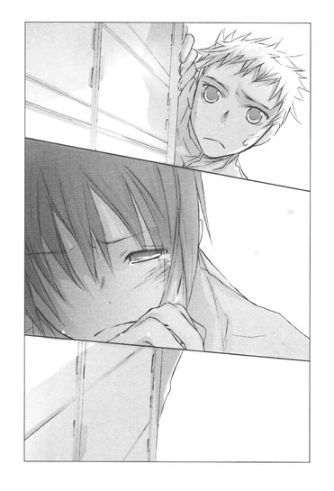
井上にも事情があったのかもしれない。琴吹だけが被害者なわけじゃなかったのかもしれない。
「ごめんな......井上」
迷子の子供みたいに頼りない足どりで遠ざかってゆく井上を、後悔で張り裂けそうになりながら見送り、掠れた声でつぶやく。
心の中でも、何度も何度も。
ごめんな、ごめんな、井上。
その間ずっと、中也の詩が、聞こえていた。
『汚れつちまつた悲しみに
いたいたしくも怖気づき
汚れつちまつた悲しみに
なすところもなく日は暮れる......』
〝文学少女〟の今日のおやつ ～『銀の匙』～
「井上くんって、ひょっとしてマザコン？」
十二月に入ったある日の昼休み、ぼくのお弁当を見おろしながら、森さんがしみじみつぶやいた。
「ちょっ──やめてよ！ また噂になるじゃないか！」
先日は男とつきあっているとささやかれ、その前は幼女の写真に毎晩話しかけているロリコンだと白い目で見られた。
この上、マザコンのレッテルまで貼られたら、たまらない。ホ×でロリコンでマザコンだなんて、どれだけ変態なんだ。
「ぼくは、マザコンじゃないからねっ」
もちろん、男とつきあってもいないし、小さな女の子の写真を隠し撮りもしていない。
「けど、そのお弁当、まるでお花畑だよ」
森さんの指摘に、声をつまらせる。
机の上に広げられているのは可愛らしいウサギの絵がプリントされたお弁当箱だ。そこに花や星の型で抜いたおにぎりや、動物の顔のついたピックで刺したミートボールやうずらの卵、タコさんウィンナーや、うさちゃん林檎なんかが、カラフルに並んでいる。ピンク地に赤いハートの旗まで立っている。
「すごいねぇ。お母さんの愛情たっぷりって感じだねぇ。愛されてるねぇ、井上くん」
しきりに感心する森さんの横から、他の女子までぼくのお弁当をのぞき込み、
「わぁ、メルヘン」
「フォークも、うさちゃんだ」
「これは愛だね」
と言い合う。ぼくは顔が熱くなった。
「ち、違うよ！ お母さんが妹のお弁当とぼくのお弁当を、間違えちゃったんだ！」
舞花が通う小学校には、週に一回お弁当の日がある。その日はお母さんも一層気合いを入れて、楽しそうにおにぎりの型抜きをしたり、ハンバーグに旗を立てたりしている。
もちろん、そっちは舞花の分で、ぼくの分は普通に作ってくれる。
今朝は気合いが入りすぎたのか、「あら、大変っ、もうこんな時間！」と、あたふたしていた。
「はい、お兄ちゃん、お弁当よ」
ブルーのランチクロスで包んだお弁当を、笑顔で渡されたとき、
あれ？ いつもより軽いな......と違和感を覚えたのだけど......。登校時間が迫っていたので、そのまま家を出たのだった。
「本当にこれは小学生の妹のお弁当で、普段は違うからね。そうだよね？芥川くん」
向かいの側で自分のお弁当を食べていた芥川くん（先日、ぼくとつきあっていると噂された相手だ！）に、同意を求める。
芥川くんは穏やかな口調で、
「ああ、そうだな。いつも手の込んだ綺麗な弁当ではあるけど、旗が立っているのは見たことがない」
と、答えた。
森さん達がちょっと嬉しそうな顔になったのは、芥川くんと話ができたからだろう。芥川くんは女子に人気がある。
「ふぅん、そうなんだ。でも、やっぱり毎日手の込んだお弁当を、お母さんに作ってもらってるんだねぇ」
なんだか含みを感じる。
「男の子って、お母さんに似た人を好きになるっていうものね。マザコンなら特にそうだよねぇ」
だからぼくはマザコンじゃない。
「じゃあ井上くんにアンケートっ。井上くんのお母さんって、可愛い系？美人系？」
おそろしく唐突なアンケートの開始に、ぼくは唖然としてしまった。
「え、な、なんで？」
「このアンケートで、井上くんのマザコン度が判定できるんだよ」
「ええっ」
ますますあたふたしながら、急かされるまま答える。
「か、可愛い系かな」
「体型は、ほっそり系？ ぽっちゃり系？」
「どっちかと言えば、ほっそり」
「胸は、微乳？ 巨乳？」
「そんなことまで答えるの!? 普通だよ」
「何歳までお母さんとお風呂に入ってた？」
「ええっ、それも!? 幼稚園まで......かな」
「井上くんにとって、お母さんの味といったら？」
「うーんと......鮭とブロッコリーのグラタン──って、なんでメモまでしてんの！」
森さんは「いいからいいから、気にしないで」と明るく言い、そのあとも、お母さんの好きな色だの、叱り方だの、あれこれ質問して、
「ありがとう。参考にさせてもらうねー」
と言い、去っていった。他の子達も、きゃっきゃっと騒ぎながら引き上げる。
参考って一体!?
あっけにとられるぼくの視線の先で、森さん達が琴吹さんとなにか話している。
琴吹さんは真っ赤な顔で、怒っているようだった。森さん達に向かってしきりに文句を言っていて、けれど森さん達はけろりとした顔で、笑っている。
すると、琴吹さんがぼくのほうを見た。
目があうと、びっくりしたように顔を引きつらせ、慌てて横を向いてしまった。
と思ったら、またちらっとこっちを見て、また目をそらし、なにか決意した様子で、そのまま近づいてくる。
椅子に座ったまま身構えていると、琴吹さんはそっぽを向いたまま、ぼくの机の上に、購買部で売っているチョココロネを置いた。
え？
ビター味のチョココロネを見て、それからまた琴吹さんを見上げる。
琴吹さんが横を見たまま、ぶっきらぼうに言う。
「......お昼のパン買いすぎちゃって、おなか一杯で、食べられないから」
ずいっとパンをぼくのほうへ押しやる。
「くれるの？ ありがとう」
何故急に？ よくわからないけれど、妹のお弁当だけでは量が足りないと思っていたので、ありがたいことはありがたい。
琴吹さんは、唇を尖らせて、赤い顔をしている。
「あ、お金払うよ」
「いらない」
「けど......」
前に、遠子先輩が食べてしまった本の代金を、きっちり請求されたことを思い出し、財布を取り出そうとすると、琴吹さんは怒っているような強い口調で、
「いい」
と断った。
自分でも声の感じが強くなってしまったことを気にしたのか、少しもじもじし、恥ずかしがっているような、怒っているような、困っているような、なんとも形容しがたい顔で、ぼくを見て、
「......井上って、マザコンなんだ」
ぼそっとつぶやき、せかせかと森さん達のほうへ帰ってしまった。
ぼくはショックのあまり、呼び止めて否定することもできなかった。
あ～～～～～～、今度はマザコンと呼ばれるのか。
「気にするな。母親を慕うのも大切にするのも、子供としてあたりまえのことだ」
がっくりしているぼくを見て、芥川くんが声をかけてくれる。
ぼくはハッとした。
そうだ、芥川くんのお母さんは、ずっと入院しているんだ。部活で忙しい中、芥川くんはよく病院へお見舞いに行っている。
「うん、そうだね。このくらい、今さらだよね」
切ない気持ちになったけれど、それはなるべく表に出さないようにして笑顔でつぶやくと、芥川くんも小さく笑った。
「まぁ、確かに井上は、年上の女性に可愛がられそうなタイプではあるな。天野先輩にも大事にされているし」
「えええええええ、遠子先輩に！」
ぼくはつい叫んでしまった。
琴吹さんが、こっちを見る。
慌てて声のトーンを落とし、けれど断固として主張する。
「遠子先輩が、いつぼくを大事にしたのさ？ 後輩は先輩の言うこときかなきゃいけないのよ、とか言われて、さんざん引っ張り回されて、いっつも迷惑をかけられてるのに」
芥川くんがおかしそうに目元をなごませる。そうしてさらに問題発言をしたのだった。
「そうか？ 劇の稽古のときも、井上をよく気遣っているように見えたが。ああ、それと、この前井上の家へ行ったときに思ったんだが、天野先輩は、井上の母さんに少し雰囲気が似ているな」
◇ ◇ ◇
遠子先輩がぼくを気遣っている？ それに、お母さんに似ているだって？
とんでもない誤解だ。
あのお気楽で能天気な〝文学少女〟のどこに、後輩への気配りがあるんだ。
お母さんにも、そんなに似てないと思うけど。
放課後。
釈然としないまま文芸部へ行くと、中から、ドサドサとものが崩れる音と、なにかがひっくり返る音、それに「きゃあ」という悲鳴が聞こえた。
なんだ！ 今度はなにをやらかしたんだ！
急いでドアを開けると、狭い部室に細かな埃が舞い上がり、壁際に築かれた本の塚が一部崩れて、床に本がばらまかれていた。そこにパイプ椅子が倒れ、さらに遠子先輩も、膝をついてへばっている。
掃除でもしようとしていたのか右手にモップを握りしめ、左手に何故かガムテープを持っている。
「なにをやってるんですか、こんなにちらかして」
「あぅぅぅ、ちょっと押したら、ぐらっと来ちゃったのよ～。防ぎきれなかったの～」
遠子先輩が半べそで訴える。
「気をつけてください。本に埋もれて圧迫死とか、洒落になりませんよ」
床に落ちた本を拾うのを手伝いながら、文句を言う。
遠子先輩は、「このお部屋が狭すぎるのよ～。みんなビンボーがいけないのよ～」といじけている。
あぁ、とても年上とは思えない。
やっぱりぼくのほうが、遠子先輩の面倒を見てるんじゃないか。
すきま風が吹きつける寒い部屋で、本を拾い集め、もとの場所に積み重ねてゆく。
床が綺麗になったあとも、遠子先輩は膝をついたまま、なにかを捜すように、目をきょろきょろ動かしている。
「今日は、おやつはナシですか？ だったら寒いので、もう帰りますよ」
「あーっ、ダメダメ！」
遠子先輩が慌てて立ち上がり、三つのお題を口にする。
ぼくは、でこぼこの机に、五十枚綴りの原稿用紙を置き、新品のＨＢのシャーペンで書きはじめた。
遠子先輩も、窓際に椅子を引っ張ってゆき、上履きを脱ぎ捨てて体育座りし、自前の文庫をめくりはじめる。
「中勘助の『銀の匙』は、みりんとお砂糖で甘く煮たお魚のようね」
優しい声でささやき、ページの端をぴりっと千切って口へ運び、そっと咀嚼し、飲み込む。そうして、幸せそうににっこりした。
「うーん、ほんわりしていて、美味し～！味がよく染みこんでいて、生姜の風味がきいていて、すべすべした白身のお魚を噛みしめると甘い煮汁が舌の上に、やわらかく広がって、ホッとするの。優しくて素朴な、お母さんの味ね」
お母さんの味──という言葉に、どきりとする。
遠子先輩は、うっとりと目を細めますます幸福そうに文章を追い、ページを破き、食事を続けた。
「作者の中勘助は、一八八五年──明治十八年、東京の神田に生まれた作家よ。もともとは詩を書いていて、長文詩によって独自の世界を表現しようと試みていたのだけれど、残念ながらうまくいかなくて、試行錯誤の末に、小説を書きはじめたの。
代表作となった自伝的小説『銀の匙』は、夏目漱石に絶賛されて、漱石の推薦で大正二年の四月から『東京朝日新聞』に連載されたわ。
銀の匙というのは、物語の主人公である〝私〟が子供の頃使っていた小さな銀製の匙のことよ。当時、産後の体調が思わしくなかったお母さんの代わりに、伯母さんが病気がちな〝私〟の世話をすることになって、この銀の匙で薬を飲ませてくれたの。
伯母さんは、かぎりなく善良で優しい人で、〝私〟を、もう一人のお母さんのように親密な愛情でくるんでくれたわ。どこへ行くにも〝私〟をおんぶして──それこそ、五つになるまで、ほとんど土の上に降りたことがなかったと〝私〟が回想するくらいに──。そうやって、大事に大事に育ててくれたのよ。伯母さんにとって、〝私〟の世話をすることが、無限の喜びであり、生きがいだったの」
ページを破いては食べ続ける遠子先輩の口元に、やわらかな笑みが浮かんでいる。
その顔を見ていると、寒いはずの部屋が、なんだかあたたかく感じられるから不思議で──。
あれ？
本当に、あたたかくないか？
昨日は、すきま風が頬や首筋に吹きつけて、えらく寒かったのに。
窓は今もかたかたと鳴っている。外はどんよりした曇り空だ。なのに何故？
「本の前篇には、〝私〟の子供時代が綴られているわ。
響きの良い美しい言葉で綴られた物語は、二十七歳の青年が書いたにもかかわらず、小さな子供の目から見た世界がリアルに細やかに描かれていて、あぁ、自分も小さい頃、そんなことがあったな。そんな風に思ったな。あのくらいのことが苦しくて嫌でたまらなくて、あんなささいなことが嬉しくて仕方なかったなぁと、思い返したりするのよ。
そんな懐かしくて、愛おしい〝私〟の世界には、いつも見守ってくれる伯母さんの姿があったわ」
優しく、そっと、遠子先輩が言葉を重ねてゆく。
「甘くて、ふっくらした、お魚の煮つけのように──伯母さんの存在が、この物語に、あたたかさと安心感を与えてくれるのよ。
そう、お魚は、絶対に鰈なの。
この本を最後まで読んでもらえれば、何故鰈じゃなきゃならないのか、わかってもらえるはずよ。そうして、寂しさで胸がいっぱいになるわ。
他にもね、この本には美味しそうな食べ物がたくさん出てくるのっ。後篇の最後の、友人の別荘で美しい姉様といただく晩ごはんの描写なんて、絶品よ！手作りのお豆腐に、おろした柚子がほろほろとかかったものを、つゆにひたして、そっと舌にのせたものが、とろけてゆく様子に、うっとりするわ。〝私〟が子供の頃に伯母さんと買いにいった、つるんとした竹の羊羹や、棒状の飴に肉桂をまぶした肉桂棒というお菓子も、文字を読んでいるだけで、唾がわいてきそうよ。
けど、やっぱり、わたしにとってこの本は、伯母さんの鰈なのっ」
そうか、わかった！
原稿用紙のマスを埋めながら、ぼくはようやく気がついた。風が吹き込む位置にちょうど遠子先輩が座っていて、壁になっている。それで、ぼくのところへ風がこないのだ。
納得すると同時に、あらたな疑問がわいてくる。
あんなところに座っていたら、遠子先輩は寒いんじゃないか？
もしかして、わざと......？
ぼくが昨日、風邪を引きそうだと文句を言ったから？
『銀の匙』をめくる遠子先輩は、普段と変わらず、能天気にぱりぱりむしゃむしゃやりながら、優しく澄んだ声で語り続けている。
芥川くんに言われたことを思い出し、急に胸が締めつけられ、頬が熱くなった。
──天野先輩にも大事にされているし。
いや、きっと偶然だ。
遠子先輩がぼくを気遣って、わざわざ寒風に身をさらしているとは思えない。
遠子先輩は、「ヨーロッパでは、幸せな赤ちゃんは銀のスプーンをくわえて生まれてくると言われているのよ、出産祝いに銀のスプーンを贈ったりするの」と、にこにこしながら豆知識を披露している。
やっぱり偶然......。
「あっ！」
遠子先輩がいきなり叫び、椅子から身を乗り出したので、ぼくはびっくりして書く手を止めた。
「どうしたんですか!?」
「見つけたぁ」
小さな顔に、嬉しそうな笑みが広がる。
いそいそと椅子から降りて、床に膝をつくと、再びモップを手に取り、柄に輪っかにしたガムテープを貼りつけ、本の塚の間に差し入れた。
？ ？ ？ なにをしているんだ。
唖然とするぼくの視線の先で、すぐにモップを引き、またにっこりした。
柄に貼りつけたガムテープに、シャーペンがくっついている。
ぼくがこの前、なくしてしまったやつだ！
もしかして、ぼくが来る前にモップとガムテープを持ってごそごそやっていたのも、シャーペンを捜していたから？ぼくはとっくにあきらめていたのに──。
遠子先輩は得意そうに瞳をきらきら輝かせ、シャーペンを手にしたまま、ぼくのほうへ歩いてきた。
そうして、目を丸くしているぼくの手のひらに、それをちょこんと載せたのだった。
「はい、心葉くん。今度はなくさないようにね」
ほのぼのとした笑顔に、毎朝ぼくにお弁当を渡してくれるお母さんの顔が重なった。
──はい、お兄ちゃん、お弁当よ。
突然鼓動が高まり、顔が火がついたように熱くなる。
に......似ているかも......。確かに......。
遠子先輩が、パイプ椅子に戻る。
上履きを脱いで体育座りし、また『銀の匙』を食べはじめる。
「ああ、本当にこの本は、甘くて、切なくて、幸せで、美味しいわ。
こんな風に、なにもかも受け入れて、優しく見守ってくれる人がいるのは、とっても素敵なことね」
春の陽射しのようにやわらかな声でつぶやき、くしゅん、と小さくくしゃみをした。
ぼくは決してマザコンではない。
遠子先輩が、ちょっとだけお母さんと似ていたからって、どうってことはない。
けど......。
〝焚き火〟〝トナカイ〟〝早食い競争〟
三つのお題で書いた今日のおやつを、ぼくはしばし見おろした。
早食い競争に敗れ、夜の森を孤独に彷徨うトナカイが、彼を一途に待ち続けていた恋人の少女と、焚き火の前で再会する──。
もちろん、このあと遠子先輩がべそをかくような、どろどろしたオチをつける予定だった──のだけど......。
遠子先輩が背中で風を受けてくれているので、部屋の中は、ほのかにあたたかい。
たまには、〝先輩孝行〟してあげよう。
遠子先輩が見つけてくれたシャーペンで最後の一行を書き終えると、ぼくは甘く仕上がったその話を、食後のデザートを待ちかねている文学少女に渡したのだった。
〝文学少女〟と祝福する詩人
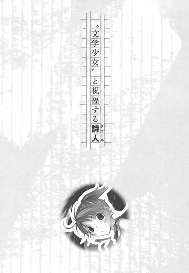
福引きの抽選機、あれなんて言うんだっけ？ガラガラ？
ともかく、そいつを回したら、赤い玉がぽとりとこぼれ落ちた。
「おめでとーございまーす！ 一等賞のコバルトパーク、ペアチケットでーす！」
派手なハッピを着たおっさんが叫び、目の前で、じゃらんじゃらんと鐘が鳴り響いた。
◇ ◇ ◇
「やった！ ホワイトデーは、森と温水プールだ！」
商店街の福引きで獲得したペアチケットを高々と頭上にかかげ、オレは自室で一人サンバを踊っていた。
三月に入り、世間はすっかり春めいている。三学期も残りわずかで、四月からは受験生だ。灰色の受験生活に突入する前に、ぜひ森と甘い思い出を作りたい。オレのそんな願いを、神様は聞き届けてくれたらしい。
ここ最近ツイてなかったからな。初詣のときの賽銭返せ、と思っていたが、ま、これでチャラにしてやるぜ。
都内の外れにあるコバルトパークは巨大なドームで覆われ、南国の海を模した波が寄せる温水プールがある。しかもしかも、ウクレレの演奏やフラダンスショーがあり、時間ごとに照明が切り替わり、夜の海や夕暮れの海にいるような雰囲気にひたれるという。
海！
夕暮れ！
ウクレレのＢＧＭ！
あとはビニールのイルカの浮き輪を浮かべれば、完璧だ！
あざやかなブルーのペアチケットを、ひたすらにやにやにやにや眺める。顔がゆるんで、どうしようもない。ホワイトデーはこのチケットでコバルトパークへ行き、夕暮れのオレンジ色の照明の中で、森とキスをするんだ！
ところが。
「ゴメンっ、亮太。あたし今日、ななせと帰るから。明日もあさっても、ななせと帰る。土日も、ななせと出かける用があって......」
森が拝むように手をあわせる。
昼休み。オレ達は教室から離れた廊下の隅で、こそこそ話していた。
「おいおい、またかよ！ 先週から琴吹にべったりじゃねーか。琴吹だってそんなに毎日ひっつかれたら、ウザイだろ」
「でもっ、ななせ、今、井上くんのことですっっっごく落ち込んでて、放っておけないんだよぉ。亮太が井上くんをとっちめてくれたけど、全然効果なかったし」
「うっ」
とっさに声をつまらせる。
「ま......まぁ、一発ぶん殴って、おまえ二股かけてんじゃねーよと、ガツンと言ってやったんだが......」
ということに、なっている。
実際は、サラダオイルを靴の底に塗って転ばしたら、ぽろぽろ泣かれて、罪悪感に胸が痛みまくり、なんにも言えなかったわけだが。
「せっかく亮太が頑張ってくれたのに、井上くんってば、休み時間もず─────っと自分の机でなんか書いてて、ななせに話しかけもしないんだよ。ななせは泣きそうな目で、井上くんのこと見てるのに」
だな。
琴吹のあの目は、確かにヤバい。
二人がつきあっていることは、これまでクラスの連中には知られてなかった。井上はおとなしくて目立たないし、琴吹は井上にずっとツンケンしてたので、琴吹ファンの男どもも井上のことはノーマークだったのだろう。それが、琴吹があんまりしめっぽい目で井上を見ているので、さすがに噂になっている。
「琴吹、井上となんかあったのか？」「あいつら、どうなってんだ？」「琴吹は、もう井上のもんなのかー！」と悲鳴を上げている。
井上に直接訊いてみようとしたやつもいたようだが、そうすると必ず芥川が出てきて、今はそっとしておいてほしいとかなんとか、言われたらしい。
オレは、歯切れの悪い声でつぶやいた。
「あー......けどなー、恋愛の悩みなんて、当事者にしかわからねーこともあるわけだし、井上だけが悪いってわけじゃ」
すっころばして泣かせた負い目もあり、さりげなく援護する。
が、頬をふくらませた森に睨まれて、慌てて付け加えた。
「二股かけるのは、もちろんよくねーけどな！」
「ぅぅ本当に最低だよっ！ 井上くんもだけど、天野先輩もひどいよねっっ。ななせと井上くんがつきあっているのを知ってて、わざわざデートの日に、井上くんを呼び出すんだから」
ん？ 天野？
って、〝文学少女〟────！
「おい！ 井上が二股かけてるのって、文芸部の天野先輩なのか？」
森がふくれっつらのまま、うなずく。
「そうだよ。ななせは天野先輩のこと慕ってたから、余計にショックだよ」
オレも茫然としていた。
あの、天野遠子が、井上の浮気相手だって!?
◇ ◇ ◇
放課後。
オレは意を決して学園の中庭に、威風堂々とそびえ立つ音楽ホールを訪れた。
三年生は受験のため、とっくに自由登校になっているが、天野先輩は毎日この音楽ホールへ来ているらしい。
他人の色恋に口を出す趣味はねぇ。けど、井上が琴吹と二股かけているのが、これまで森のことで世話になった天野遠子だというのが、やはり気になった。
それに、いいかげん井上と琴吹のことが片づかねーと、森との仲も進展しねぇしな。昼休みも、プールに誘いそびれちまったぜ、くそっ。
やっぱオレ自身のためにも、天野先輩に会うしかねぇ。
初めて足を踏み入れる音楽ホールは、「げ？これオーケストラ部のＯＢの寄付だけで作ったってマジ？」と、びびるほど豪勢で、足下に高そうな絨毯とか敷いてあるのを見て、目をむいた。
部員に案内され、最上階に向かったわけだが、その間ずっと心臓がばくばくしていた。
落ち着けオレ、ここは学校だ。ホワイトハウスに招待されたわけじゃねぇんだから。
落ち着け、落ち着け。
呪文のように唱え、部屋に入ったとたん、
「反町くん？」
やわらかな声が、呼びかけた。
オレはぎょっとして、立ちつくした。
天野先輩は、普段三つ編みにしている長い髪を片側だけほどいている。ゆるやかなウェーブのかかった黒髪が、肩から背中へ、腰へと、なまめかしくこぼれている。
驚いたのはそれだけではなく、細い体に、真っ白なシーツを、どこかの民族衣装のように巻きつけている。そのシーツの白さに負けないくらい白く透き通った首筋や、鎖骨が鮮烈に目に突き刺さる。さらに、シーツの合わせ目からのぞく、白い素足。むき出しの肩や二の腕。
って──ひょっとして、シーツの下、服着てねぇ!?
な、なんちゅーカッコしてんだ！
いくら三月になってあたたかくなったからって、外はまだ冬もののコートが必要な時期で──って、そういう問題じゃねぇ！
「あらあら真っ赤よ、おたく。二年生の坊やには刺激が強かったかしら？」
楽しそうに言ったのは、手に絵筆を持った豪華な美人だった。派手な茶色の髪を首の後ろで無造作に結び、制服の上にシンプルなエプロンをかけている。タッパがあって、肉感的な体型で、こっちを見つめる目つきも表情も、圧倒的なまでの華やかさと自信にあふれている。
姫倉麻貴。
理事長の孫で、姫と呼ばれている。校内じゃ誰もが知ってる超有名人だ。もちろん、オレみたいな一般人は話をしたこともない。
向こうは、にやにやと無遠慮にオレを見ている。
からかわれているとわかって、情けねーことにますます顔が熱くなる。
「いや......その、オレは......」
なに、つまってんだ、みっともねー。
天野先輩が、優しく言う。
「ごめんなさい、こんな格好で。ちょうど絵のモデルをしていたのよ」
「も、モデル......？」
「そう、ヌードモデル」
姫の言葉に、心臓がまた飛び上がる。
ぬ、ヌード！
やっぱりヌードなのか？ あのシーツの下は！見ちゃいかんと思っても、つい凝視してしまう。
シーツが透けるわけではないし、オレは胸はないよりあったほうがいい派なのだが......。天野先輩は、どう見ても、ないよなぁ......。
って、なに考えてんだ！
「もう、麻貴ってば変なこと言わないの！」
天野先輩が姫を睨む。
それから、オレの顔を心配そうにのぞきこんで、
「反町くん、目がぐるぐるしているけど、大丈夫？」
「あ、ああああっ。ちょっと熱くて。けど、どうってことねぇ」
髪を半分ほどいているせいだろうか。
天野先輩は、いつもより大人びていて、綺麗に見えた。
いや、前から外見だけは美人なんだが、なんかこう......透明感が増したというか......それでいて、どっか儚げで色っぽいっつーか......。
くそっ、動悸が止まんねぇ。
「おたく、立っていないで座ったら？ お茶を用意させるわ」
「いや、すぐ帰るから」
ぶっきらぼうに答える。
「麻貴は、ちょっと向こうへ行っていて」
「あら、そんなあられもない姿の遠子を、やりたいさかりの男子生徒と二人きりになんかできないわ。間違いがあったら困るもの」
「ありません。いいから出てって」
姫が肩をすくめ、部屋の奥にある扉の向こうへ消える。
そうしてから、天野先輩はオレを見上げて微笑んだ。
「わたしに用ってなぁに？ また森さんのこと？」
オレは声をつまらせた。
こんなおだやかな優しい顔で、あらためて訊かれると、汗が噴き出て困ってしまう。
この人、本当に井上と浮気したのか？ しかも森の話だと、井上が琴吹とつきあってることを知ってて、デートの日にわざと呼び出したとかいうし。
それがマジならひでぇ話だが、オレが口を開くのを優しい顔で待っている天野先輩は、そんな女には見えない。
これまでだって、廊下の真ん中で詩を朗読したり、いきなり自分の世界に入り込んでハイネやらバイロンやらを語ったりする変わった先輩だったが、真面目にオレの相談に乗ってくれた。
いわば恩人だ。
そんな人を問いつめたりしていいのか迷ったが、今さら黙って帰るわけにもいかねぇ。
オレはぐっと腹に力を入れた。
「今日はオレのことじゃなくて、あんたのことだ」
「え？」
「井上が、琴吹とのデートをすっぽかして、先輩のほうへ行っちまったって聞いてる。井上が二股かけてるって」
天野先輩が目を見開き、それからだんだんと悲しそうな顔になる。
う......やっぱ、こういうのは苦手だ。
「琴吹がすげぇ落ち込んでて、森が心配してつきっきりなんだ。オレのことなんて完全に後回しって感じでさ。だからオレとしては、琴吹と井上がうまくいってくれんのが理想なんだが、天野先輩は井上のこと、どう思ってんだ？」
天野先輩が目を伏せる。
「そうだったの......ごめんなさい」
折れそうに細い指でシーツをそっとかきよせる仕草も、つぶやく声も悲しそうだった。
「ななせちゃんにも話したけれど、あの日、心葉くんは、わたしがトラブルに巻き込まれてるんじゃないかって、誤解していたの。それで、後輩として、心配して来てくれただけなのよ」
「質問に答えてねーよ。先輩は井上のこと好きなのか？」
天野先輩が顔を上げた。
切ないほど綺麗な笑みに、ドキッとする。
「......心葉くんは......」
声が、少しだけ震えていた。
けど、オレを見つめる瞳は濁りがなく、まっすぐで。
口元に、小さな笑みを刻んでいて。
「......大事な、後輩よ」
そう言い切った。
「大事って、やっぱ好きってことか？」
「いいえ。そういうんじゃないの......ただ、大事なの」
ゆっくりと、確認するように言う。
あたたかな声で、澄んだ瞳で。
その表情に、その声に、胸がたまらなく痛くなった。
──大事なの。
そうつぶやく言葉に、ただ〝好き〟というよりも、もっと強い想いが込められているような気がして。
オレは、あんま恋愛に詳しくねーし、女心ってやつもよくわかんねーけど。
大事と好きって、違うのか？
こんな切ないほどに優しい顔で、大事だとつぶやく、なのに好きじゃないなんて、どうして？
黙っていると、天野先輩はシーツを引きずって本棚のほうへ歩いてゆき、そこから一冊の本を抜き出して、オレのほうを振り返り、大人びた笑みを浮かべた。
「タゴールの『ギタンジャリ』よ。知ってる？反町くん」
「いや。タコール？」
「タコじゃなくて、タゴールよ」
天野先輩が、くすくす笑う。
「ラビンドラナート・タゴールは、一八六一年五月七日生まれの、インドの文学者で、哲学者で、作曲家で、画家で、評論家で、教育者で──詩聖と呼ばれた人よ。
家はインド屈指の大財閥で、カースト制の最高位にあたるバラモンとして生まれ育った彼の周囲には、新しい文化や芸術の息吹があふれていたわ。広々とした庭のあるお屋敷で、少年タゴールは美しいものをいっぱい吸収して、成長してゆくの。
そうして、一九一三年、詩集『ギタンジャリ』によって、アジア人初のノーベル文学賞を受賞するのよ」
本を胸に抱き、天野先輩がタゴールについて語り続ける。
「タゴールの詩は、清らかな泉の水にもたとえられるけど、わたしは、金色に輝くマンゴーと、爽やかなヨーグルトが混ざりあった、甘くてすっきりしたラッシーみたいだなとも思うの。豊かで、優しくて、光にあふれ、無限の愛情と抱擁を感じさせる──」
ほころんだ唇から、歌うように言葉がこぼれる。
『あなたは わたしを終りのないものに お造りになりました。
それが あなたの喜びなのです。
この こわれやすい器を あなたはいくたびもうつろにし
また いつも新しい生命で 充たされます』
天野先輩が溜息をつく。
「『ギタンジャリ』は、神様に捧げる歌なの。もともとはタゴールの母国語であるベンガル語で定型詩として書かれたものを、彼自身が散文詩として英訳したものが、ヨーロッパで紹介されたのよ。読み比べてみると、味わいがかなり違っていて、おもしろいの。
定型詩のほうは、ほのかに甘いナンみたいに素朴で、それでいて荘厳で、どこか懐かしくて力強い味がするのよ。
どちらも、大いなる存在への愛と信仰にあふれているわ。同時に、天空に住まう神様からわたし達に注がれる、あたたかな眼差しも感じるの」
目を閉じてつぶやく天野先輩は、息をのむほど綺麗だった。
『わたしの いのちのいのちである あなたよ。
わたしの からだを
いつも 清くしておきましょう。
あなたの生命のみ手が
わたしの手足の端はしに ふれることを知りましたから』
ほどいた黒髪が、白いシーツの上にこぼれている。
長いまつげ。
細い首筋。
おだやかな声。
『わたしの想いのなかから まことでない思いをすべてしりぞけましょう。
あなたこそ わたしの心に まことの光を ともしたもうた
真理そのもののお方であることを知りましたから』
──大事なの。
さっき聞いた声を思い出し、胸がまた痛くなる。
そういや、先月、中庭で会ったとき、天野先輩はしょんぼりして見えたっけ。
──身近な子にね......彼女ができたの。すごくいい子で、二人とも初々しいの......。
そう言って、寂しそうに微笑んでいた。
あれは、井上と琴吹のことだったんじゃないか。
だとしたら、天野先輩はやっぱり井上のこと。
『わたしのこころから あらゆる罪を追い出して
わたしの愛を 花咲かせましょう。
わたしのこころの奥の殿堂に
あなたが み座をおきたもうことを 知りましたから』
井上のことさ。
『わたしの行うことに あなたがあらわれるようにわたしはつとめましょう。
わたしに おこなう力を下さるのは
あなたであることを 知りましたから』
好きなんじゃねーのか。
神様に捧げるその歌は、まるで恋歌のように聞こえた。
天野先輩が目を開ける。
一瞬、夢からさめたみたいな悲しそうな顔をしたあと、すぐに花のように綺麗に微笑んだ。
「この詩集、ぜひ読んでみて。きっと心が洗われるような、爽やかな気持ちになるわ。〝文学少女〟のわたしから、反町くんへ大お薦めよ。麻貴にはわたしから伝えておくわ」
そう言って、オレの手にタゴールの詩集をそっと渡す。
「天野先輩、やっぱ井上のこと」
「反町くん。わたしは心葉くんのこと、好きとか、おつきあいするとかそんな風に思ってないし、心葉くんも同じだと思うわ。心葉くんの彼女は、ななせちゃんだけよ」
天野先輩の表情にはもう弱々しさはなく、声もおだやかで明るかった。
「ななせちゃんと心葉くんがおつきあいすることになって、わたし、本当に嬉しかったのよ。そうなればいいなぁって、思っていたから」
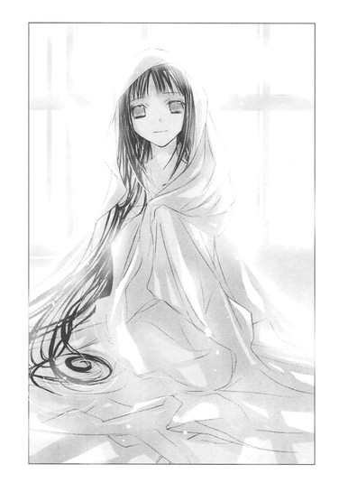
胸がもやもやしたけど、なんて言っていいのかわからなかった。
本当にいいのか、それで？ 中庭であんな寂しそうな顔してたくせに。いいのかよっ？
「ねぇ、心葉くんは、最近どう？ 元気にしてる？」
「よくわからん。ずっと机に張りついて、原稿用紙になんか書いてる」
天野先輩の目に、やわらかな光が浮かぶ。
「......そう」
嬉しそうにつぶやいて、口元をほころばせた。
ドアが開いて、姫が顔を出す。
「そろそろいいかしら？ あたしも時間が惜しいの」
「あ、すんません」
「詩集の返却は、いつでもかまわないわよ」
からりとした声で告げたのは、天野先輩ではなく、姫のほうだった。
げ、まさか盗み聞きしてた？
天野先輩が頬をふくらませて、睨む。
「麻貴......！」
姫がにやりとしたまま、
「じゃあね、反町くん」
と、オレを追い払うように、しっしっと手を振る。
「えっと、天野先輩」
マジな声が、口から勝手に出てくる。
なに言おうとしてんだ、オレ。
けど、そこで言葉が止まってしまい、さんざん迷って顔を赤くして、やっとつぶやいたのは。
「......受験生なんで、風邪、引かないように」
あぁ、なに言ってんだぁぁぁっ！ 違うだろ、そうじゃなくて、井上のこととか、井上のこととか、井上のこととか、井上のこととか────！
「大丈夫よ、遠子はあたしがあたためてあげるから」
「お断りよ！ それ以上おかしなこと言ったら、モデルやめるわよ！」
「お邪魔しましたっっっ！」
慌てて廊下へ飛び出し、ドアをしめた。
「天野先輩はさ、やっぱ井上のこと好きなんだよな......」
音楽ホールを出て、タゴールの詩集を抱え昇降口へ向かいながら、つぶやく。
「じゃあさ、井上はどっちに惚れてんだ？天野先輩か？琴吹か？」
うぅぅぅぅぅ、琴吹とのデートをすっぽかして、天野先輩のところへ行っちまったってことは、やっぱ天野先輩に傾いてんのかな。天野先輩は、あれは事情があったと言ってたが、それなら琴吹があそこまで落ち込む必要はないはずだ。
彼女である琴吹が、井上の心の揺れを一番敏感に察してるんじゃないか？井上の気持ちが、今、誰のほうを向いているのか。井上が誰を想っているのか。
部外者のオレから見ても、井上は天野先輩といるとき、なんか平和そうで、すげーなごんでるように思えるし......。教室じゃおとなしいのに、天野先輩には突っ込み入れたり、嫌みを言ったりしてさ。井上の隣に天野先輩がいることが、自然っていうか......しっくりくるっていうか......。琴吹とつきあってると聞いたときより、すんなり納得できてしまう。ああ、やっぱりって......。
けど、そしたら琴吹の存在ってなんなんだ。
憤慨している森や、机で書き物をしている井上を悲壮な目で見つめる琴吹が浮かび、青汁をイッキ飲みしたような、苦い気持ちになる。
あんな惨めな顔させるなら、最初からつきあうなよ。つきあってるけど、他に好きな女がいるとか、めちゃくちゃ残酷だ。
もし、井上が天野先輩にマジだとしたら......琴吹は辛いよな......。今だって、すげーキツそうだもんな......。
はー、当分、森とのキスは無理か。
暗い気持ちで歩いていたときだ。
ん？ あれ？
下駄箱の前に、青ざめた顔で立っている琴吹を見つけた。
森と一緒に帰ったんじゃなかったのか？
なんで、あんなところにつっ立ってんだ。しかも、えらく顔色が悪いし。
琴吹はみじろぎもせず、下駄箱の一点を、じ────っと見ている。
それは、井上の上履きだった。
なんだ、画鋲でも仕込む気か！
琴吹の手が、井上の上履きに触れる。
背筋を悪寒がざわっと駆けたとき────琴吹が顔をゆがめた。
目の端に、みるみる涙がにじむ。
「こ、琴吹......っ！」
何故、声をかけてしまったのだろう。
見なかったふりをして、背中を向けちまえばよかったのに。
けど、足は琴吹のほうへ向かっていた。
「！」
琴吹がびっくりして、井上の靴から手を離し、オレのほうを見る。
頬にぽろっと涙が一粒こぼれ、それを手の甲でごしごしこする。
「森と帰ったんじゃなかったのか」
「と......図書委員の仕事があるから、先に帰ってもらったの。森ちゃんは、待ってるって、言ってくれたんだけど」
「まだ、図書室しめる時間じゃねぇだろ」
「......」
琴吹が唇を噛んで、うつむいてしまう。
「図書当番って、嘘だろ」
「......」
「森と帰るの、嫌だったのか」
「......」
「まぁその、テンション低いときに、横でにぎやかにされると、うっとうしいのはわかるが。森に悪気はないわけで──」
「ち、違うの」
琴吹が弱々しく首を横に振る。
「森ちゃんは、あたしのこと心配して、自分のこと後回しにして、あたしにつきあってくれるの......」
声をつまらせ、目の端に新しい涙をにじませる。
「でも、あたし、笑えないし......すぐ暗い顔しちゃって、も、森ちゃんに悪くて......」
やべぇ、今泣かれたら、すげー困る。
「そ、そんなことないぞ！」
オレは大声を出した。
「森は、ああいう性格だから、迷惑とか絶対思ってねーし。そうだ！今度の休みに、琴吹と遊びに行きたいって、言ってたぞ！オレ、たまたまコバルトパークの無料チケット、三枚持ってんだ！」
ずっとポケットに入れておいたチケットを取り出して、ほらほらと見せる。
琴吹は目を丸くしている。オレは勢いのまま叫んだ。
「日曜日、オレと森と琴吹の三人で出かけようぜ！んで、ぱーっと派手に遊んで、やなこと吹き飛ばしちまおう！」
◇ ◇ ◇
そんなんで日曜。
オレは、森と琴吹の三人で、憧れのコバルトパークを訪れたのだった。
当然、オレの分のチケットは自腹で。
森はオレの提案を、素直に喜んでいた。
──亮太もななせのこと、心配してくれてたんだね！ありがとう、亮太！惚れ直しちゃった。
──ななせもコバルトパークに行くって言ってくれたよ。二人で、ななせのこと盛り上げようねっ。
──今日、ななせの水着を買いに行くんだ～！
きらきらした顔で、オレにいちいち報告しに来た。
オレは心の中で、
......さよなら、オレ達のホワイトデー。
と、つぶやいたのだった。
電車で現地へ向かう間、琴吹は言葉少なだった。
四人がけのボックスシートで、森は琴吹の隣に座り、明るく話しかけたり、チョコレートやクッキーを勧めている。
琴吹も、気を遣わせて悪いと思っているらしく、短くはあるが一生懸命返事をしていた。
「......うん」
「そうだね、森ちゃん」
「......ふぅん、そうなんだ」
ボキャブラリーが、えらく乏しく笑顔もこわばっていたが。
精一杯笑おうとしている努力は感じられて、オレの分のチケット代が自腹になったことも、ま......仕方ねーか、と思えた。
琴吹が元気になるといいな。
ドーム状の建物に入ると、中は南国だった。
あちこちに椰子の木が植えられ、ハイビスカスの花が咲き乱れ、ウクレレの演奏が流れ、巨大なプールには波が打ち寄せる。
「うわぁ、すごーい」
森が歓声をあげる。
「本物の海みたい！ 早く泳ぎたーい！ ね、ななせ」
「うん」
「あ、女子更衣室はあっちだね。亮太、そこの椰子の木の下で待ち合わせしよう」
「おう」
森が琴吹の手を引いて消える。
オレはさっさと着替えをすませて、待ち合わせ場所の椰子の下に尻をつけて体育座りしていた。
日曜のせいか、小学生くらいのガキどもがぱたぱた走り回っていて、えらく騒々しい。
なんか......思ってたのと、ちょっと違う。
もっとこうロマンチックな海辺を想像していたのだが......。庶民的というか、大衆的というか、家族連れがやけに多い。潮の香りの代わりに、プール独特のプラスチックみたいな香りがするのもなぁ......。
まぁ、贅沢は言うまい。
それにどのみち今日は、森とキスなんかできねーし。
しっかし、おせーな。
女の着替えに時間がかかるのは、知ってる。うちのクソ生意気な妹も、風呂がやたら長ぇし。それでも、遅い。遅すぎる。
なんかあったんじゃねーかと心配になったときだ。
「お待たせ～！ 亮太ぁ！」
森の声がした。
そっちを見たオレは、頭を貫くような衝撃に、思わず立ち上がった。
森は前に見舞いに来たとき見せてくれた、ハワイアンブルーのビキニを着ている。下がひらひらしたミニスカートになってるオレの好みにぴったりのやつだ。
あのときエプロンに隠れてわからなかった胸のふくらみや、腰のラインもよく見える。二の腕のふっくら加減といい、健康的な太ももといい、そこそこサイズのある胸といい、それを包むハワイアンブルーのビキニとのコントラストといい、待ったかいがあったぜ！と胸の奥で雄叫びをあげるほどグッジョブだ。
が！ しかし！ 森の水着以上にオレの度肝を抜いたのは、隣でうつむいてもじもじしている琴吹だった。
ピンクのビキニ！ しかも、布、少なっ！
上から白のパーカーを羽織っているが、歩くたびに揺れる胸が、三角の布からはみ出そうだ。
琴吹の胸はヤバいと、前から男子の間で評判だった。意外とエロいとか、巨乳だとか。
ぶっちゃけ琴吹より胸の大きな女子なんかいっぱいいるし、制服を着ているときはそこまでデカいとは思わなかった。だが、こうして水着に──しかもビキニなんて着てみると、ウエストが細い分、胸が強調される。
それが、ふるんふるんと揺れながら近づいてくるのだから、オレがそこばっかり凝視してしまっても、勘弁してほしい。
つか、足もすっげー細くて、長ぇ。
いやっ、オレの好みから言ったら、断然森なんだが。
痩せすぎの女より、ちょっとぽっちゃりしているくらいがオレは好きだ。
森の太ももと、琴吹の太ももと、どっちを選ぶかと言われたら、間違いなく森の太ももだ。
けど、琴吹の水着姿があんまり強烈で、今は目が離せない。
いくらパーカー羽織ってるとはいえ、その水着は際どすぎだ琴吹！そんなもん着たら周りの男どもからどう見られるのか、考えろよ！半径三メートル内の男が全員、物欲しそうにこっちを見てるじゃねーか。
「亮太？ どうしたの？ おっかない顔して」
「え、あ、いや」
いつの間にか、二人が目の前に来ていた。近くで見てもやっぱりすげー......って、バカ、琴吹なんか見るな！
オレの彼女は森だ！
「ごめんねー、着替え遅くなっちゃって。もしかして怒ってる？」
「い、いや、そういうわけじゃ」
すまなそうに謝る森の横で、琴吹は唇を尖らせ、うつむいている。
「そうだ！ お詫びに、名物のトロピカルキャンディーおごるね！七色のアイスキャンディーなんだよ～」
森が明るく指さすほうに、キャンディーののぼりを立てた屋台があり、行列ができている。
「じゃあ、あたしちょっと行ってくるから、亮太もななせも、先に泳いでて！」
「！」
「森っ！」
琴吹が慌てたようにビクッとし、オレも声を張り上げる。
森はブルーのミニスカをひらひらさせて、屋台のほうへ走り出していた。
うぉぉぉぉ、行くなぁぁぁぁ、森ぃぃぃぃぃぃ。
オレの魂の叫びは伝わらなかった。
森はくるりと振り返り、あふれんばかりの笑顔で手を振ると、また背中を向けて走っていってしまったのだった。
残されたオレと琴吹の間に、気まずい沈黙がただよう。
あぁ、前もこんなことがあったっけ。
オレが琴吹に惚れていると早とちりした森が、オレと琴吹を二人きりにして......。
けど今、オレは森の彼氏だろ？ くらら亮太の仲だろ？大事な彼氏と他の女を二人きりにするな、アホ！フツー嫌がるだろ！ヤキモチやくだろ！
それだけ信用されてるっつーよか、オレって森に愛されてないんじゃ......。
がっくりと、しゃがみ込む。
「あー......オレ、ここで荷物見てっから、泳いでこいよ、琴吹」
「......う......。森ちゃんが戻ったらでいいよ」
琴吹がもぞもぞとパーカーの前をあわせて、オレの隣に座る。
そのまま横を向き、頬を染め唇を尖らせている。
あ、そっか。
やっぱ琴吹も、自分の格好が恥ずかしいんだな。それに、パーカーを脱いで一人でプールに足を踏み入れようものなら、ナンパ目当ての男がわらわらよってきて一悶着起こりかねない。それなら森が戻ってくるまで、オレが隣で睨みをきかせてるほうがいいよなぁ......。
しかし、パーカーを羽織っていても、隙間からのぞく胸元や、むき出しの細い足に目がいって困る。
「その水着、森と一緒に買いにいったやつか」
話題が浮かばず尋ねると、恥ずかしそうに、
「......うん」
と、つぶやく。
「......ワンピースにしようとしたら、森ちゃんが絶対こっちがお勧めだって......」
森ぃぃぃ。もっとおとなしいやつ、選んでやれよ～。
「......ななせは積極的になったほうがいいって」
「ま、まぁまぁ......似合ってるぜ」
つっかえながら言う。
「そうだな、森の言うように、たまにはハメをはずして騒ぐのもアリなんじゃねーか」
「......今日、デートの邪魔してゴメンね。本当は森ちゃんと二人で来るつもりだったんでしょ」
琴吹が、愛想のない声で言う。
「い、いや、そんなことは」
「たまたま、ペアチケットと、お一人様用のチケットを持ってるなんて、変だもん」
「うっ」
「あたしのことは、放っておいてくれていいから」
下駄箱の前に、ぽつんと立っていた琴吹の姿が浮かんだ。
井上の上履きに、泣きそうな目でそっと触れる琴吹......。
森はまだ戻ってこない。
オレは、ためらいながら言った。
「あのさ......オレ、この前天野先輩と、ちょこっとだけ話したんだ」
琴吹の肩がぴくりと揺れる。
「天野先輩さ......井上のこと、好きとかつきあうとか、そういう対象じゃないって言ってたぞ......。井上の彼女は、琴吹だけだって」
いきなり琴吹がオレのほうへ顔を向け、小さく叫んだ。
「そんなのダメっ！」
驚くオレに、必死な表情で訴える。
「だってっ、だって......っ、井上は遠子先輩のこと、好きなんだよっ。もうずっと前から、遠子先輩が好きなのっ」
そうして、泣き出しそうな顔で自分のつま先を見つめる。
「わかってた、井上が遠子先輩のことばかり気にしてるの......。あたしじゃダメなんだって......。井上、今、休み時間もずっと小説を書いているでしょう。
あれは、遠子先輩のためなの。
あたしは──井上に小説なんて、書いてほしくなかったのに......っ。書かなくてもいいよって、言ったのに。井上も、書きたくないって泣いてたのに......。遠子先輩のために、あんなに夢中になって、書いてるんだよっ。あたしがいくら、書かないで、書かないで......って思っても、書いちゃヤダって頼んでも、きっとダメなの......。井上の中にはもう、遠子先輩しかいないから」
オレは唖然としていた。
琴吹が、一度にこんなにしゃべるのを、はじめて聞いた。
何故、文芸部員の井上が小説を書くことが、それほど嫌なのか、そんなにまで書いてほしくないのか、謎だった。
文芸部って、もともと詩とか小説とか書く部じゃねぇのか？なのに、書いてほしくない、書かなくてもいいって、どういうことだ？井上が書きたくないと泣いてたとか、わけわからん。
けど琴吹の気持ちが激しく揺れ動いているのは、オレの胸に、がしがし伝わってくる。
苦しそうに掠れた声で、琴吹が言う。
「もともと......二人の間に割り込んだのは、あたしのほうなの......。井上は、あんなに遠子先輩のことが好きなのに......。遠子先輩がそんな風に言ったら......井上のこと、好きじゃないなんて言って井上を振ったら......井上が、可哀想」
井上が、可哀想。
琴吹が涙ぐんでつぶやいたとき、なんかもう、いろんなとこが締めつけられて、たまんなくなった。
自分は振られそうなのに、相手が振られたら可哀想だなんて。
琴吹の顔が、くしゃりとゆがむ。
目にいっぱいにたまった涙が今にもあふれて、こぼれ落ちそうで──ああ、無防備すぎだ、琴吹！
今おまえ、全身隙だらけだぞ。
森はなにやってんだ、早く戻ってこい！ アイスキャンディーなんぞ買ってる場合じゃねー！
ああ、やべぇ。
今、琴吹が、うるんだ目で、
「さびしいの......慰めて」
とか言ったら、力一杯抱きしめてしまいそうだ。
そんなアホな妄想が浮かぶほど、オレは混乱していた。
琴吹なんて、てんで好みじゃない。女は愛嬌だ。森以上の彼女なんていない。
けど、この状況は危険すぎる。
男だったら、ぐらっとくるだろ、これ！
すぐ隣で、悲しみに震えている細い肩に、思わず手を回してしまいそうになり、白いパーカーに指先が触れるか触れないかのところで、ハッとする。
ええい、くそっ。
「泣くなぁ──────っっ！ 琴吹！」
枝から落ちそうな花みたいにうつむいていた琴吹が、肩を跳ね上げオレを見る。
オレは膝をぎゅっと抱え、目をそらし唸った。
「っっ、泣いたら、抱きしめたくなるだろ」
「......！」
琴吹が、ぎょっとしたように息をのむ。
ああ、引きまくりだな、今。
オレは前を睨んだまま続けた。
「隣で女が泣いてたらさ──しかもそいつが美人でスタイルよかったりしたらさ、大抵の男はむらっとくるんだよ......っ。そいつのこと、好きとか嫌いとか別にしてさ。け、けどっ、オレは、森の彼氏だから。琴吹が泣いてても、抱きしめたりとかできねーから、今、泣かれるとすっっっげぇ困る」
琴吹の視線を感じて、顔がますます強張る。呆れられてんならいいが、軽蔑されてたら、へこむぞ。
「つーか！ そういうのは森の役目だから！ 彼氏のオレが言うと、のろけに聞こえるかもしれんが、森はすっげー友達想いのイイ女で、琴吹の愚痴に一晩中でもつきあうし、琴吹が泣いたら抱きしめて頭なでてくれるし、背中叩いて励ましてくれるからよっ。本当にふところ深くて、情に厚くて、最高にイイ女だから、泣くんなら森の胸で泣け」
あー、顔がマジ熱い。
琴吹のほうを見れない。
「それに、琴吹も森には負けるが、結構イイ女だから、あとちょっとだけ頑張ってみたら、井上だって惚れるかもしれねぇぞ。さっき自分が割り込んだとか言ってたけど、恋愛に後先関係ねーだろ。
もしそれで振られても、琴吹には森がいるし、オレも、森が琴吹にばっかかまっても目をつぶってやるから、後悔しないよう思うとおりにやれ」
沈黙が、痛い。
ちらりと琴吹のほうを見ると、オレをじーっと見上げて、話に聞き入っていた。
目を見開いて、まじまじと──そんな風に。
うぉっ、なにマジ顔してんだ、おまえ。
耳のあたりがますます熱くなり、まるで燃えるようで、オレはあたふたと言った。
「い、今の話、森には言うなよ。それからさっきのも、オレがむらっときたわけじゃないからな。ただの一般論だからなっ。男の前で、うううううかつに泣くなって、教えてやっただけだからなっ」
琴吹がくすっと笑う。
「あー、なに笑ってんだ、てめぇ」
「だって」
やわらいだ顔で、くすくす笑い続ける琴吹。
なんだ、可愛いじゃん。
そういう顔も、できるんじゃねーか。
それなら、井上もおまえにオチるかもしれねーぞ。
「亮太ぁ！ ななせぇ！」
にぎやかな声がして、両手に七色のアイスキャンディーを持った森が走ってくる。
「お待たせぇ！ すっごい並んじゃったよ。あれ？ななせなんで笑ってんの？それに亮太、顔が赤いよ」
「ば、ばばばバカ、気のせいだ」
琴吹が立ち上がって、森の首に腕を回して抱きつく。
「わわっ、なに、ななせ」
「反町と内緒話をしてたの」
「へ？」
「こら、琴吹！」
森にぎゅっと抱きついたまま、明るい声で琴吹が言う。
「反町は、森ちゃんのことが、だぁぁぁい好きだって」
「え？ えええっ！」
森が瞬間湯沸かし器みたいに、赤くなる。
目と目があってお互いさらに赤くなるオレたちを、琴吹が笑いながら眺める。
オレはあたふたと、
「きゃ、キャンディー、溶ける前に食おうぜ」
「う、うん、そうだね」
「綺麗な色！」
椰子の木の下で、三人でちょっとばかし気恥ずかしい雰囲気でアイスキャンディーをなめて、そのあと、波の寄せるプールで泳いだり、波打ち際でガキみたいにはしゃいでビーチバレーをしたり、フラダンスのショウを見たり、夕焼けや星空の照明に歓声を上げたりして──なんか、すげぇ楽しい一日だった。
帰りの電車。
ボックスシートにオレと森で並んで座り、手前のシートに琴吹が座る。心地よい疲労に、だんだんまぶたが落ちてゆき、最寄りの駅に着くまでずっと、三人してすやすや眠っていた。
浅い眠りの中、電車ががたがたと揺れる音や、オレの肩に寄りかかっている森のやわらかな吐息を感じる。
森の指がオレの指に、そっとからまっていて、それを握り返しながら、三人で遊べてよかったなと思った。
琴吹も、いっぱい笑ってたしさ。
井上との恋が、絶対うまくいく保証なんかない。琴吹はイイ女だから、うまくいってほしいとは思うが、こればっかりは、どうしようもない。
それでも、琴吹は楽しそうに声を上げて笑ってた。それを見ている森も、オレも、嬉しかった。
頑張れよ琴吹、って思った。
寝ぼけているのか、森が耳元でふにゃふにゃした声でささやく。
「......亮太、今日はありがとう。あのね......大好きだよ」
オレは、森の指を握る指に、力を込める。
こんなすっきりした幸福な気分のときは、神様への捧げ詩も歌いたくなるってもんだ。
『あなたは わたしを終りのないものに お造りになりました。
それが あなたの喜びなのです。
この こわれやすい器を あなたはいくたびもうつろにし
また いつも新しい生命で 充たされます』
『この小さな葦の笛を
あなたは 丘を越え 谷を越えて はこび
いつまでも 新しい歌を
吹きならされます』
ああ、タゴール、いい詩だなぁ。
今度、森と琴吹にも、教えてやろう......。
◇ ◇ ◇
三月十四日のホワイトデーは、卒業式だった。
井上は前日まで、原稿用紙に向かい続けた。たったひとつのゴールへ向かって走り続けるアスリートのように、ひたむきに、ただ黙々と。
その様子は、どこかしら崇高ですらあって、井上の心にはもう小説を書き上げることしかないみたいだった。
琴吹はそんな井上を、哀しそうに見ていた。
けど。
胸が張り裂けそうな痛みと苦しさに堪え、目をそらさず見つめながら、たぶん......琴吹は、自分の中で覚悟を決めていたのだと思う。
当日。泣きはらして真っ赤になった目で登校した。
「ななせ、どうしたのその顔！」
「なんでもないよ、森ちゃん。あたし、昔から卒業式に弱いんだ。自分が卒業するんじゃなくても、雰囲気だけで泣けちゃって」
心配する森に、ぎこちない笑顔で言ったが、今朝なにかあったのはバレバレだった。
卒業式がはじまる前、琴吹が井上に振られたことを、森から聞いた。
もうつきあえないと──井上ははっきり告げたらしい。
森は、「ななせをバカにするな！」と井上を、ぶん殴ったようだ。
卒業式の最中、薄暗い化学室にオレと二人で引きこもり、琴吹と同じくらい真っ赤な目で、ぼろぼろ涙をこぼしながら、
「ななせは、あんなにいい子なのにっ！ どうしてななせを振るの？悔しいっ、悔しいよ、亮太ぁ！」
と、オレにしがみついて訴えていた。
井上は、一言も弁解をしなかったという。
森の渾身のパンチをよけようともせず、背筋を伸ばし、ただ切ない眼差しで立っていたのだと。
「ひっく、振られたのは、ななせのほうなのにっ。井上くんなんか、最低なのにっ！ぅぅぅ、あんな顔するの、ず、ずるいっ」
と、ますます泣いた。
窓の外から、『仰げば尊し』の合唱が、聞こえてくる。
メロディは明るいのに、切ない歌だよなこれ......。
琴吹は今、どんな気持ちで、この歌を聴いているんだろう。
卒業式が終わり、体育館からみんなが戻ってくる。
その中に琴吹の姿は見あたらなかった。
「ななせ、どうしちゃったんだろう。なんだか心配だよ」
森が青ざめる。
「オレも捜してみる」
放課後は、森とデートする予定だった。はじめてのホワイトデーだから、思い出に残る日にしようぜって、二人であれこれ計画していた。
けど、琴吹を放っておけねぇ気持ちは、オレも森と同じだったから。
体育館まで突っ走り、そこに琴吹が残っていないことを確認し、外へ出て、校舎の周りをぐるりと巡る。
建物の陰や、木々の裏に隠れて、ひっそり膝を抱えて泣いてるんじゃねーかって。
「いねぇな、くそ。どこ行った、琴吹」
ひょっとしたら、天野先輩のところかもしれない。
そう思いついて、三年生の教室へ走る。
廊下のあちこちで、在校生が卒業生に花束を渡したり、握手をしたりしている。ぼろ泣きしているやつもいれば、笑っているやつもいる。
人混みをすりぬけるようにして進んでいったとき──視界に、長い三つ編みが映った。
天野先輩!?
廊下の角へ消えてゆく三つ編みを、オレは追いかけた。
曲がり角でとっさに足を止めたのは、窓際で、琴吹と天野先輩が向かい合っているのを見たからだった。
慌てて首を引っ込める。
「遠子先輩は、勝手です......っ」
琴吹の声が切れ切れに聞こえた。
泣き出しそうな、怒っているような、悲痛な声。
「ど、どうして、井上が好きになるのは......朝倉とか遠子先輩とか......勝手な人ばかりなの......っ」
息がつまりそうな重苦しい空気。
琴吹の声も、天野先輩の声も、ささやくように小さくなり、よく聞き取れない。
琴吹が天野先輩を責めている気配だけは、伝わってくる。
それだけで、胸が押し潰される。
ふいにまた、琴吹の声が大きくなった。
「これ、あたしからの卒業祝いです。あたしが持っていても仕方ないから、遠子先輩にあげます」
そっとのぞき見ると、琴吹が手にしていた手提げの紙袋を、天野先輩に押しつけていた。
天野先輩が紙袋の中をのぞいて、ちょっとだけ泣きそうな目になる。
唇を動かして、琴吹になにか言ったみたいだった。
ごめんなさい......とか、そんな言葉だろうか......。
琴吹がそっぽを向いて、答える。
その声は、聞こえない。
天野先輩が切ない眼差しで、琴吹の言葉を聞いている。やがて、紙袋を持って、廊下の向こうへひっそりと去っていった。
その間ずっと琴吹は唇を噛みしめ、手を硬く握りしめていた。
それから、こっちへ近づいてくる足音がして。
オレは急いで身を隠した。
急いでこの場を離れたほうがいい。なのに、ちっとも動けなくて、
琴吹の足音が、どんどん大きくなって、
焦って心臓がばくばく音を立てて、
ああ、もう、すぐそこまで来ている──。
「！」
顔をぐしゃぐしゃにして、ガキみたいにボロ泣きしている琴吹が、驚いてオレを見上げた。
オレは、決まり悪そうに突っ立っていた。
琴吹が口を開こうとして、声をつまらせる。こぼれ落ちる涙を引っ込めようと、必死に息をすったり、まばたきしたりする。それでも止まらないらしく、苦しそうに顔をゆがめる。
森はいない。
泣くななんて、言えない。
だって、琴吹は頑張った。じゅうぶん頑張った。
井上の心が他の女に向いているのに気づいていて、それでもぎりぎりまで、見つめ続けた。
天野先輩に会いにきたのも、あんな風にきつい言葉を投げつけたのも、井上のためだろう？
自分のことより、井上のことを心配してたんだよな。
「──っ、今だけ、森の代理だ」
唸るように言い、オレは琴吹を抱きしめた。
それが限界だったように、琴吹が嗚咽する。
肩を震わせ、何度も何度もしゃくりあげながら、オレの制服を涙でびしょ濡れにする。
ああ、もうどんどん泣いちまえ。
制服で鼻かんだっていいからさ。気にせず泣け、全部吐き出しちまえ。
オレは自分もひどく苦しくなりながら、片手で琴吹の肩を叩き、
「よくやった、頑張った」
と励ましていた。
どれくらいそうしていただろうか。
ようやく離れた琴吹は、鼻をぐすぐすさせて、「......ごめんね」と小さな声で謝った。
森と合流し、琴吹を森に任せて、校舎の外へ出る。
なんだか歩きたい気分だったから。
それに、あそこで琴吹を抱きしめたのは間違ってなかったと思うが、やっぱりちょっとだけ森にうしろめたかったのだ。
この前まで北風がぴゅーぴゅー吹いていた中庭は、あたたかな日射しにあふれていた。
ああ、もう春なんだな。
つぼみをつけた花や、ふくらみはじめた木の芽を眺めながら、校舎の周りを歩く。
「卒業おめでとう」
「先輩、お世話になりました」
「また、遊びに来てください」
そんな声が、聞こえてくる。
今日一日で、一体いくつの別れがあったんだろう。校舎を出たら二度と会えない相手も、いるんだろうな。
毎年繰り返されている光景なのに、やけにしんみりした気持ちになったとき、手にたくさんの花束と茶封筒を抱えた三つ編みの上級生を見つけた。
「天野先輩！」
走っていって、校門の手前で呼びかける。
「反町くん」
天野先輩が立ち止まり、大人っぽく微笑む。鞄と一緒に手に提げている紙袋は、琴吹が渡したやつだ。
音楽ホールで話したときと同じように、天野先輩の表情は、静かであたたかだった。
琴吹の泣き顔を思い出し、胸がズキッと疼く。
琴吹にとって、この人は恋敵だ。
けど。オレにとっては、お節介で変わり者で、いつも嬉しそうに本を薦めてくる、三つ編みの文学少女だった。
いきなり教室へやってきて、「きみが、この手紙の送り主ね」とオレの鼻先にメモを突きつけたこと、ぺたんこの胸を反らして「ご覧のとおりの文学少女よ」と名乗ったこと。朗らかな声と明るい眼差しで、オレの背中を押してくれたこと。
この人が、オレがポストに放り込んだメモを見て訪ねてこなかったら、オレは森とつきあえなかったかもしれない。
オレは、ぺこりと頭を下げた。
「今まで世話になりました。先輩が教えてくれた、ハイネも、バイロンも、中也も、タゴールも、すっげーいい詩ばっかりだった。忘れない」
琴吹と、井上と、天野先輩の間に、どんないきさつがあったのか、今でもわからねぇ。
天野先輩の真意も。
琴吹と話していたとき、切なそうに揺れた眼差しの理由も。
「けどさ！ 先輩も、人に教えるだけじゃなくて、たまには自分のために読んで、実践してみるのもいいと思うぞ」
天野先輩が目を見開く。
オレは、晴れやかに言った。
「恋をしろよ！ 文学少女！」
それはオレの、彼女へのエールだった。
ためらったり誤魔化したりせず、自分の気持ちをしっかり見つめて、まっすぐに行動すること。ハイネやバイロンや中也やタゴールを通じて、それを教えてくれたのは、この〝文学少女〟だから。
「卒業おめでとう！」
「ありがとう！」
天野先輩が、輝くような笑顔で答える。
色とりどりの花束を持ったまま大きく手を振り、分厚い茶封筒を、宝物のように大事そうに抱きしめ、門のほうへ歩き出す。
きっと天野先輩は、哀しいときほど笑ってみせるのだろう。それがいいことなのか悪いことなのかは、わからない。
泣いてしまったほうが、すっきりすることだってあるから。
それでも、タゴールの詩が、最後の最後に見せた極上の笑顔に重なった。
『ここから わたしが立ち去る時
わたしの別れの言葉に こう言わせて下さい』
長い三つ編みが春の風に、ふわりとなびき、軽やかに遠ざかってゆく。
『わたしが 見てきたものは
たぐいなく素晴らしいものでしたと』
ほっそりした背中。
けど、誰より頼もしくて、大胆不敵で、
『わたしは 光の海に 拡がる蓮の花の
秘められた蜜の 甘さを味わい
わたしは こんなに祝福されました──と
これを わたしの別れの言葉に させて下さい。
数限りない形を そなえた この劇場で
私は劇を演じてきました。
そしてここに形のないものの
姿を見ることが出来ました』
きらめく瞳で、オレが知らなかった世界の扉を開いてくれた。
過去の詩人たちの声を、聞かせてくれた。
『触れることの出来ないものの手に 触れられて
わたしの体も手足も喜び踊りました。そして
ここに終りがくるものなら 終りとなるがよい』
最後まで背筋を伸ばし、凛として──。
『これをわたしの別れの言葉にさせて下さい』
門の向こうへ、消えていった。
卒業した天野先輩は、これからどんな道を行くのだろう。
残された琴吹は、井上は。
たぶんみんな、それぞれの道を、つまずいたり、へこんだりしながら、しっかり歩いてゆくのだろう。
「亮太」
後ろで森の声がした。
おずおずと、遠慮がちに見上げている。
「あれ？ 琴吹は？」
「一人でも大丈夫だから、亮太のとこへ行ってって......。ホワイトデーに彼氏をほっといて側にいてもらっても、嬉しくないよって......」
「......そっか」
琴吹、やっぱイイ女だな。
「井上は、もったいないことしたな」
琴吹ななせを振るなんてさ。
森が自信なさげに、オレの袖の端を握る。
「あのさ......亮太がななせを見つけてきてくれたとき......ななせ、泣いてたよね。それで、亮太の制服、胸のところが濡れてて......。りょ、亮太は、ななせのこと、なぐさめてくれたんだよねっ。そ、それはいいのっ。亮太の気持ちを疑ってるわけじゃないんだよ......でもね......」
オレの袖を握る指に力を込め、寂しそうにうつむく。
「ちょっと......ヤキモチ焼いちゃったよ」
胸が甘ったるい気持ちでいっぱいになって、体の内側がなにかうずうずして、じっとしていられなくて、
オレは、森の右の頬にキスをした。
前に森がオレの頬にキスしたように。
あのときオレが感じた驚きやときめきを、森も感じてくれたらいいと思いながら、
「リハーサルだ」
目をむいて顔を真っ赤にする森に、笑いかける。
やがて、森もゆっくりと頬をほころばせ、甘えるように言った。
「......くららって、呼んで」
「くらら」
ぎゅっと抱きしめてささやくと、
「やっぱり恥ずかしいよーっ」
と、じたじたする。
だからオレは何度も「くらら、紅楽々」と呼んでやる。
「やめてやめて」と胸を叩く様子が可愛くて。
空には雲がのんきそうに浮かび、校庭にはあたたかな風が吹いている。
もうじき桜も、新しい旅立ちを祝福するように花開くだろう。
オレも、くららと歩いてゆこう。
情けなかったり、みっともなかったり、空回りしたり、好きな女のたった一言で有頂天になったり、そんな日々を繰り返して。
|
ときどき詩人になりながら。 ─完─ 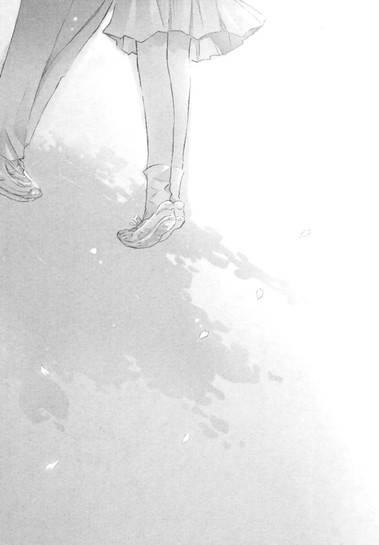 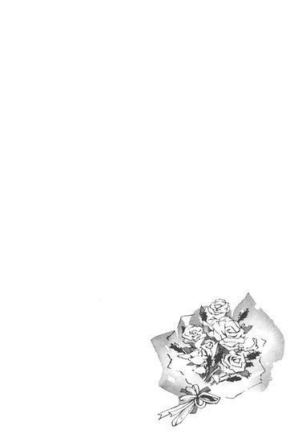 |
ななせの恋日記 特別編
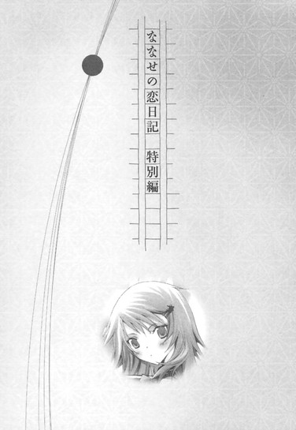
「じゃあ、明日改札で」
「うんっ。あのっ......た、楽しみにしてる」
耳にぎゅっと押しあてた携帯電話から、くすっと笑いが漏れる。
「ぼくもだよ。おやすみ、琴吹さん」
「お、おやすみなさい」
通話が切れたあと、しばらくピンク色の携帯電話を見おろして、ぼーっとしていた。
明日......本当に井上とデートなんだ。映画を見に行って、そのあとごはんを食べて、買い物もつきあってくれるって言ってた。
ついこの前まで、朝倉が事故にあって子供に戻ってしまったり、井上が朝倉の付き添いで学校へ来なくなってしまったりで、真っ暗だったのに......。まるで長いトンネルから抜け出して、急に世界が広くまぶしくなったみたい。
あのとき井上はとても辛そうで、そんな井上を見ているしかなかったあたしも、胸が潰れそうだった。
けど今、井上は学校でも明るく笑っている。周りにあわせた作り笑いじゃなくて、初めて会ったときみたいに、まっすぐな笑顔で。
井上にそんな顔を向けられるたび、あたしは頬が熱くなって、心臓が飛び出しそうになる。
プラネタリウムで、どんな人になりたいか、みんなで言いあったとき、あたしは「素直な子になりたい」って言った。
なのに井上に見つめられると、やっぱり恥ずかしくて混乱して、口調もぶっきらぼうになってしまう。
明日は頑張って、あたしから井上に話しかけなきゃ。それで、井上の前で可愛く笑えるといいな。
明日のことを考えるだけで、頬が蜂蜜みたいにとろけそうになる。
けどすぐ、現実的な問題を思い出した。
「うぅ、なに着ていこう」
ベッドの上に、タンスやクローゼットから引っ張り出した服やバッグやアクセサリーが広がっている。まるで泥棒が荒らしたあとみたいだ。
もう二時間も悩んでいる。
やっぱりこのワンピースかな？ 裾と襟元がレースになっていて可愛いし。けど、乙女すぎて引かれそう。
じゃあこっちのパンツとパーカー？ ううん、あっさりしすぎで作業着みたい。
スカートは短いほうがいいのかな。それともおしとやかに長いほうがいいのかな。初詣へ行ったときは、最初から着物って決めてたから楽だったけど、井上はどんな服が好きなんだろう。
ああっ、さりげなく訊いとけばよかったよ～～～～～～！
全身が映る鏡の前で、服を脱いだり着たりを繰り返していたら、携帯にメールの着信が入った。
森ちゃんだ。
『明日、買い物に行かない ／(^o^)＼』
とある。
ごめん、予定があるんだと返そうとして、つい最後に付け加える。
──男の子ってデートのとき、女の子がどんな格好してきたら嬉しいと思う？
返信して五秒もしないうちに直接電話がかかってきた。
「なになにななせ！ 明日デートなの？ 相手は誰？井上くん」
「ちちち違うよ......！ あたしが実際にデートするとかそんなんじゃなくて、た、ただっ、一般的にどうなのかなぁ......って、それだけで」
「ええっ、怪しいなぁ」
森ちゃんは、にやにやしているみたいだった。顔がカァッと熱くなる。
「ほ、本当に違うんだからね」
息も絶え絶えに訴えると、
「うん、そういうことにしとくよ」
と、意味ありげに言われた。
「デートの服はさ、やっぱりインパクトが大切じゃないかな」
「インパクト？」
「そう。男の子が『オレのために、こんなカッコしてきてくれた────！』って感激しちゃうような気合いが入った服とか」
き......気合い？ それって柔道着とかじゃ、ないよね......。
「まぁ、それも、いきすぎると恥かいたりするけど......水着エプロンとか......」
「ええええっ」
水着エプロンって、無理っ！ 井上のためでも絶対無理っっ！
「あわわっ、今のはたとえだから。ななせはそんなことしちゃダメだよ！彼の家の人に見られたりしたら大変──ってそれはどうでもいいんだけど、あ！そうだ！この前バーゲンで買った、あの服にしなよ。あの白一枚で、さらっとさ」
「えっ、ええ......、でも、あれはインナー用に......」
「ううん、一枚のが絶対いいって。下はふわっとしたミニスカにブーツで。きっとすごく可愛いよ」
「そ......そうかな」
「うん、ななせはもとから美人だけど、さらに魅力アップで、井上くんも見とれちゃうよ」
「井上と出かけるんじゃないからねっ！ で、でも......相談に乗ってくれて、あ、ありがとう」
真っ赤な顔で通話を切った。
◇ ◇ ◇
「おまたせ、琴吹さん」
「ううん......あたしも今、来たの」
「一緒の電車だったのかな」
「そ、そうかも......」
つっかえながら答える。
やっぱり井上と話すとき、顔がこわばってぎくしゃくしてしまう。今日は特に緊張して、首筋と脇の下が汗ばんでいる。
あぅ......本当にこの服でよかったのかな。
「じゃ、行こっか」
「う......うん」
井上は今日も明るくて優しい。さりげなく車道側を歩いて、自然な口調で話しかけてくれる。
あたしはコートの下に着てきた服のことばかり気になっていて、足もとがおぼつかず、汗がますます噴き出てきた。
映画館に到着すると、井上はまとめてチケットの代金を払ってくれた。お金を渡そうとすると、
「いいよ。琴吹さんには心配かけてばっかりだったから。今日はおごらせて」
と、お財布をしまってしまった。
「あ......ありがとう」
「どういたしまして」
明るい笑顔に、胸がきゅっとする。
ああ、井上があたしに笑いかけてくれた。初めて会った頃、井上の笑顔はいつも朝倉に向けられていたのに。あたしの目を見て笑ってくれた。
それだけでもう幸せでいっぱいになったけれど、上映室に入り席に着こうとして、早くもピンチに陥った。
「あれ？ どうしたの？ 琴吹さん？」
コートにマフラーという格好のまま、もじもじと突っ立っているあたしに、井上が怪訝そうに尋ねる。
「......」
「この席、嫌だった？ 取り替えてもらおうか？」
「そ、そういうんじゃ」
「トイレなら、まだ時間があるから行っておいでよ」
「ち、違......っ」
ごご』
ピーチ色のマフラーの端をいじって、うつむいているあたしを、井上がますます不思議そうに見つめる。
うぅぅ。
あたしは仕方なくマフラーをはずし、コートを脱いだ。
恥ずかしくて、なるべく時間をかけて、とろとろと。
井上が目を見張る。
「！」
あたしは頬が熱く燃え立つようだった。
コートの下はふわふわした素材の白いニットだった。キャミソール風のノースリーブで、肩も腕もむき出しになっている。しかも襟もとが大きく開いていて、体にぴったり沿っているから、胸も突き出る感じになって恥ずかしいっ。
森ちゃんは、「井上くんも見とれちゃうよ」、と言ってたけど、見とれるというより、ただただびっくりしてる風に見えて......やっぱり上にもう一枚重ねたほうがよかったんじゃっ！
井上が、いけないものでも見たように目をそらす。
ど、どどどどうしよう。呆れてるんじゃ......。「こいつ、はりきりすぎ、うざっ」って引かれてるんじゃ......。体がこわばり、胃の辺りが締めつけられる。
隣に座ってからも、肩をすくめて小さくなっていた。
照明が落ち、予告がはじまって、やっとホッとする。むき出しの腕や開いた胸元を気にしなくてすむから。
映画はディズニーの新作で、井上が「これなんかどう？」って勧めてくれたやつだ。あたしの好きなタイプのロマンチックなファンタジーで、井上は気を遣ってくれたんだなって、すごく嬉しかった。
思った通り好みにぴったりで、おもしろかったのだけど、だんだん寒くなってきた。
むき出しの肩から腕にかけて氷みたいに冷え切って、体の芯がぞくぞく震える。
両手で肩を抱きかかえてみたり、二の腕をそっとこすってみたりするけれど、寒気がおさまらない。
鼻水まで出てきた。
やだ......っ。井上が隣にいるのに、洟なんてかめないっ。
鳥肌が立つほどの寒さに震えながら、洟をすんすんすすっていたとき。
「琴吹さん」
耳元でささやく声がした。
「！」
ドキン！ として立ち上がりそうになるあたしの目の前に、すっとティッシュが差し出される。
「ぼくも、映画を見て泣いちゃうことあるよ」
あたしにしか聞こえない小さな声で、控えめに言う。
洟をすすってるの、井上に気づかれてたんだとわかって、全身がカァァァァァッと熱くなった。
ハンカチじゃなくて、ティッシュを差し出したということは、泣いているんじゃなくて、鼻水が垂れそうだと察してるってことだよね。あたしが洟をかみやすいように、ぼくも泣いちゃうことあるよって言ってくれたんだ。
「......あ、ありがとう」
恥ずかしくて恥ずかしくて、目の裏が赤く染まりそう。
ティッシュを受け取り、洟をそっとかむ。
井上がまた顔を寄せてささやいた。
「マフラー、肩に巻くとあたたかいんじゃないかな」
再び頬が燃え立つ。
寒くて震えていたことも、バレていたなんて。
「う......うん」
ピーチっぽいピンクのマフラーを広げて、肩から羽織る。凍えていた肌が薄いマフラーに包まれて、じんわりとあたたかくなった。
あぁっ、顔が熱いよーっ。
ちょうどコミカルなシーンで、みんながどっと笑う。
井上も隣で、くすりとする。
それが、あたしのことを笑われているみたいで、映画が終わるまで、マフラーの端を握りしめて小さくなっていた。
ぅぅぅ、次で挽回しなきゃ。
「映画、おもしろかったね」
「そ、そうだね。結構笑えたね」
歩行者天国を歩きながら、相づちをうつ。軽妙な会話は無理だけど、とにかく笑わなきゃ。口の端に目いっぱい力を入れてみるけど、頬が引きつっているような気が......。
顔、そらしたいよ～。ううん、ダメ。そしたら不機嫌そうに見えちゃう。
そのまま駅ビルへ行く。
飲食店の一覧を眺めながら、
「ごはん、リクエストある？」
井上に訊かれたので、
「別に......どこでも」
と答えて、ハッとする。
今の、ものすごく投げやりじゃなかった!?どこでもいいなんて自主性がない子と思われたかも！
言い直したほうがいい？
でもでも、どのお店にしよう。井上が食べたいものでいいよって言えばいいのかな。あぁ、それも自主性ないよっ。
あたしが一人で勝手にぐるぐるしていると、
「じゃあ、このパスタのお店にしよ」
井上がやわらかく微笑んで、女の子が好きそうなお店を選んでくれた。
「うん、い、いいよ」
あ、また、そっけなかったかも。せっかく井上が気を遣ってくれたのに。
美味しそ～～～～って、可愛く言えばよかったよ。そうだ、パスタが運ばれてきたら言おう、絶対言おう。
「美味しそう、このお店でよかったね！ ありがとう、井上」
って。
固く決意しながら、エレベーターで移動し、井上とお店へ入る。
テーブルに向かい合わせに座って、それぞれメニューを広げる。寒いからマフラー、巻いてたほうがいいよと、ここでも井上が言ってくれたので、映画館と同じようにゆるく巻きつけている。
「ランチはサラダとドリンクがつくんだね。あ、ぼくは、このタラコのクリームパスタにしよう」
「あたしは、えっと......」
メニューを睨みながら考える。
パスタを頼むときは、いつもタラコを頼む。
けど、同じメニューにしたら、やっぱり自主性がなく思われそう。井上と違うメニューにしよう。そのほうが話題も広がるし。
ミートソースは、はねるからダメ。
ペペロンチーノは、にんにくを使ってるからダメ。
ナポリタンは普通すぎ......かなぁ。
あ、この当店名物漁師のパスタって美味しそう。説明に、海の幸をふんだんに使ったトマト味のパスタって書いてある。ペスカトーレ？よし、これに決めた。
「あ、あたし、漁師のパスタで」
井上がウエイトレスさんに、オーダーを告げる。
映画の話をしているうちに、パスタが運ばれてきた。
頭の中でシミュレーションした台詞を言おうとして、声をつまらせる。
え。
漁師のパスタって......これ？
あたしの前に置かれたのは、ラーメンのどんぶりみたいな深皿で、真っ赤なトマトスープが縁に届きそうなほどなみなみと注がれ、真ん中で太いパスタがとぐろを巻き、その上にエビやムール貝やイカがこんもり盛りつけてあるものだった。
しかも、トマトスープにニンニクを使っているらしく、独特の濃い香りが湯気と一緒に立ちのぼっている。
「美味しそうだね、いただきます」
井上がたらこのパスタをフォークでくるりと巻いて、口へ運ぶ。
「うん、いけるよ」
「......」
あたしは、片手にスプーンを、片手にフォークを握りしめ、煮えたぎるトマトスープの中に鎮座するパスタを、慎重にすくった。
フォークの先に、二、三本だけ、そぉーっとひっかけて、スプーンの上で、くるくると巻く。
けど、オイリーなスープに浸かって滑りやすくなっているパスタは、うまくまとまらない。
先がぴょんぴょん跳ね、そのたびに赤い汁が飛び散って、びくっとする。
セーター白なのに。
汚さずに食べるなんて、絶対無理っ。セーターの上にぽつぽつ痕がついちゃう。それにニンニクの匂いも、すごくするし。
どうして、ナポリタンとか和風青じそとか、頼まなかったんだろう。
ほんのちょっとフォークを動かしただけで、するするほどけてくるパスタを、どうやって綺麗に口まで運んでいいのかわからなくて、あたしは泣きたくなってきた。
フォークに巻いたパスタが、冷たく固まってゆく。
そのとき、
「琴吹さんのパスタ、すごく美味しそうだね。失敗しちゃったなぁ、ぼく、そっちにすればよかったな」
「え」
井上が明るい目で尋ねた。
「琴吹さんは、タラコ好き？」
「う、うん」
「じゃあ、ぼくのパスタと取り替えっこしない？一口食べちゃったけど」
「う......うん」
「ありがとう」
井上はにっこり笑って、あたしの漁師のパスタと、自分のタラコクリームの皿を、置き換えた。
「いただきまーす」
フォークでパスタをすくって、そのままつるつるとすする。
「やっぱり美味しいや！ ありがとう、琴吹さん」
「う、ううん......あたしも、あ、ありがとう」
あたしが困っているのを見て、取り替えてくれたんだ。あたしが情けない顔で皿を睨んでたから......。
それがわかったから、嬉しいような苦しいような気持ちで、いっぱいになってしまう。
ピンクのつぶつぶがいっぱい入ったタラコのパスタは、まろやかなクリーム味で、胸がきゅっとするほど美味しい。
すぐ黙りこんでしまうあたしに、井上が自然な口調で話を振ってくれる。
学校のこととか、最近ハマってる音楽のこととか、子供の頃見たアニメとか、好きだった本のこととか。
「ねぇ、小学校のとき図書館ではじめて借りた本って、覚えてる？ぼくは、河童のクゥの話だったよ」
「それ、映画になったよね。あたしは......ポリアンナかな......。絵本だったけど」
「知ってる。〝よかったさがし〟をする女の子の話だね。ポーターだっけ」
「うん......あたしもしたよ、〝よかったさがし〟。日記にその日あった、よかったことを書いてた。給食でプリンが出たとか、授業中、トンボが窓枠に止まってたとか、担任の先生が綺麗な花のブローチをつけてたとか......そんなことばかりなんだけど......」
「へぇ、可愛いね」
「えっ！ あ、あの......っ」
可愛いって言った！
今、井上、可愛いって。
頬がみるみる熱くなり、同時にちょっとだけ惨めになった。
喜んでる自分が哀しくて──嬉しいのに、すーっと頭が冷えて、胸がズキズキする。
だって、あたしは井上の一言で、こんなに舞い上がってあたふたしているのに、井上は全然変わらないから。
きっと、可愛いって言葉にも、たいした意味はないんだ。
あたしばっかり浮かれて、バカみたい。
「......井上は、女の子とデートするの慣れてるんだね」
「え」
思わず口に出して、ハッとする。
「あ......っ！ ごめんなさいっ。嫌味とかじゃないの。そんなんじゃなくて──あの、だから......あ、あたしばっかり緊張してるみたいで──あたしは、井上としかデートしたことないし──だからその──」
なにを言いたいのか自分でもわからない。井上がびっくりしている。やだ、どうしよう。みっともない。ますますうろたえて、「あのっ、それで」と手を振り回していたら、指がコップにぶつかって、中身を倒してしまった。
「ひゃっ」
テーブルに水が広がってゆく。慌ててもとに戻そうとしたらさらに手がすべって、コップが床に落ちる。
「！」
ガシャーン！ と音を立てて、コップが割れた。
ウエイトレスさんが飛んでくる。
「すみません」
井上が謝り、ウエイトレスさんが割れたコップを片づけてくれた。
「ご......ごめんなさい」
あたしは耳まで赤くなり、体を縮めた。
井上は、
「大丈夫だよ」
と言ってくれたけど、今すぐ地面に埋まってしまいたかった。
◇ ◇ ◇
本当にすみませんでしたと何度も頭を下げて、お店を出る。
食事の会計は井上がした。
「今度、お茶でもおごってくれたらいいよ」
「......うん」
今度......あるのかな。
こんなに失敗ばっかりしちゃって。
「そうだ、食事のあと、買い物に行きたいって言ってたよね？」
「......やっぱりいい」
「え、でも」
「き、昨日森ちゃんと出かけて、そのときにすませちゃったんだ、だから、いいの」
買い物なんて口実で、ただ井上とお店を見て回ったら楽しいだろうなと思っただけだった。
だけど、これ以上みっともないところ見せて嫌われたくない。せっかく井上がデートに誘ってくれたのに。迷惑ばかりかけて、一緒にいたら、またボロがでる。もう帰りたい。油断すると泣きそう。目の奥がひりひりする。
井上は困惑しているみたいな顔であたしを見ていた。
それから、明るい表情で言った。
「じゃあ、悪いんだけど、ぼくの買い物につきあってくれるかな？」
「あの......買い物って、ここで？」
「うん」
でもここ、男の子が来るような店じゃないのに......。
棚に可愛らしいぬいぐるみや、きらきらしたストラップ、花柄のティーカップや、化粧ポーチやランチマット、カラフルな手帳やレターセットが並んでいる。
周りも、女の子のお客ばっかりだ。
「妹にお土産を買ってあげようと思って。琴吹さん、選んでくれるかな」
「あ、あたしが......？」
「うん。やっぱりこういうのって、女の子のほうがわかるかなと思って。琴吹さんが気に入ったものでいいから」
「えっと......」
「こっちのうさぎのぬいぐるみとパンダのぬいぐるみ、どっちが好き？」
「えっと......パンダ」
「じゃあ、このピンクのカップと、この花柄のカップは？」
「......ピンクのほう」
「このランチマットの中だったら？」
「......苺の模様が、可愛いと思う」
そんな風に次々質問されて、答えてゆく。
「ありがとう、会計してくるね」
井上がパンダのぬいぐるみとピンクのマグカップを持って、レジへ向かう。
その間、あたしは、ぼーっと品物を眺めていた。
......あたしも、なにか買おうかな。
井上とデートするの、これが最後になるかもしれないし。
せめて記念に。
シールのコーナーで、果物やお菓子や星の形をしたシールシートを眺めていたら、また涙が込み上げて来た。
井上、きっとあたしのこと、ガサツでつまらない子だと思ってるよね......。井上とつきあえて、デートまでできてすごく嬉しかったのに、井上に近づけば近づくほど、あたしの欠点ばかり井上に見られちゃう。
井上は、あんなに優しくて、女の子に慣れてるのに。あたしはろくに話もできなくて、ぶすっとしてばかりで。あたしと一緒にいても、井上は楽しくないよね。もう井上はあたしを誘ってくれないかもしれない......どんどん落ち込んで、うなだれて真っ暗になっていたときだ。
コートのポケットで携帯が鳴った。
アイドルの女の子が歌っている、お気に入りのラブソング。
え！ なんで？ この曲、井上の着信専用で......！
慌てて携帯を耳に当てて、声をひそめる。
「も、もしもし」
「琴吹さん」
スピーカーの向こうから、井上の声が聞こえてくる。
「い、井上......！ なにやってんの」
周りをきょろきょろ見渡す。井上の姿はどこにも見あたらない。もしかして一人で先に帰っちゃったの！
ショックで体から力が抜け、喉が震えた。
嘘......。ひどい。
井上が優しい声で言う。
「顔を見ながらだと、照れくさくてうまく話せそうになかったから」
「えっ」
「今日は、琴吹さんと過ごせて、すごく楽しかったよ」
井上の言葉が、ゆっくりと......耳の奥に染みてゆく。
「確かにぼくは、美羽といつも一緒にいたから、女の子と出かけるのは、その......慣れてるかもしれないけど......」
あたしが言ったこと、気にしてくれてるんだ。
「でも、琴吹さんと美羽は違う」
胸が、きゅっとする。
「琴吹さんと出かけるのも、話をするのも、ぼくはとても緊張するよ。知らないことがたくさんあるから戸惑ってるよ」
本当に？
あたしだけが、ドキドキしてるんじゃないの？
井上もあたしと話すとき、ドキドキしてくれてるの？
「同じだよ。ぼくも琴吹さんと。だからこれから少しずつお互いのこと、わかりあっていけたらって思ってる。琴吹さんもどんな小さなことでもいいから、考えていることを話してくれたら嬉しい」
心臓が甘く高鳴って、気持ちがあふれそう。
井上が、「店の外で待ってる」とささやく。
携帯を耳にあてたまま、小走りする。
店の前の歩道で、あたしと同じように携帯を耳にあてた井上が照れくさそうに笑っていた。
午後の日射しを浴びて、井上の顔がきらきら輝いて見える。
甘い、甘い、笑顔。
井上が、店の名前が入った手提げの紙袋を、あたしのほうへ差し出す。
「これ、今日の記念に」
「い、妹のお土産じゃなかったの？」
「それも買ったよ。でも、こっちは琴吹さんの分。マグカップでよかったかな」
手に持つと、紙袋は見た目よりずしっと重かった。
あのピンクのマグカップ？
井上は優しい目で笑っている。嬉しくて胸がはちきれそう。
あたしも笑った。
無理して笑うんじゃなくて、今、心の中にあるきらめくような気持ちを、井上に少しでも伝えたくて。
「ありがとう」
井上の口元もほころぶ。
「行こうか」
携帯をぱちりと閉じて言う。
あたしも携帯を閉じる。
「うん。あっ、やっぱりちょっと待ってっ。買いそびれたものがあるの。店に戻ってもいい？」
「じゃあ、ここで待ってるよ」
「す、すぐ戻るね」
振り返りながら叫ぶあたしを、井上が優しい顔で見送る。
あたしは店へ飛び込み、水色のマグカップを手にとった。あたしから井上へのプレゼントに。
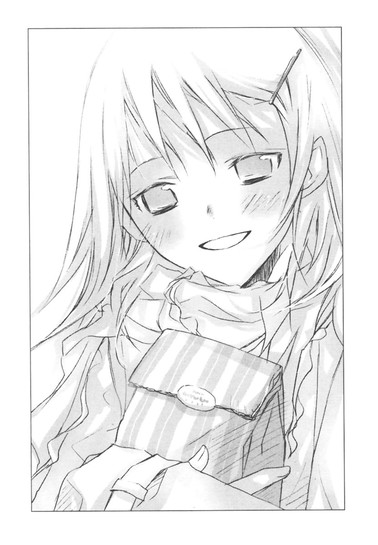
それからシールを置いてあるコーナーへ突き進む。
そうして、泣いてしまいそうなほど幸せで嬉しかった今日の記念に、ハートのワンポイントが入ったマグカップの形のシールを買ったのだった。
帰り道、井上と手を繋いで歩いた。
「映画、また行こう、琴吹さん」
「うん」
「水族館とか遊園地でもいいね」
「そうだね。動物園も、いいなぁ」
「琴吹さんの好きな動物って、なに」
「うーんと......ペンギン」
答えながら、家にあるペンギンのぬいぐるみを思い出して、ちょっと頬が熱くなる。
「井上は」
「ユキヒョウかなぁ。白くて綺麗だよね。あ、今日の琴吹さんの服も、可愛かったね」
「な、なんで今、言うの......っ」
「え？ 白いセーターだったから。とっても似合ってたよ。ちょっとその......ドキドキしちゃったけど」
井上がほんの少し赤くなる。繋いだ手が少し汗ばんでいるのは、あたしの汗？それとも井上の？
「バ、バカっ」
「あ、ごめん」
「ううん、謝ることはないけど......でも、あの。えっとね、嬉しくて......恥ずかしいの」
手のひらにいっぱい汗をかきながら、あたしはそっと告白した。
◇ ◇ ◇
夜、お風呂からあがったあと、井上からもらったピンクのマグカップにミルクティーを入れて、日記を書く。
そこにマグカップやハートの形のシールをぺたぺた貼って、今日見た映画の半券や、シールとマグカップを買ったときのレシートも貼って、にこにこしてしまう。
今日は、〝よかった〟が、たくさん、たくさん、並んでいる。
井上と一緒にいると、〝よかったさがし〟をしなくても、いいことが向こうから押し寄せてくる。
ペンを置いて、ペンギンのぬいぐるみを胸にぎゅっと抱きしめる。
首に結んだリボンの真ん中に止めてある校章は、初めて会ったあの日に井上からもらったものだ。
井上の顔を思い浮かべながら、あたしは頬を真っ赤に染めて、ペンギンのぬいぐるみにキスをした。
「井上、おやすみなさい」
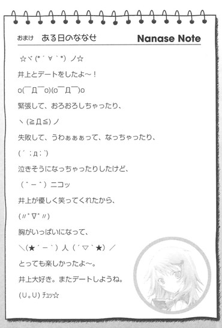
あとがき
こんにちは、野村美月です。〝文学少女〟挿話集第二弾は予告通り、琴吹さん＆森ちゃん＆反町くんがメインです！
『ハイネ』を書いたのは、本編の『天使』と『巡礼者』の間です。本編が美羽の暗躍やらなんやらでとにかくきつかったので、明るい話が書きたかったのですよ～。
反町くんの一人称は、書いていて非常になごみました。早とちりな森ちゃんも楽しかったです。竹岡さんのキャラデザがまた絶品で、ラフを一目見て、この二人でもっと書きたい！という衝動がむくむく沸き起こり、バイロン→中也→タゴールと続くシリーズとなったのでした。
作中使用した詩はどれもお気に入りです。中でもタゴールの『ギタンジャリ』は一文一文がうっとりで、大っっっ！お薦めです！ベンガル語を訳したものが正道なのかもしれませんが、英語版訳の透明感に、やっぱり震えてしまいます。
ところで、反町くんのあの敵討ちのシーンは、『作家（下）』のプロット段階から組み込んでおりました。なので、執筆中はシリアスなシーンなのにもかかわらず、物陰でおたおたしている反町くんを想像して一人で笑ってしまいました。
森ちゃんの名前は、私は可愛いと思いますよ～（漢字はちょっとアレですが）。
最近はびっくりするような名前をよく見かけますよね。私の本名は、わりとよくある名前なので、華やかな名前に憧れます。子供の頃は、外国のお話でフロレンティーナとかディアマンティーヌとかいう名前を見ては、いいなぁと溜息をついていました。懸賞の当選者の名前一覧や、赤ちゃんの名付け辞典を見るのも大好きです。
高校の国語の作文で『自分の名前』というお題が出たとき、お父さんたちはもう少し創意工夫してほしかった等々不満を書き連ねたら、三者面談のとき担任の先生（国語教師）から父に、「私の娘も○○さんと同じ名前なんですよ、はははは」と、にこやかに告げられて、冷や汗をかきました。
けど今は、自分の名前も、漢字に込められた意味も、すっっっごく好きです。
なので森ちゃんも何年後かには、名前をつけてくれた両親に感謝しているのではないでしょうか。それともやっぱり名前を呼ぶのはＮＧのままでしょうか......うーん......。
挿話集２は琴吹さん特集でもありました。そのわりに不憫だったり、外伝でも菜乃に押されて、ますます可哀想だったりしますが、きっと幸せになるので、も、もうちょっと待ってください。
知り合いの作家さんが、「ななせは、井上心葉の物語のヒロインではなかったけれど、琴吹ななせの物語の主人公なんですよね」とおっしゃってくださったのに、じぃんとしました。まさにその通りだし、それは他の登場人物全員に言えることだと思います。誰でも自分の物語の主人公ですよ！
話は変わって、イラストの竹岡様、外伝の挿絵すごくすごく素敵でした！三つ編みの片側結びのカラーはこちらからのリクエストだったのですが、想像以上でしたよ～。菜乃の表情が、どれもいちいち可愛くて、心葉との対話のカラーはパソコンの壁紙にしています。
同じ頃、コミック版の高坂りと様も雑誌のカラーで、片方だけ三つ編みの遠子を描いてくださいました！麻貴のアトリエにある遠子の絵が髪を半分ほどいているのは、実は高坂さんの案だったりします。三つ編みのままゆくか、ほどくか迷っていたとき、お食事会があり、ご相談したところ、「片方だけほどくのはどうですか」とご提案してくださったのでした。コミック版『〝文学少女〟と死にたがりの道化』は絶賛発売中です！
また、日吉丸晃様画のコミック版『〝文学少女〟と美味しい噺』は、『ビーンズエース』さんから『月刊Ａｓｕｋａ』さんへ移動になりました。七月二十四日発売の九月号から連載再開しておりますので、こちらもよろしくお願いします。ちらっと出てくる大人版心葉と中学生の舞花が良い感じですよ～。
劇場版アニメも、シナリオが完成しキャストも決まってまいりましたので、続報をお待ちください。
それでは！ 次回は外伝２でお会いしましょう。
※作中、次の著作を引用、または参考にさせていただきました。
『世界の詩集三 ハイネ詩集』収録「あなたの青い目で」「告白」「歌のつばさ」「愛のあいさつ」「ばらゆりはと」ハイネ著、井上正蔵訳、株式会社角川書店、昭和四十二年二月十日／『世界の詩７バイロン詩集』収録「Ｍ・Ｓ・Ｇに」「惑いは破れ、恋は去りぬ」「ロマイカ語の恋の歌」「印度風の唄」「追憶」「女よ」「二人が別れたとき」「別れる時に」バイロン著、阿部知二訳、株式会社彌生書房、昭和三十八年十一月二十日／『世界の詩18中原中也詩集』収録「サーカス」「時こそ今は」「盲目の秋」「妹よ」「汚れつちまった悲しみに......」「悲しき朝」中原中也著、株式会社彌生書房、昭和三十九年八月十日初版発行、昭和六十三年五月十日改訂十四版発行／『新潮日本文学アルバム30中原中也』編集・評伝秋山駿、エッセイ大岡昇平、株式会社新潮社、一九八五年五月二十日／『中原中也』大岡昇平著、株式会社角川書店、昭和四十九年一月十五日／『タゴール詩集』タゴール著、渡辺照宏訳、株式会社岩波書店、一九七七年一月十七日／『世界の詩39タゴール詩集』タゴール著、山室静訳、彌生書房、昭和四十一年十月五日／『タゴール詩集新月・ギタンジャリ』タゴール著、高良とみ訳、アポロン社、昭和三十七年三月五日／『ロリータ』ウラジミール＝ナボコフ著、若島正訳、株式会社新潮社、二〇〇五年十一月三十日／『ケストナー少年文学全集四飛ぶ教室』エーリヒ＝ケストナー著、高橋健二訳、株式会社岩波書店、一九六二年五月十六日／『銀の匙』中勘助著、株式会社岩波書店、一九三五年十一月三十日第一刷発行、一九九九年五月十七日改訂第一刷発行
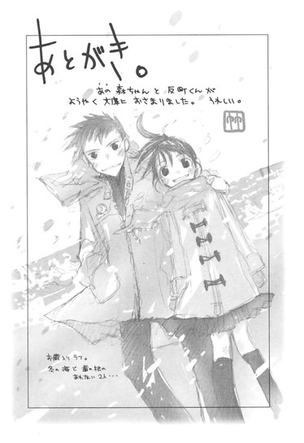
あとがき。
あの森ちゃんと反町くんがようやく文庫におさまりました。うれしい。
お蔵入りラフ。
冬の海で歯の根のあわない２人...
初出一覧
「森ちゃんのつぶやき」（「FBonline 2008 年３号」掲載）
「〝文学少女〟と愛を叫ぶ詩人」（「FBonline 2008 年４号」掲載）
「〝文学少女〟の今日のおやつ ～『ロリータ』～」（「FBonline 2007 年11号」掲載）
「〝文学少女〟とキスを待てない詩人」（「FBonline 2008 年10号」掲載）
「〝文学少女〟の今日のおやつ ～『飛ぶ教室』～」（「FBonline 2007 年12号」掲載）
「ななせの恋日記 其ノ一 たったひとつの願いごと」（「FBonline 2007 年８号」掲載
「〝文学少女〟の今日のおやつ番外・ななせの恋日記」より改題）
「ななせの恋日記 其ノ二 大嫌いの裏側」（「FBonline 2007 年９号」掲載
「〝文学少女〟の今日のおやつ番外・続ななせの恋日記」より改題）
「ななせの恋日記 其ノ三 明日にはきっと」（「FBonline 2007 年10号」掲載
「〝文学少女〟の今日のおやつ 番外・続々ななせの恋日記」より改題）
「〝文学少女〟と汚れつちまつた詩人」（書き下ろし）
「〝文学少女〟の今日のおやつ ～『銀の匙』～」（「FBonline 2008 年１号」掲載）
「〝文学少女〟と祝福する詩人」（書き下ろし）
「ななせの恋日記 特別編」（書き下ろし）
底本：〝文学少女〟と恋する挿話集２
野村美月
二〇〇九年九月一〇日 初版発行
入力：
校正：鹿仔